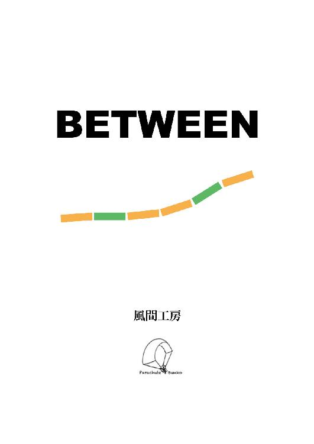
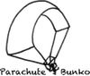

| BETWEEN (パラシュート文庫) | |
| 風間 工房 | |
| Parachute Bunko (2018) | |
風間 工房

駅の改札を抜け仙山線６番ホームへと平野しんらは降りてきた。長くも短くもない黒髪で痩せ型の体格。服装は半袖のシャツに黒のチノパンというラフな格好でバックをたすきにかけている。
特に急ぐでもなくだらだらと惰性で歩くでもなく、いつもと同じスピードで、同じ経路を、同じ時間帯に通過して６番線ホームへとたどり着く。
大学からの帰りにどこかに寄り道をすることもできたはずだ。駅前のビルに入って雑貨屋を覗いて見るとか。カフェに入ってコーヒーを一杯飲み一息つくとか。
しかし、彼はどこにも寄り道をせずに一直線に駅ホームに向かって歩いてきたのだ。
彼はまったく寄り道をしないタイプというわけではなかった。お店に入るのに抵抗を感じているわけでもないし、持ち合わせのお金がないわけでもない（常に数千円は彼の財布の中に待機はしていた）。
簡単な話が"ただそうしないだけ"であった。
特に目的や予定がなければ、こちらからは働きかけをしない、それが平野しんらという人間であった。見方によればつまらない生活を送る男子学生として捉えられかねない（現に彼の友人の目にはそのように映っていた）が、本人曰く不器用なりにも、ただシンプルに生きてきたのだ。
朝起きて朝ごはんを食べ、昼は学校で勉学に励み、夜は早めに就寝をする。
工場のベルトコンベアーに乗って左から運ばれてきたモノにほんの少しばかり加工を施して右へと受け流して作業をこなしていくのと同じように、左から来たスケジュールに気持ちばかり手を加えて右へと受け流し、これまでの人生を淡々と生きてきた。特に失敗はしないが成功という成功もない人生を。
平野しんらは今仙台駅から国見駅へと向かう仙山線ホームの中に一人佇んでいた。
いつもなら２０人から５０人程度の乗客が６番線ホームで電車を待ているはずなのだが、今日に限っては誰もいなかった。
佇むという言葉が適切なまでに彼一人が駅ホームの黄色い線の内側にぽつんと立ち尽くしていた。
普通の感覚を持った人であればすぐにこの状況を訝るはずである。
どうしてホームには人がいないのか？
いつもなら十数名程度の乗客が電車を待っているはずなのに。
どうして物音ひとつ聞こえてこないのか？
いつもなら売り込みのセールスのようにけたたましい駅員のアナウスがホームの中に鳴り響いているはずなのに。
もしかしたら自分は発車時刻を間違えたのかもしれない？
等々。
しかし、平野しんらは駅ホームに自分一人しかいないこの状況を気にかけることもなくゆっくりと駅ホームのベンチに腰を下ろした。
しんらはホームの屋根と屋根の間に垣間見える細く青い空を見つめていた。何も考えずにただぼーっと見つめ、海を眺めるのと同じ時間性をその細長の空間に見出していた。
頭の中を空っぽにしていたちょうどその時、駅員のアナウンスもなしに突然電車がホームへと入り込んできた。
電車が近づいてくる時のガタンゴトンという音や振動もなく、急に電車がホームに滑り込んできたのだ。
さすがにしんらはこれには驚いたらしく体をびくりと震わせると細切れの空から目を外して目の前を通過する列車に目を移した。
電車は速度を落とすことができなかったのか急ブレーキをかけ、停車位置を大きくオーバーして停車した。興奮が冷めやらない鼻息のようなエアーの音とともに電車のドアが一斉に開いた。
しかし、３両編成の電車から駅ホームへ降車してくる人影は誰一人として見当たらないし、電車に乗り込む乗客もしんらの他には誰もいないようであった。
彼は一応電車側面に表示されている行き先を確認した。そこには『国見行き』と表示されており回送列車ではなく彼の待っていた１５時５１分発の国見行きの電車であることがうかがえる。
しんらは電車に乗り込みドアから近くの手すりのある長椅子に腰を下ろした。一応辺りをキョロキョロと見渡してみたのだが車内にもホームにも他の乗客の姿はなく、この電車に乗っているのはしんらひとりのようであった。
腕時計の時刻を確認すると１５時３４分。発車にはまだ１５分以上時間があった。
誰一人電車に乗ってこないなんてめずらしくはあるけれども、
そんな日もあるでしょうよ。
なんだか今日は疲れたな......。
しんらは仙山線ホームに入ってから歩みを進めるごとに疲れにも似た重みのようなものを感じていた。まるで浅瀬から海の深くに歩いていくことで徐々に体への抵抗が増していくような重みを。
また、少しの息苦しさも感じていた。酸素が薄いといったことでも湿気が高いというわけではないのだが、空気以外の『何か』を鼻腔から呼吸に合わせて一緒に出し入れしているような感覚であった。
今日はまじめに講義を聞いていたから。
疲れちゃったのかな......？
彼は朝から大学の講義を連続で受講していた。１時限目に憲法基礎を、２時限目に行政学を、３時限目に国際政治を受けていた。特に国際政治の無政府的国際システムの話は彼の心を惹きつけた。
国土や国力が相対的に異なる諸国家から成り立ち、すべての構成要素の上に絶対的な政府が存在しないシステムの中では正義や法は統一されておらず、ある意味では世界は自然状態、つまりは万人の万人に対する闘争であると教授は述べていた。
しんらはそんな自然状態の話を聞ききながらなぜか牧場のふかふかの草の上に寝そべって草を食む牛の群れを思い浮かべていたのだが、その想像自体が彼自身のこれまでの生き方そのものであった。
連続で講義を受講しただけでなく、普段以上に集中して人の話に耳をすませていたので倦怠感にも似た疲れを感じているのだろうと彼は推測していたのだが、その答えは違っていた。
それに平野しんらが疲れの症状の原因を現時点で言い当てることはできないはずである。なぜなら彼の身にはこれまでに彼が一度も経験したことのない、一般人であれば絶対に遭遇することのない出来事が巻き起こっていたのだから。
世界をシンプルかつ直線的に捉えがちな彼の意思とは関係なく状況は進展して行くのである。誰かの意思が彼を新たな世界へと誘い、世界は彼を飲み込んで行った。
□
しんらは電車内の長イスに背筋を伸ばして座りながら目を閉じてゆっくりと深呼吸をしていた。へそのあたりの丹田を意識して深く空気を吸い、ゆっくりと吐き出す。決して急ぐことなくゆっくりと大きな呼吸を何度も繰り返した。この呼吸法は彼の習慣であり癖でもあった。緊張している時や疲れている時などによくこの呼吸法を行っていた。特に誰かから教えられたわけではないのだが、この呼吸法を行うと自然と落ち着くことができ、心持ち疲れも少し癒えたように感じられた。
深く呼吸をしているとしんらの脳内に様々な映像が浮かんできた。浮かぶというよりも流れ込むといったほうが適切なのかもしれない。彼が意識するにせよ、しないにせよ、様々な映像が脳内のスクリーンに次々に現れてはフェイドアウトして行くのだ。
高校生の時に部活動に励む光景
昼休みに弁当を食べている光景
雨の日の図書室でこっそりと雑談する光景
学校のプールに浮かびながら空を見上げている光景
どうしてこんなことを今になって思い出すのだろうと彼は不思議に思った。特に印象に残っている出来事でもなければ、突然思い出すような関連性も見受けられないのにもかかわらず。それにどの映像にもしんら自身が客観的に映し出されていた。
脳内に映し出される映像のなかで誰かがしんらを呼ぶ声が聞こえた。囁くようで、か細い声で何度も何度も彼のことを呼び続けていた。
しんら君......
しんら君......
しんら君......
彼を呼ぶ声は小さくはあったのだが声の中に確かな意志を感じることはできた。彼を呼ぶ声は徐々に強くなり、何層にも反響されてしんらの脳内に響き渡っていった。
音の振動は彼の頭を抜けて顔の表面を這い首筋を通過してつま先まで達し、しんらを覆い尽くしていった。
□
「しんら君」不意に耳元で女性の声がしたのでしんらは驚き、声のした方向に顔を向けた。耳元で声が聞こえたのだからすぐ隣に誰かが座っているものと思ったのだが、声の主はしんらが腰掛けている長いすの反対の端に腰掛けていた。色白の同い年ぐらいの女性で微笑みを浮かべている。
！！
......雪乃。......綺麗......だね。
彼女はイスから立ち上がるとしんらに近づいてきた。
照れを隠しているのか戸惑うように、遠慮がちに、ゆっくりとしんらに近づいてくる。
しんらも立ち上がり自然と吸い寄せられるように彼女の方へ歩み寄って行った。
彼女は頬を少し紅潮させ、ためらいがちにしんらに身を寄せ抱きついてきた。
しんらは戸惑いつつも彼女を優しく抱きしめた。
初めから台本で二人がそのように振る舞うことが決められたかのように互いを優しく抱きしめ合っていた。
！！！
激痛がしんらを襲った。
脇腹のあたりが燃えるように熱かった。
顔を歪め、脇腹を見るとＹシャツが真っ赤に染まり、血が流れ続けていた。
目の前の雪乃の手にはべっとりと血糊がついたナイフが握られていた。
しんらは立っていることができなくなり、糸を切られた人形のようにその場にバタリと倒れ込んでしまった。
僕は......死ぬのか。
......なぜ？
朦朧とする意識の中でしんらは雪乃を見上げていた。
彼女は人間味を欠いた冷ややかな表情で道端に転がっている物を見るかのようにしんらを見つめていた。
彼女の表情からは何の感情も読み取ることができなかったがしんらは彼女のことが綺麗だと感じていた。そのまましんらの意識は徐々に遠のいていった。
ガタン！
という電車の振動でしんらは目を覚ました。どうやら眠ってしまっていたようだ。腕時計を確認すると１５時５４分を示していた。ほんの２０分程度の仮眠ではあったのだが彼にとってはとても深い眠りに、森全体が眠るような深く濃密な時間に感じられた。
先ほどまで見ていた夢や過去の記憶がしんらの中で混濁し、現実との境目がぼやけてしまっていた。
寝覚めが悪いらしくまだ頭にぬるま湯が溜まっているようで意識の焦点が定まらなかった。
夢に出てきた美しくも感情を書いた雪乃の表情が思い出された。
しんらは腹をさすり自分が怪我をしていないかを一応確認してみた。案の定痛みもなければ血糊一つ付いていない。Ｙシャツをめくってみても刺し傷はなかった。
夢なのであるから怪我がないことも当たり前ではあったが脇や首筋にはじっとりと汗をかいていた。
嫌な夢を見たものだね。
まさか雪乃に刺されるなんてさ、
病んでるのかな......僕は。
しんらは苦虫を噛んだような表情を浮かべ、ため息をついた。
そこでガタンと電車が一度大きく揺れた。大きな波を乗り越えるように車両が前後にぐらりと揺れ動いた。
彼はとっさ手すりにつかまり身構えた。
事故だ......！
間違いなく脱線した！！
しんらはすぐに窓の外に目を走らせた。空の青と積乱雲、それが彼の目に飛び込んできた。
彼の乗る仙山線は決して地上より離れたところを走る路線ではなく、常に地面の上を、家々の間を縫うようにして走っていくローカル線であった。もしも窓越しに空と雲が見えるということは電車が傾いているとうことであり、車両が傾くということはおのずと電車は脱線するということであった。
しんらはすぐにそのことを悟り、死ぬことへの恐怖を感じて思考が停止してしまっていた。
その一方で心臓の鼓動は今にも爆発するかのように活発であり脳は膨張して器から飛び出てきそうなほどあった。
ああ......死ぬのか......、
僕は......。
しんらは頭を低くしてイスの傍にあるポールを抱くようにして固まっていた。
その姿勢のまま３０秒が過ぎ、......１分が経過したが何事も起こらなかった。
電車がどこか建物へ激突するような音や振動もない。
しんらは恐る恐る顔を上げ窓の外を眺めてみた。
空の青と積乱雲。絵の具を塗りたくったような夏の青い空と、もこもこに発達した積乱雲。それがしんらの目に映し出されていた。
電車は先ほどから下向きに少し傾いてはいるのだが大きく揺れることもなく走っていた。
彼は震えながらも窓に両手を当てて外の様子をつぶさに観察してみた。
！！！！？？？
電車は空を走っていた。線路も踏切もない空の上を電車は走っていた。周りには民家もビル群も田畑もない。あるとすれば遥か下の方に見えるレゴのような塊が民家やビルに当たるのであろう。土色の外観の仙台駅がありその西側を中心に街が発展している。駅前のビルとその先のオフィス街。欅の木は建物と建物の間を縫うように所狭しと植えられ、定禅寺通、青葉通、この道をまっすぐ西に向かうと広瀬川にぶつかる。そして広瀬川に迫るようにして青葉山がそびえている。
電車は仙台の街の遥か上空数百メートルをらせん状に走りながら徐々に降下していた。
浮いている？
電車が......空を走る？？？
ということは、ここはもう天国なんですか？
しんらは眠りから覚めた時のように再び体を触り始めた。今度は入念に体の隅から隅までを触っていく。肩から腕、腕から指先。腹から胸、胸から背中。太もも、膝、すね、足先、最後に股間。時には優しくなでるようにまた時には激しく痛めつけるように叩いていった。
自分は生きているのか、死んでいるのか。これは夢なのか、現実なのか、天国なのか。
自身の体を触り、叩くことでその疑問への手がかりをつかもうとしていた。
しんらは突然大声を発した。
何度も繰り返し執拗なまでに声を発する。
『わあああああ』だの『ぎゃあああああ』だの『すみませええええええん』だの車内には彼の叫び声が響き渡っていた。大声を発して自らの声を聞き、音の振動を鼓膜で感じ、その震えを幾度も体感することでこれは現実ですよと言った納得を得ようと試みていたのだ。
「はぁ......」気の抜けたため息がこぼれでた。
どうやら......たぶんこれは現実なのか？
血が流れ、痛みを伴う現実。
お腹が空き、排便をする現実。
夢ではない。......僕は仙山線に乗っている。
いつもと違うとすれば空を飛んでいるということではあるけれども......。
それ自体が飛んだことのように思えてならないな。
「まいったな......」
しんらはここで一旦状況を整理してみることにした。なぜ自分は今このわけのわからない状況に陥っているのかということについて時系列を追って検証してみることにしたのだ。あやふやでごちゃまぜになっている今日の出来事を一度脳のガラクタ箱から取り出し表面のホコリと曇りを拭い、綺麗にしてからきちんと順序立てて並べ直すのだ。
まず、朝起きた時点ではいつもと変わったところはなかった。カーテンの隙間から差し込む日の光も、目覚ましが鳴り響く音も、時計の進み具合もなんら変わりはない。
その後に朝食を食べた。食パンにマーガリンを適量ぬり、トースターで２分焼く。そして新聞の朝刊を読みながら牛乳と一緒に咀嚼した。
その後に歯を磨き身支度を整えてから歩いて駅へと向かった。朝７時前の国見駅はまだラッシュ時間前で通勤・通学のサラリーマンや学生の人影はまばらで、それから......。
そこで、しんらは回想するのを止めた。そんなことをしても無駄だと言わんばかりに首を横に大きく振った。
分かっているはずだ。
一体どこで状況が大きく変わったのかを。
午後１５時の仙台駅仙山線のホームには人は一人もいなかった。
いつもなら２０数名はいるはずだ。
あの時に何かが起こったんだ......。
って何が......？
..................
その後に急に電車が突然入っきて、
原因不明の息苦しさを感じて意識を失ってしまった。
そして、目が覚めた時には空飛ぶ電車に乗っていた。
......。
回想終了。
やれやれ、......困ったことになったね、
本当に。
しんらは視線を外に向け、もう一度その空の青さをじっと眺めた。
なぜこのような状況に陥ってしまったのかについての説明は誰もしてくれないし、説明をしてくれる予定も今の所はないようではあったのだが、自分が空飛ぶ電車に乗っているというこの状況自体は理解することができていた。
しんらはダラけきった格好で長イスに座り天井を見上げてふたたびため息をついた。
この状況は容易にはカタがつきそうにはないだろうな。
そのことだけは納得したかも......、
僕の手にありあまる事態だよ。
......どうしょうもないじゃない。
電車の高度が３００メートルくらいまで降下した時、遠くの方から何かが電車に近づいてきた。
最初は鳥の群れが飛んでいるのだろうと思い、しんらはぼんやりとその一団を眺めていたのだが、群れとの距離が近づくに従って飛んでいる物体が鳥でないことに気がついた。しかも群れの動物にはどれも人が乗っていた。鳥であるならば翼を左右に広げ羽ばたくはずであるのだがそれには両翼ついておらず、体を前後に、小刻みに動かして空を進んでいた。その姿はどちらかといえば魚に似ている。
しんらは車窓に両手をつき、食い入るようにその光景を眺めた。
距離が数十メートルまで近くなった時、謎の集団への警戒が驚きへと変化した。
「あれは、......イルカ......？？？」
イルカであった。水族館やテレビの番組で見るようなイルカが空を飛んでいた。大きさは３ｍ〜４ｍほどあり、空を飛ぶというよりは水の中を泳ぐように電車の周りを縦横無尽に泳いでいた。イルカの背中には、またがるようにして人が乗っており、何人かはしんらに手を振っていた。
反射的にではあるがしんらも手を振り返し、頬を赤らめた。
おいおい、
ここはどこかの夢と魔法のテーマパークですか？
２０頭ほどの群の中から２頭のイルカが電車に横付けして並走を始めた。１頭には少女が乗っており、もう１頭には誰も乗っていなかった。イルカに乗った少女は小麦色に日焼けした肌でショートヘアー、服装はＴシャツに膝までのパンツを履いていた。彼女は身振りを交えてこちらに何かを訴えかけて口をパクつかせているのだが窓が閉じているため彼女の声は車内までは届かず、また幼稚園の先生のようなジェスチャーでは彼女の意図を読み取ることはしんらにはできなかった。
少女は電車側面にある小窓のような扉を開けその中にあるレバーをゆっくり回した。するとしんらの目の前の乗車扉に数センチばかり隙間が生まれた。彼はその隙間に指を差し込み力づくで扉を開け放った。
外と車内の気圧が違うため空気が一気に車外に流れ出て強風が巻き起こった。
しんらは風圧に押されて車外に飛ばされそうになったのだが、かろうじて手すりにつかまり持ちこたえていた。
「君！......早くこっちへ」イルカに乗る褐色の少女が大声で言った。そしてドアの位置に誰も乗っていないイルカを横付けした。
「僕にこのイルカに乗り移れってこと？」
「そう、早くして。時間がないの」
......冗談ではない。
こんなの危なすぎる。
このまま電車に乗っていれば無事に駅に停車する可能性だってあるかもしれないのに、なぜわざわざイルカに乗り移らなくてはならないのか。
それに、もしイルカから落ちてしまったら僕は一体どうなってしまうのか？
ほんのかすり傷程度で助かりました、とか。
打撲で痣ができました、とかですか？
いやいやいや、そんなはずはないよね。
確実に死んでしまうよ。
けれども、彼女がイルカに乗り移れと主張するということは電車は駅には停車せずに墜落するかもしれないということなの？
............
仮に僕がイルカに無事に乗り移ることができたとして、果たしてイルカの操縦はできるかな？
これまでにイルカに乗ったことはないけれども......原付や乗用車なら運転したことはあるし。一応、普通免許は持ってはいるのだから、もしかしたらイルカの操縦もできるのかもしれない......ってことはないか......。
普通の列車でさえ非常時コックを使って緊急降車したこともないのに、
ましてや空飛ぶ電車からイルカに乗り移るなんて僕にはちょっとな。
映画の中のアクション俳優のようにはいかないよね。
しんらは怖がりつつも電車のドアから顔を出して地上の様子を伺ってみた。電車は降下していると言ってもなおその高さは２００ｍはあった。
彼は尻込みして手すりを強く握りしめ、その場にしゃがみこんでしまった。
僕には無理です。
そんなしんらの姿を見かねてか褐色の少女が声を荒げた。
「あんたね、死にたいの？...このまま何もせずに電車に乗っていたりしたら空族に殺されるのよ。それでもいいの？生きたくないの？男の子だったら早く乗りな！」
「！？？ 空族？ ......いやあ」
どうすればいいのかわからない、というのがしんらの本音であり、今現在の彼の出した結論であった。
いきなりこの奇想天外な状況でイルカに乗った少女が現れ、電車からイルカに乗り移れと言われても電車の乗り継ぎではないのだから『はい、そうですか。』と乗り換えられるわけがない。
しかし、しんらは自らの意思に反してゆっくりとイルカに足を伸ばし始めた。自分が今何をすべきなのか、どうすればいいのかは分からない。普通に考えれば電車に残った方が安全なようにも思えてならないのだが、しんらは少女の指示に従った。
その理由は２つ。
１つ目は予感である。なんとなくではあるがこの前代未聞のエキセントリックな状況では小麦色の肌をした少女の指示に従った方が良さそうな気がしたのだ。何となく。
２つ目の理由は『やけくそ』であった。もう何を考えたところで答えなど見つからないのであるのだから、半ば諦めた気持ちで『もう、なるようになれ』と行動したのだ。
しんらは腰が引けながらも足だけはイルカにまたがった。そして手すりから手を離そうとした瞬間、電車がガタンと音を立てて急に横転した。
まるで誰かの悪意のようなタイミングで電車がしんらに接触してきたのだ。彼は電車にぶつかった反動で空中に投げ出され、頭を強く打ったらしく流血もしていた。しんらは地上へと真っ逆さまに落下して行った。
なんとなくの予感、やけくその行動。その結果が今の落下中のしんらであった。
もう少し早く行動していれば、もう少し決断力のある人間であれば、もう少しイルカの扱いに慣れていれば、彼はこのように空に投げ出されずに済んだのかもしれない。
地上へと落ちていくしんらの脳裏には様々な思い出が走馬灯のように駆け巡っていた。
部活とグランドの砂埃、
昼休みの弁当、
図書室での内緒話、
プールに浮かび、見上げた空の青。
そして最後に凍てついた雪乃の表情が現れた時しんらは気を失った。
目を覚ました時しんらはベッドの上に寝かされていた。頭の中に濃い霧が立ち込めているようで意識がぼんやりとしており、起きているのか、寝ているのか、生きているのか、死んでいるのかの違いをはっきりと判別することができなかった。
彼はゆっくりと深呼吸をして意識を徐々に覚醒させていく。空気をゆっくりと吸い、吐き出す。その呼吸の動きに反応してか頭にヅキリと痛みが走り、顔をしかめた。
まだ、生きているのか？
一体、僕は何をしている？
まあいいか、今となっては。
今となっては？
なんだ？
......確か、僕は、
電車から......落ちた。
しんらは記憶の一部を思い出し、目を見開いて起き上がろうとしたのだが急な動きに反応してか頭に激痛が走った。脳髄が締め付けられるような痛みが頭に響き渡った。
「うう......」うめき声をあげ、しんらは起き上がれずにベッドに倒れこんでしまった。
「大丈夫？無理しないで。」枕元で女の声がした。
しんらは今度はゆっくりと目を開けた。どこか暗い部屋のベッドに寝かしつけられているらしく、開け放たれた窓から差し込む月の光が部屋の中をおぼろげに映し出していた。
傍らではショートカットの少女が心配そうにしんら見守っていた。
君は確か......
しんらは彼女のことを思い出そうとするが彼の意識にはまだ濃い霧が立ち込めているらしくなかなか記憶を思い出すことができなかった。
時折、記憶の霧がカーテンが波打つように揺らめき、気を失うまでの出来事を箇所的に見え隠れさせながら彼にほのめかしていた。
わからない......僕は。
しんらは何かを思い出そうと記憶を探し求めるが、その思考の動きに呼応するかのように痛みが脳を締め付け、おもわず顔をしかめた。
「ここは......どこ？」かすれ声でしんらは尋ねた。
意識、思考、言葉の配線がグチャグチャに絡み合っているようで彼の考えと声として口から出てくる言葉をうまく一致させることができないでいた。
「ここは中川にある私たちの家よ」少女が言った。
なかがわ......
しんらの喉は渇いており、すぐには次の言葉を発することができなかった。唾を飲み込み、しんらは尋ねた。
「中川？ ......僕は......生きているの？」
しんらの意識が徐々に覚醒するにしたがって頭の痛みも強まって行く。話すだけで鈍い痛みが脳全体に広がり、しんらは眉間にしわを寄せた。
「無理をしないで、今は安静にしなくてはいけないの。......大丈夫、あなたは生きている。しっかりと生きているから。」
生きてるって......
どういうこと？
落ちた。
電車から。
イルカから？
現実だったの？
僕は。
しんらは混乱した。現実とは思えない現実の出来事を思い出し、それを自分の中にすんなりと落とし込むことができないのだ。様々な現実の記憶がしんらの中に入り乱れ、その混沌と相まって頭の痛みが渦を巻くように彼の脳内を駆け巡る。しんらはまた大きく顔をしかめた。
「......みず......」
「水？ ちょっと待ってて、今持ってくるから」
少女は急いで部屋を飛び出していった。
□
柔らかな朝の光でしんらは目を覚ました。誰かに肩を揺さぶられるでもなく、夢にうなされるでもなく、砂時計の砂がすべて落ちきる時のような差し障りの無い落ち着いた朝の目覚め。
開け放たれた窓から光が差し込み、新鮮で冷ややかな空気と一緒に部屋の中を巡っていく。
早朝の日の光には不快に感じるような眩しさは含まれていない、としんらは感じていた。
なぜだろう。
彼らがまだ目を覚まさないから、かもしれない。
彼らが起き出せば、すべてを汚していく。
水も、土も、空気も、みんな全部。
そして僕自身も汚す側。
みんなが何かを汚していく。
しんらは体を起こしてあたりを一瞥した。
６畳ほどの部屋のベッドに彼は寝かされており、ベッドの対面にあるソファの中では女の子が寝むっていた。ショートカットで小麦色の肌をした少女。シーツを抱え込むようにして丸まって寝ていた。
しんらはベッドから起き上がり覆いかぶさるようにして彼女を観察した。幼くも無防備なその寝顔には「部活疲れの中学生」もしくは「熟睡の猫」といった題名が付けられそうであった。
頭に違和感を感じ、しんらはこめかみに指を当てた。頭には包帯が巻かれており、大切な卵を割らないようにしんらの頭を何重にも包んでいた。
しんらの脳裏に、これまでに起こった世にも奇妙な、彼にとっては神妙な出来事が徐々に蘇ってきていた。
誰もいない駅のホームと電車の車内。
女に刺された夢。
空を飛ぶ電車とイルカ。
褐色の少女と空からの落下。
いったいどこまでが現実でどこからが夢なのかの判別が容易にはできそうにないな。
どこまでが本当で、どこからが嘘なのか。
夢と現実。虚構と真実。
僕自身が独善的に偏見を持って、
自分の記憶と現実に線を引き、
昨日の出来事を理解するの？
まいったな。
出そうにない都合の良い答えを探し求めているようでしんらは自分自身が滑稽に思えててならなかった。
それにしても僕は昨日から何度も意識を失っているような気がする。
多分３回くらい。
ゲームオーバーのリセットボタンを僕の意思とは関係なく強制的に押されているような感じ。
強制終了ばかりしていたのでは体の方が持たないよ、
まったく。
寝る子はよく伸びると言うけれどさ。
しんらは顔をしかめながら窓枠に手をかけて外の景色を眺めてみた。
彼の位置からは多くの住宅を目にすることができた。あたりには新築で清潔な感じのする家々はなく、どちらかといえば古く、くすんだ住宅群を目にすることができた。どこの家も決まって鬱蒼と生い茂る草や木に覆われてり、ガーデニングを通り越して伸び放題の自然に埋もれていた。
どうやらしんらはそんな時間の蓄積が進んだ住宅街にある一軒家の２階にいるようであった。
彼のいる家の庭はあたりの住宅よりも随分と大きく、ほとんどが畑になっており、そこではトマトやキュウリ、ナスなどが栽培されていた。澄み切った朝の空気とくすんだ住宅街の中ではトマトの赤や葉っぱの緑がより一層映えて見えた。
まだ朝が早いこともあり、車や人の姿はなく、かわりに遠くの方から鳥の鳴き声が聞こえてきた。しんらは窓枠から身を乗り出して声のする方を眺めてみたが鳥の姿を目にすることはできなかった。
！
気がついた時、しんらは畑の中にいる男性と目と目が合っていた。ちょうどキュウリやトマトの苗が大きな壁となって視界を遮り、裏側で農作業をする男性の姿が目に入らなかったのだ。
突然のことで居心地が悪かったのだが、しんらはとりあえず会釈をしておいた。畑の中にいる男性が誰なのかがわからないが向こうだって同じことを思っているはずだ。４０代前半ぐらいのメガネをかけた男性でジーンズにポロシャツという畑仕事用の格好をしていた。男性は会釈をすると軽く微笑みを返してきた。「おはよう。......よく眠れましたか？」男性が言った。
とても優しい声だ。
「ええ、まあ......たぶん」
「もう体の方は大丈夫ですか？」
しんらは額に巻いてある包帯をさすってみた。大丈夫かと聞かれても、これが大丈夫な状態なのかどうか彼には判断がつかなかったが「まあ、そのはず......です......。」と、とりあえず答えておいた。
「そうですか......まだあまり無理はしないほうがいいですよ。昨日の今日ですからね。......蒼はまだ眠っていますか？」
しんらは後ろを振り返り少女を確認した。おそらく彼女が蒼なのだろう。
「彼女のことでしょうか？」
「ええ、そうです。私の娘です」
「まだ眠っています」
「そうですか」
そこで一旦会話が途切れた。男性は目の前にあるきゅうりの青い葉に手をやり、子供の額を撫でるかのように葉の表面を軽く磨いた。
「もし歩けるようでしたら、少し散歩でもしませんか。」
散歩？
なぜ唐突に散歩に誘われたのかしんらは腑に落ちなかった。先ほどはあまり無理をしないほうがいいと言っていたにもかかわらず今度は急に散歩に誘うのだから男性の言っていることが矛盾しているように思えてならない。
「あ、はい。今からそちらに降りていきます」しんらは言った。
生来彼は断ることが苦手であり、何事にも流れに身を任せてしまう傾向があった。何かを頼まれると『はい』と答えてしまい、断るときにも『ええっと』と口ごもってしまうのだ。
今回もあまり乗り気では無かったのであるが誘いに乗って流れに身を任せてしまう彼の悪い癖がどうやら出てしまったようだ。
けれども彼がこの誘いをそこまで嫌がるかといえばそうでもなかった。寝ている少女の父親だと名乗る男性の口調はとても柔らかく相手に不快感を与えるようなところはなかった。むしろ初対面にしては印象が良く、彼の声音や雰囲気には人を惹きつける魅力があった。カリスマ性やリーダーシップという類のものではなく、もっと自然でまるく包み込むような何かをその男性から感じていた。
しんらは階段を降りて、靴を履き外へと出てきた。玄関の目の前がすぐ畑になっており朝の草いきれが鼻腔を刺激した。男性は苗の間を通ってしんらの方に歩いてきた。
「本当にもう動いても大丈夫ですか？」男性が言った。しんらのこと心配しているのだろう。
ではなぜ誘う。
「誘っておいてなん何ですがやはりあまり無理はしない方がいい」
だからなぜ誘ったのだ。
「大丈夫です......」とだけしんらは答えてほんの少しほほを紅潮させた。首筋には少し汗をかいていた。
基本的にしんらは初対面の相手と会話をすることが苦手であった。挙動不審になるとか突拍子もない言動をするといったことはないのだが確実に緊張はしてしまう。
またあまり他人に頼ったり迷惑をかけることには慣れておらず、錦の怪我への配慮はしんらを少し戸惑わせた。
ふたりは敷地を出て住宅街を歩き始めた。男性が先に立って歩きその後をしんらが付いて行く。
二人の距離はぎこちなく開けられ、傍目から見ると散歩を一緒にする二人組みにはとても見えなかった。
早朝の体に当たる空気はどことなくひやりと肌寒かった。
「昨日は娘たちが無茶をさせたみたいで、すまなかったね」唐突に男性が話し始めた。「今となっては言い訳に聞こえるかもしれませんが、本当にああするしか方法がなかったのですよ。......つまりは、君に電車から途中で降車してもらうしかね」
「はあ、そうなんですか」しんらはまるで他人事のような受け答えをしてしまい、勝手に気まずくなった。男性はそんなことは特に気にもせずに話を続けた。
「もしも、あのまま駅に停車していれば君は空族に襲われていたはずです。これはそうであったかもしれないという可能性の１つではなく、きっぱりと断言できることなのです。なぜ、国見駅に空族たちが待機していたのか。そこまでは私たちも把握はしていませんが、奴らが君のことを捉えようとしていたことは事実です。」男性は振り返り、後ろを歩くしんらの目を見つめた。私の言っていることを信じてほしいということなのだろう。
「あのう、すみません」
男性から視線を外してしんらが言った。
「何を言っているのかが全くわかりません。......正直、昨日あった出来事や空飛ぶ電車から落ちたことやイルカのこととか......まだ飲み込めないというか、信じられません。......それに急に空族と言われても、何が何だか......あなたの言っていることが理解できないんです」最後の方は口籠ってしまい自分でも何を言っているのか聞き取れないほどであった。
「ああ、そうだね。急にこんなことを話されても困ってしまいますよね」男性は頭をかき、少し間を置いた。
「そういえば、まだ自己紹介もしていなかったですね。......私は錦というものです」錦は片手を差し出してきた。
「平野しんらです」しんらは錦の手を取り軽く握った。
握手なんて何年ぶりだろう。
ここ数年はした覚えは無いな。
手が細い。男性なのに、
そしてとても温い。
「しんら君か。いい名前だね。私はオトギ出身の者なのだが、君はどこの出身だい？」
「出身は仙台です」
「ハガネでも、水人でも、ミカドでもないと」
「なんですかそれは？ 地名ではないんですか？」
錦は目を丸くして驚いていた。この子はいったい何を言い出すのかといった錦の心の声をしんらは表情から読み取ることができた。錦は何かを合点したらしく、少し微笑んだ。
「そうか、なるほど。どうやら初めから話す必要があるみたいですね」
錦は頭をかいてから何度か小さく頷づくとまた歩き始めた。
驚き、気がつき、納得する。その一連の成り行きはあくまでも錦の中で完結しており、彼の思惑の筋をしんらはまったく理解することができなかった。
何なんだ、この人は。
ちょっと、危ないよな。
しんらは遅れて錦の後をついて行った。
「まず、今私たちがいるこの世界ですが、この世界の住人たちはＢＥＴＷＥＥＮと呼んでいます。物と物との間、人と人との狭間、記憶と記憶の総体という意味を込めてそう呼ばれてきたのでしょう。そして君や私がいた元の世界、電車に乗り込んだあの世界はＲＥＡＬと呼ばれています」
錦は話しながら誰かの家の庭に入り手に１５センチほどの石をとった。そしてその石を住宅の窓ガラスに思いっきり投げつけ破壊した。
ガッシャーンという音とともにぽっかりと窓ガラスに穴が空いた。
「何をやっているんですか」しんらは困惑した。
やっぱりこの人は危ない。
「いいから、よく見てください」穏やかな声で錦は言い、割った窓を指差した。しかし、鋭利な穴を開けた窓ガラスには特に変化は起こらなかった。そのまま１０秒、２０秒が経過したが、何も起こらない。
３０秒ほど時間が経った時、ことが起きた。
割れていた窓ガラスの部分にモザイクがかかるとその空間がぼやけ、震え始めたのだ。さらに１５秒ほどその震えの状態が続いた後、何もなかったかのように窓ガラスは傷一つない元の状態へと修復された。
「これがこの世界の現実なのです」
錦は先ほど石を拾った場所に戻り地面を指差した。そこには窓ガラスを割った石が転がっており、何事もなかったかのよう元の場所に戻っていた。
しんらは窓ガラスに近づき、実際に触って表面を確かめてみた。傷一つない透明なガラスで、一応ガラスを軽く叩いてみたが壊れてはいなかった。
手品か？
プロのマジシャンであればこの程度のことはできなくもないのだけれども。
じゃあ、窓が直った時の空間の歪みは一体。
「信じられないだろう。私も初めてこれを見せられた時には疑ったよ。手品や魔法なんかじゃないのかってね。......けれども、違った。この世界にある物は壊せば直る。これがＢＥＴＷＥＥＮの世界の現実なのです」
まるで隠された謎を解き明かした捜査官のように錦が言った。
□
中川から隣の住宅地を見下ろす緑地帯のベンチにしんらと錦は腰を下ろしていた。誰も草の手入れをしていないらしく、あたりは雑草で覆われていた。緑地帯の頂上部分には歩道がありそこにベンチが点在していた。しんらが座る位置からはちょうど隣の住宅地の家々の屋根が見えた。住宅地の所々に霞がかかり、雲が屋根の上を這っていく。空を見上げると誰かがバイクに乗って雲と雲の間を滑走していた。見たところ男であろう。バイクは下から上方向に雲の中に突入しすぐに出てくると急回転して今度は落下していく。風に遊ばれる木の葉のように右へ左へ不規則に方向転換しながら落ちていく。そしてそのバイクを追うようにして３頭のイルカが空を泳いでいた。イルカはバイクと遊ぶのを楽しんでいるらしくバイクに追いつき、離され、また追いつきを何度も繰り返していた。
「春樹だ」錦が言った。しんらはどの対象に向けて発せられた言葉なのかすぐには理解することができなかった。
「またあんなに危ないことをして。昔からああやって、やんちゃなことばかりをする男なのですよ」錦はそう言って空を見つめていた。どうやらバイクに乗って空を走っているのが春樹なのだろう。
「あれもオーラを使っているのですね」
「ええ、そうです。先ほど話しましたオーラを固定する能力です」
オーラの固定、
人々の記憶の総体の世界『ＢＥＴＷＥＥＮ』
これまでに僕が住んでいた世界『ＲＥＡＬ』
偽物、本物、
オトギ、
ミカド、
テング、
ハガネ、
水人、
しんらの頭の中を様々な言葉が駆け巡っていた。
先ほど錦からこの世界に関することやしんらたちが住んでいた世界のもう一つの側面を教えられたのだが、すぐに『はい、そうですか』と自分の中に落とし込むことは彼にはできそうにはなかった。
それはあまりにも突拍子もないことであり、かつ彼がこれまで現実だと認識して生きてきた物事を根底から覆すような衝撃が含まれていたのだから。
かといって『そんなことはありえない』と真っ向から否定することも彼にはできなかった。彼の前で起こった出来事はどこまでもリアリティーに溢れており、肌身を通して体感出来る事物であったのだから。
バイクは雲の間を何度も蛇行しながら縦横無尽に空中を滑走していた。重力といった概念を無視するかのように走り続ける。
ジェットコースターでもあんなに特異な動きや宙返りのような垂直ループはできないであろう。バイクの走行に呼応するかのようにしんらの思考もこんがらがり、縺れていった。
「さあ、帰ろうか」
ふいに錦はそう言うとベンチから立ち上がった。彼にとってこの時間帯に散歩をすることはいつもの日課であり、このベンチに立ち寄ることもルーティーンの１つなのであった。だから悩めるしんらの隣で錦は飄々としており、淡々と行動していた。
「すみません、ぼくはもう少しゆっくりしてから帰ります。ちょっと気持ちが悪いみたいなので」
しんらの顔は青くなり、額からはじんわりと汗がにじみ出ていた。
錦から聞かされた話のことを考えれば考えるほど気持ちも体調も悪化していたのだ。まるで温度計の目盛りが目に見えて低下していくかのように。しんらの目元にはクマができ瞳の焦点も定まっていなかった。
「大丈夫かい。すまなかったね、無理をさせたようで。......ＲＥＡＬの世界から来たと聞いて私は嬉しくてね」錦はそう言うと懐から単行本サイズの本を取り出した。表紙には濃い緑色の皮のカバーが付けられていた。
錦はここで小説を読むために本を取り出したわけではなかった。もちろんビジネス書を読むわけでも、スケジュール管理をするわけでもない。
彼は本を数ページ、パラパラとめくった。そこには火や雷、車、テントなど様々な絵や図、文章が描かれていた。
彼は探していたページを見つけると本の本文が書いているあたりに指先をそっと当てた。すると彼の指が接しているあたりからペットボトルが隆起して飛び出してきた。錦は５００mlのペットボトルを掴むとそれをしんらに差し出した。
しんらはその一連の出来事をただ呆然と見つめていた。
すぐには言葉が出てこない。恐る恐る差し出されたペットボトルを受け取り、その感触や質感、形状、重みを確かめた。
「今のがオトギの力なんですか？」
「はい、そうです。情報や物質を保管し取り出すオトギの能力です」取扱説明書を読み上げるように錦は機械的に答えた。
しんらはペットボトルの水は口にせずに初めて文明に触れた未開人のように注意深く、入念に、そして好奇の目を持ってペットボトルを観察していた。
「いくら調べてみても市販の水だよ」錦は笑いながら言った。
しんらは頷き毒味をするかのように水を口に含んだ。刺激臭もなく、特に味がするわけでも無い。それは自販機で売られている、丸みのある軟水であった。
「......本当だ......ただの水ですね」思わず笑みがこぼれた。
錦はまた本を数ページパラパラとめくり始めた。そして指を絵と図形に当てると今度はそこから黒いビッグスクーターが飛び出してきた。１０数センチ四方の単行本の中から２メートルを超えるビッグスクーターが膨張しながら出現したのだ。まるで魔法使いの魔法を見ているようで、錦のオトギの能力はとても人間のなせる技とは思えなかった。
錦はビックスクーターのキーを回すと太くくぐもった音を発してエンジンが点火した。
後部座席のダッッシュボードからヘルメットを二つ取り出し、一つをしんらに差しだした。
「これに乗って帰ろうか」錦は言った。
□
しんらは家に着いた後ふらふらとした千鳥足で２階の元いた部屋へと戻って来た。
帰り道、錦はあまりスピードを出さずにバイクを運転してくれていたのだが後部座席に座るしんらは体調がよろしくないため指に力が入らず、何度も後ろに転げ落ちそうになっていた。
おそらく今までに乗った中でいちばんの絶叫マシーンであったとしんらは感じていた。
部屋に戻る時に錦が傍で体を支えようとしてくれていたのだがしんらは「大丈夫ですから。」と言ってせっかくの好意を断った。
学校で教わる所の'困っている人を助けましょう'といった考えは素晴らしいことだと理解はしてはいるし、しんら自身も推奨するところではあるのだが、その好意の対象が自分へと向けられるとなぜか受け入れがたいものが彼にはあった。
手を差し伸べられることへの気恥ずかしさ。
ちょっと過保護に扱われることへの嫌悪感。
そのような感情を持ってしまうこと自体が子供じみたものであると理解はしているのだが、それでもしんらは他人からの好意を受け入れることがなかなかできなかった。
"本当にお気持ちだけで結構です"というのしんらの本音であった。
部屋の中では蒼がまだ眠っていた。部屋を離れてから１時間以上経過していたのだが外出した時と何ら変わった様子は見受けられなかった。
部屋とソファと睡眠少女......。
ベッド脇のキャビネットには水の入ったグラスが置いてあり、しんらはその隣に錦からもらった魔法のペットボトルを置いた。
確か昨日の夜に自分が水を飲みたいと言ったような気もするし、言わなかったような気もする。
もしかしたら心優しい人が持ってきてくれたのかもしれないし、その心優しい人は女の子で今はソファで熟睡しているのかもしれない。
......あとでお礼を言わなくてはいけないな。
しんらはベッドに横たわり一息ついた。緑地帯のあたりから体が急にだるくなり、寒気を覚えていたのだが体温は高い状態で、全身からじんわりと汗が吹き出していた。
しんらは手の甲を顔に押し付けるようにして汗をぬぐった。そして、目を閉じ錦から聞かされたことを反芻した。
納得いかないこと、
意味がわからないこと、
不可思議なこと、
それら全てをいったん受け止め、咀嚼するしかないのかな。
たとえ口に合わなくても、
満腹であろうとも、
飲み込むしかないような気がする。
少し自虐的ではあるけれども受身な姿勢で事態に対処するなんていかにも自分らしいではないか。
□
この世界はＢＥＴＷＥＥＮと呼ばれ元いた世界の人々の記憶の総体で形作られていると錦さんは言っていた。僕がもともと暮らしていた世界はＲＥＡＬと呼ばれ、その世界に住む人々の記憶や想いが入り混じり、衝突し、中和され、全体として存在しているのがこのＢＥＴＷＥＥＮという世界らしい。だからこの世界にあるモノ、つまりは建物や道路や樹木や人間を含めた動物などは壊れたり、その存在が著しく変更されても一定時間が経過すると修復される。ＲＥＡＬの人々の記憶の断片から消去されない限りにおいては......。
しんらは先ほど自分が体験したことを思い返してみた。錦が石を窓ガラスに投げつけ破壊し、その後に窓ガラスが修復されるといった一連の変化を。
しんらは窓ガラスが修復された後に４回ほど同じようなことを実際に行ってみていた。
大きな石を使って窓ガラスを大々的に破壊してみたり、金属の棒を使ってガラスを突き破り空いた穴に金属の棒を差し込んでおいたり等々。いずれの場合も結果は同じで３０秒時間が経過すると空間がモザイク状に変化し、その後１５秒ほどで全て元の状態に戻ってしまうのだ。
この世界はあくまでも僕がいた世界の記憶の総体。
現実がどうあれＲＥＡＬの人々の意思、思考、思い込みが入り乱れた恣意的な記憶で形作られている。ＢＥＴＷＥＥＮの世界にも僕は存在しているということだけれども、彼の性格が異常であったとするならば、普段から僕はそう見られているということなのかな......、会いたくはないかも。
それからＲＥＡＬの人々の意識が変化しない限りＢＥＴＷＥＥＮの世界に影響を与えることはできないとも言っていた。錦さんの話ではＢＥＴＷＥＥＮからＲＥＡＬに干渉することはできないと。
片方の記憶から片方の世界に影響を及ぼすことができるのはＲＥＡＬからＢＥＴＷＥＥＮの世界に対してのみで、あくまでも情報の流れ、影響の仕方され方は一方通行らしい。
けれどもこの世界にある全てのものが破損さえて元の状態に戻るということではないと錦さんは言っていた。
ＢＥＴＷＥＥＮの世界にもともと住み着いているイルカやクジラなどの動物や原住民に対してはＲＥＡＬからの影響は及ばないらしい。
つまりはこの世界で生まれたモノたちは怪我をしたら血が流れ死んでいく、ということ。
なんだか原住民と聞くと南米や東南アジア、アフリカなど人類未開の地で生活する部族を連想してしまうのだけれども、そういったエキゾチックな人たちではなくＲＥＡＬから干渉されずにＢＥＴＷＥＥＮで昔から生活をしてきた人たちもこの世界には存在しているとのことだ。
昨日出会ったイルカに乗る人たちのように一定の地域で生活をする山族や世界各地をクジラに乗りながら転々と旅をする空族。
彼らが一応この世界の原住民ということだ。
山族や空族の人とＲＥＡＬの人との違いがあるとするならばそれはＢＥＴＷＥＥＮの人々は皆オーラを固定することに長けており、その能力によって空中を歩くことができるということらしい。
さっきバイクに乗り空を走る男の姿を目撃したけれども、あれがオーラを固定する能力とのことであった。バイクの走行に合わせて自らのオーラを空中に道路のように敷きつめ、その上を走っていたのだが、実際バイクや自動車など高速で動くものに合わせてオーラを敷き詰めるのは難しく、先ほどの男一人しかできない特殊な芸当であったらしい。
また、錦さんはオーラを使う能力を持つ者はＲＥＡＬの世界にも数多く存在するとも言っていた。
負のオーラを具現化するミカド、
オーラを仕舞い込み必要な時に取り出すオトギ、
オーラを流し込むハガネやスイト、
コダマ等々。
□
起きているのか眠っているのか判別し難いまどろみの中で物音が耳に障りしんらは目を覚ました。
ベッドの対面にあるソファで寝ていた蒼がむくむくと起き上がったのだ。蒼は眠気まなこの表情でしんらを見つめ、しんらも彼女と目があってしまった。
ほとんど初対面であり、まともな会話すらしたことが無い二人が寝起きざまに目と目を合わせたのだからその気まずさに二人は一瞬言葉を失った。しかし蒼はそんな状況が面白かったらしく吹き出して笑い始めた。気兼ねすることなく顔全体で笑う天真爛漫な表情につられてしんらも自然とほくそ笑んだ。
「はじめまして、蒼です」
「......ああ、どうも、しんらです」
「へえ、しんら君っていうんだ。かわいいお名前。いいな、しんら君か。...どういう字を書くの？」
「ひらがなでしんらです」
「ひらがなでしんら？ 本当に？ へえ、かわいい」
「私は草冠に倉で蒼って言うんだ。よろしくね」
「ああ、うん。よろしく。」
寝起きにもかかわらず頭が回っているらしく間髪入れずに蒼は話していた。
「あらら、もう十一時二十分じゃないの、こりゃ寝すぎたな」壁に掛かっている時計に目をやり蒼が言った。
十一時二十分？
ベッドの中で少し考え事をするつもりだったのに、僕は完全に寝むっていたのか。
やれやれ......。
状況が状況であるのに過剰に睡眠を取れるというのはよほど疲れているのか、鈍感なのか。しんらは半ば自分に呆れてしまった。
二人は１階のリビングへと降りてきた。２０畳ほどの大きさの部屋でダイニングキッチンになっており、部屋全体が薄い木目調に統一されていた。部屋の中央には大きなテーブルが置かれ、それを取り囲むようにして１０数名が椅子に着席して会議をしていた。住宅というよりはデザイナーや建築家の小洒落たオフィスに見えなくもないが実際ここは錦の自宅でもあり山族たちのオフィスでもあった。
蒼としんらが部屋に入ってくると部屋中の視線がみなしんらに注がれた。小さな村にやってきた都会からの転校生を見るような好奇の目が集中し、しんらは緊張に体を強張らせた。
「おはよう、もう起きても大丈夫ですか？
まだ４時間ほどしか横になっていなかったと思いますが。」椅子から立ち上がり錦が声をかけてきた。
「ええ、...もうだいぶ良くなりました」ぎこちなくしんらは言った。
はあ、面倒だな。
僕に何か期待してます？
笑ったらいい？
困ったらいい？
紺色のニットを着た男性が話し始めた。
「よくなった、ねえ...普通、頭を強打した後にあまりうろつくものではないと思うがね。」歳は４０代後半ほどであろうか。声音には非難とも警告とも取れる指摘が含まれていた。
「......ああ、はい。すみません」しんらが言った。
「いやあ、君が悪いわけではない。このアホウのことを言っただけだよ」男性は顎で錦を示した。集団からはくすくすと笑い声が聞こえた。
「いやあ、本当にすまなかったね。やはり同郷出身者と知って私も嬉しくてね。無理をさせて本当にすまなかった」明るく錦が言った。
「いえ、僕はなんともないですから」
しんらは錦からここに集まった人たちのことを紹介された。彼らは仙台に住む１６２４人の山族の行政部執行班の人たちで今はしんらの処遇について話し合っていたとのことであった。紺色のニットを着た男性は医者をしているらしく隣の部屋で軽い診察を受けることになった。
貴一と名乗る紺色のニットの医者はいつも背筋がまっすぐに伸びており、大きな定規が背中に固定されているかのようであった。
「はい、吸って。吐いて。ゆっくりと呼吸をして」貴一は聴診器をしんらの体にあてがっていく。ヒヤリとする聴診器がしんんらの体に触れるたびに反射的にピクリと体を震わせてしまう。
「うん。特に問題はないようだね」貴一は手に持ったタブレットの画面をスクロールしてレントゲンやＭＲＩの画像をしんらに見せていった。
「昨晩、君が意識を失っている間に色々と検査をさせてもらったのだけれども、特に問題はないようだ。健康そのもの。頭を強く打ったので脳震盪を心配していたのだが、どうやらその心配もないようだね。もう包帯は外してもいいよ」
「本当ですか、ありがとうございます」
「うん。若いってのはいいものだね。ところで、」貴一はしんらの肩を軽く叩き「人は病気になりたければ勝手に病気になるものだ。お大事に。」と付け加えて部屋を出て行った。
しんらは要領を得ずに「......はあ」と言葉にならないため息が口からこぼれ出た。
□
リビングへと戻ると会議は終了しており、そこには蒼と蜜と名乗る女性二人しかいなかった。
蜜は３０代前半ぐらいで長い黒髪でスタイルが良く男ならつい見とれてしまうであろう色っぽさが彼女から漂っていた。
当然しんらもその類にもれず数秒は見入ってしまっていた。隣に座るボーイッシュで童顔、褐色の肌をした蒼と蜜とを比べるとその妖艶さがより際立って見えた。
蜜はしんらに「食事はどうする？」と尋ねてきた。
目だ、
その目がいけない......。
蜜は微笑みながら、猫が悪戯を考えた時のような目でしんらを見つめていた。
「食べたいです」としんらは意味のわからない包括的な返答をしてしまい頬を赤らめた。
蒼はしんらの言葉を逃さずにツッコミを入れてきた。「なにそれ、食べたいですだってこの子。食べたいですって変なの。お腹が空いているんでしょ。食べたいですだって。」蒼は腹を抱えて笑い。蜜は上品そうにほくそ笑んでいた。そんな二人を見てしんんらはさらに顔を赤らめた。
蜜はすぐにキッチンに入り簡単な軽食を作り始めた。
しんらは彼女のことを意識しないように心がけてはいたのだが気持ちとは裏腹に目はしっかりと料理している蜜を追いかけていた。薄いシャツの上からでも彼女の胸の膨らみは認識することはできた。
「ねえ、やっぱりさＲＥＡＬって面白いの？」
突然蒼が話しかけてきた。
「面白いって何が？」
「だって言葉の通りすべてが本物なんでしょう。すごいよね。きっと全部が生き生きしてんのかな？」
？？？？？
「生き生きって、良くわからないけれども。正直ＢＥＴＷＥＥＮの世界と特に変わったところは今の所ないよ。そりゃ空を歩くことや本から物を取り出すことはできないけれどね」
蒼は顔をしんらに寄せてきた。
「っえ、そっちにはいろんな能力を持った人たちがいるんでしょ。オトギとかミカドとかスイトとか地底人とかさ。お父さんから教えてもらったんだけれども、みんなすっごく個性的なんだってね？」蒼の興味に比例して語気も強まり、しんらにますます顔を寄せてきたので、しんらは座り直して距離をとった。
「......そうなんだ、僕は......あったことがないかな。僕はオーラを使えないから普通の一般市民で普通の平凡な暮らしをしているだけだからさ。」
蒼はキョトンとしていた。
「ふううん、そうなんだ。なんだ。......でもいいな、ＲＥＡＬだよ、すべてがＲＥＡＬなんだよ。ほ！ ん！ も！ の！ ただのデータじゃないの！」
「そんなことを言われてもまだＢＥＴＷＥＥＮのことやＲＥＡＬの裏のことを知らないから、なんとも言えないかな」
蜜は二人の会話をほくそ笑みながら聞いていた。
「そんなにＲＥＡＬに行きたかったらしんら君に連れて行って貰えば」蜜が言った。
「それができればねえ。私もそうしたいんだけれどもねえ。......」
蒼はまた顔を近づけてきた。
「ねえ、実はＲＥＡＬに行く方法を知っていたりしないの？」
蒼が近づいた分しんらはまた距離を取った。
「知らないよ。どうやってこの世界に入ってきたのかもわからないし。第一僕は元の世界に戻れるのかもわからない」
「知らないのか〜！」蒼は背もたれにのけ反った。
「大丈夫、しんら君はＲＥＡＬから来たのだから戻れるわよ。私たちＢＥＴＷＥＥＮのものはＲＥＡＬには行けないのだけれども、ＲＥＡＬの人は行き来ができると錦さんがそう言っていましたよ。」蜜が言った。
十五分ほどの間に蜜は目玉焼きとベーコンの乗ったホットサンドに野菜入りコンソメスープを作り、しんらと蒼の前に並べた。
「やったああ、朝昼ごはんだああ。ってか昼ごはん兼朝ごはんだけれどもね」蒼は子供のようにはしゃぎ、しんらは「ありがとうございます。」と言ってから食べ始めた。
表面を焦がしたサクサクのパン生地と塩味のきいたベーコンとほんのりと甘みのある半熟の目玉焼き。コンソメスープはニンジンやナス、キュウリなどの野菜の旨味が出ておりとても美味しい。それに、やはり美人の料理にはなんだろうか、２倍以上の美味しさを感じてしまう。
食事を終えコーヒーを飲んでいる時に錦が部屋へと戻ってきた。
にこりと表情を作るとしんらの対面に腰を下ろした。
ダイニングキッチンの横に置かれたテーブルには蒼、しんら、蜜、錦の４人が腰掛けていたが誰も口お開かなかった。
しんらは事の推移も、今現在の自分がおかれている状況も把握できないので、誰かが話し始めるのを待つしかなかった。
蜜は自分の淹れたコーヒーを楽しんでいるらしく香りを何度も確かめていた。
錦は淹れたての温かいコーヒカップを両手で包み込み、カップの底をじっと眺めていた。
そのようなまったりとした時間が流れる中、蒼が両手でテーブルを叩き均衡を破った。
「っておい、どうして誰も何も言わないの。コーヒーで一服して、ああ美味しいな、じゃないでしょうよ！」
「そうね、コーヒーは美味しいけれども。会話もいいかもしれないわね」蜜は微笑みながら錦を見つめた。
「いやあね、何から話せばいいかと思ってね」錦はコーヒーに口をつけた。
「......しんら君、一応確認だけれども君は元いた世界ＲＥＡＬに帰りたいかい」
元いた世界に戻りたいか、
それとも戻りたくはないのか。
正直しんらは自分では判断することができなかった。特に今までの生活に満足していたわけでもないのだが、かといって不足を感じるようなこともなかった。
朝起きて学校へ行き勉強をする、バイトをある日にはバイトをし、家に帰って食事を取って寝る。
学歴という相対的な視点で捉えるとするならば一応は国立大学に通っているから今の所彼の人生は満ち足りたものと定義することもできなくはなかった。しかし、しんらはＲＥＡＬでの自分の暮らしに楽しさや充実を感じているわけではなく、むしろＢＥＴＷＥＥＮにやってきて普段とは違う事の連続に新鮮味を感じていたほどだ。
「はい、......いや、どっちだろう。よくわからないです。どっちがいいかなんて。ＢＥＴＷＥＥＮのことがまだよくわからないですし、オーラについてもよくわからない。オーラをというものを通して、あらためてＲＥＡＬの世界を捉えてみても想像もつかないというのが僕の本音です」
「そうか、ちなみにね、おそらく１週間後に電車が仙台のどこかの駅にやってくるはずだが、それに乗ってＲＥＡＬに帰ることができなければしんら君は一生ＢＥＴＷＥＥＮで暮らすことになるよ。私のようにね」
重要なことをさらりと言って錦はコーヒーに口をつけた。
「私も色々な経緯があってＢＥＴＷＥＥＮの世界にいるのだけれども。決してＲＥＡＬが嫌いでここに残ったわけではない。しかし、今はこちらでの生活に満足もしているし、とても幸せなんだ。何も今すぐにどちらの世界で暮らすのかを選べというわけではないのだけれども、期限は１週間。それまでにどうしたいのかをよく考えていて欲しい。われわれは君の意思を尊重したい」
「......はい」
どこに進学するのかとか、
どのサークルに入るのかとか、
どこに就職するのかとか、
そのような類いのこととは規格が違いすぎる。
世界が違うのだ。
２０年の月日を生きてきた自分のちっぽけな経験則では簡単に判断することはできない。
「１週間後に電車に乗ることができなければ絶対にＲＥＡＬに帰ることはできないのですか？」
「ああ、ＲＥＡＬには帰れないよ。おそらくＲＥＡＬでの本物の君自身がＢＥＴＷＥＥＮに染まり、馴染むことによってＲＥＡＬでの現実性を失ってＢＥＴＷＥＥＮにおける主体へと置き換わることになる。...過去には君や私のようにＢＥＴＷＥＥＮにやってくるものが数年に１度はいたらしいのだけれども、最近では私が最後のようだ」
「そうですか......」
そこでガチャリと玄関のドアが開閉する音が聞こえ、リビングルームに男が入ってきた。
一重の瞳で顔全体がキリッと整っており、皆が彼を見てイケメンと評価するような顔立ちをしていた。歳は２０代後半ぐらい。
男は錦に耳打ちをして何か内容を伝えると二人はテーブルから中座して距離をとりしんらたちに聞こえないように話を始めた。
しんらはその男を知っていた。知っていたというよりはかすかに覚えていた。この世界にやってきたときにイルカに乗りしんらを救いに来た集団の中に彼がいたのだ。その時も蒼の横にピタリ付き耳打ちをしていた。
もしかしたらそのように振る舞うことが、つまりは耳打ちをして内輪だけの会話をすることが彼にとっての礼儀なのかも知れない。
２分ほど二人は会話をするとテーブルの席に戻ってきた。
「しんら君紹介しよう。彼は私の部下で松田という。とても優秀な男でね。君が電車に乗ってこの世界にやってきた時も君を迎えに行ってくれたのだが覚えているだろうか？」錦は言った。
「ええ、なんとなくですけれども覚えていると思います。......その節はどうも」しんらは頭を下げた。
「いや、任務だから迎えに行ったまでだ。気にするな」どことなく上から目線な感じで松田は答えた。
「しんら君。とても急な話なんだが。オーラを習得してみないか？」錦が言った。
「オーラですか？」
「ああオーラだ......」
「それは僕にも簡単に習得できるようなものなのでしょうか？」
「まあ、できなくもないということなんだがね」と錦は言って松田を見た。
「あくまでも護身用として身につけて損はないはずだ。それに向こうの世界に戻ったときにもオーラを扱えると色々と便利だとは思うが」松田が言った。
「まあ、人生体験の一つとしてやってみるのはどうだろうか？」錦は言った。
なぜ今このタイミングでオーラの取得を進めるのか、といった疑問はしんらの頭には全く浮かんではこなかった。むしろ自分にも先ほど見たような空中を移動するような力や物をしまい込み、取り出すといった魔法のような能力があるとするならば是非身につけたいといった好奇心だけがしんらの心を支配していた。
「はい、お願いします」しんらは答えた。
□
リビングルームにある淡い木製の椅子にしんらは腰掛けていた。しんらの背後には錦が立ち、イスの背もたれに手をかけていた。
「これからわたしのオーラをしんら君に流し込んでいきます。特に痛みを伴うものでも、不快に感じるものでもないので安心してください」錦は言った。
しんらは緊張のためかブリキのおもちゃのようにぎこちなく頷いた。
錦はしんらの頭に右手を乗せた。
「一度目を閉じてください。私のオーラの流れに沿って温度か圧力か、とにかく何かの変化や動きがあると思いますのでそれを感じてください」錦は漠然としたことを言うと自らのオーラをしんらへと流し始めた。ゆっくりと急ぐことなく丁寧に流し込んでいく。
しんらは初めのうちは特に何も感じることができなかった。生まれてこのかたオーラやマントラ、チャクラ、霊感などと言うオカルティックな代物には興味もなければ体験もしたこともないのだからいきなり何かを感じてくださいと言われてもすぐにはできるはずもなかった。
しかし、オーラがしんらの身体全体に行き渡っていくとしんらは徐々に発熱を感じ始めた。その熱はしんらから発せられているのではなく彼の体の表面を縫うようにして温度が伝わってきたのだ。その発熱を感じれば感じるほどしんらに流れ込んでいるオーラの動きを薄らとではあるが捉えることができた。
まるで錦の手のひらから蒸気が発せられているかのようであった。
温度を伴ったオーラがしんらの頭から流れ込み全身をくまなく巡ってしんらを包み込んでいく。
ゆっくりと目を開けると世界がぼんやりと揺れて見えた。まるで水中にいるかのように透明なのだが、ほのかな揺らめきをしんらは視認することができた。そして自分の周りを薄い肌色、リネン色の液体のようなものが覆っていた。
「すごい......」
これがオーラ。
「今おそらく、しんら君が見ているものは私のオーラです。ひとまず私のオーラでしんら君を覆っている状態です」
不思議だ。
なんだか変な感覚。
自分の周りだけぬるま湯というか蒸気に包まれているみたいだ。
ある意味で洗礼を受けているみたい。
名前をヨハネだかパウロにしたほうがいいかもしれない。
「いいですか、円をイメージしてください。時計回りにグルグルと回る円です。私のオーラをその方向に回していきますからしんら君も円をイメージして回してみてください。お腹のあたりを中心に回る大きな円です」
しんらは目を閉じ丹田を意識して言われたように円をイメージしつつ、ゆっくりと深呼吸をしながらオーラを回すことを試みた。肺と腹に空気を大きく吸い込み大きく吐き出す。空気の出し入れに連動して意識の中の円をゆっくりと回してみる。
錦の力を借りてオーラは徐々に回り始め、お腹のあたりを中心に渦を巻くように小さな円を描いていた。
オーラが回っているからといってしんらは特に温度の高まりを感じることはないが、ゆらりゆらりと回り始めたその時計回りのオーラの循環は徐々に大きくなり身体全体へと広まっていき、二分ほどの時間をかけてオーラの渦はしんらの身長を直径とする円形へと発展していった。
「しんら君、今私は何もしていませんよ。君自身の力でオーラを回しています」
しんらは目を開け椅子から立ち上がり、自分の身体を覆っているオーラを確かめた。
リネンの肌色に着色した生暖かい液体のようなオーラがしんらのお腹のあたりを中心として円循環をしていた。
「これはあくまでも私のオトギのオーラです」
しんらは振り返り錦を見た。
「これからしんら君のオーラを取り出していきます。......本来なら着実に時間をかけて取り組むべきことなのですが、君にはあと６日しか残されていません。ですから手荒と言っては何ですが、私のオトギの能力、取り出す力を使ってしんら君のオーラを強制的に引っ張り出します。......いいですか？」
しんらはこくりと頷いた。自分にはあと６日しか残されていないという危機感をしんらは感じているわけではないし、錦のオトギの能力を把握しているわけでもなかった。なぜ錦がオーラの習得を急ぐのかという疑念すら考えてはいない。そんなことは今のしんらにとってはどうでもいいことであった。自身に起こるこの非現実的な出来事に魅了されて、ただただ次なる展開を自分の知らない世界への始まりを望んでいたのだ。
「では始めさせてもらいます。かなりの痛みは伴いますがすぐに終わります。蒼、松田。拘束を」
高速？
かなりの痛み？
しんらはそこで初めて不安を覚えたが、もう遅かった。そこからはほとんど一瞬の出来事、おそらくしんらのオーラが発動するまでに二秒も経過しなかったはずだ。
松田と蒼はしんらの後ろにオーラの壁を作り強制的にしんらをその壁に押し付け、手と足にはオーラで作った固定具を装着してしんらの身動きを完全に封じた。
錦は右手にオーラを集中させバスケットボールほどの大きさの球体を作った。そしてしんらのヘソのあたりに右手を突っ込んでいった。
どのようなカラクリなのかはしんらには理解できないが完全にしんらの体内に右腕がくい込んでいた。
驚きの後にしんらの顔が苦悶の表情に変わった。今までに経験したことのない激痛がしんらを襲ったのだ。
「ああ、あった。あった。ここか」錦がいつもの優しい口調でそう言ったのをしんらは確かに聞き取ることができた。
実際の時間にするとしんらが拘束されてからここまで一秒も立っていないはずであるがしんらにとっては１つ１つの動きや言動がゆっくりと感じられ時間性の拡張を体感していた。
錦はしんらの腹に突き刺した腕を身体に挿入したまましんらの頭までスライドさせた。
あまりの激痛に反射的に絶叫をあげたはずであるが喉が焼かれたような痛みに燃え上がり機能せず、言葉が発せられない。
錦はしんらの脳内で手応えを感じ、しんらのオーラの入口をこじ開け、オーラの種の一部分を掴むと強引に引き出そうと外に引っ張った。
錦は右腕に蔦が絡まったようで重くはあったが力任せに一気に引き抜いく。腕がしんらの頭から離れた瞬間、しんらの視界に世界が広がった。
人や家具や、壁や家や、草木に樹木、生き物すべての存在がすけて見え、脳に映像として通過して行った。近所を犬と散歩する老人、学校で授業を受ける子どもたち、渋滞に巻き込まれた車の列、オフィス街を颯爽と歩いていく女性、駅のホームで電車を待つ人だかり、美しい女に抱かれて眠っている平野しんら。
世界の全てが透けて見えた。
今しんらの脳からは凄まじい勢いで紫色のオーラが放出され周りにある家具を吹き飛ばして行った。窓ガラスが割れ、壁に穴が開きオーラの放出がしんらの周りにあるものを次々に一掃して飛ばして行った。
「もうこれ以上は抑えられないですよ」松田は自分たちの周りにオーラのバリアを張って吹き飛ぶのに耐えながら叫んだ。
「これはまいったね」険しい表情の蒼と松田とは対照的に錦はそんなのどこ吹く風といった間延びした表情であった。錦は再び右手にオーラを凝縮させると右手のひらでしんらんの頭をわしづかみした。そしてしんらの脳内から直径１０センチほどの紫色の球体を取り出した。するとしんらから放出されていた紫のオーラはピタリと止んだ。錦は左手にオーラを発動し、本を取り出すと紫色の球体を本の中にしまいこんだ。
しんらは松田のオーラに拘束されたまま、意識を失い、ぐったりと倒れこんでしまった。
「ちょっと、大丈夫なの？しんら君死んでない？」蒼が心配そうに言う。
「大丈夫なはず......です。お互い疲れたねこりゃ」錦は床に腰をついた。
左手にある本の中を見るとページには紫色の球体を中心にいくつもの輪が回転していた。
「ああ、なるほど。この子はコヨミの子ですか」
錦はページをパタリと閉じた。
■
ＢＥＴＷＥＥＮの世界のデータとしての平野しんらは宮野雪乃と二人でラブソファに座りお茶を飲んでいた。いかにも女の子といった雰囲気の自分の好きを詰め込んだような部屋の中で。
データとしての平野しんらは拉致されてこの部屋に連れて来られていた。大学を歩いているときに突然何人かの男に体を担がれて車の中に押し込まれたのだ。車の中には宮野雪乃がおり彼女は平野しんらに抱きついてきた。とても強く抱きしめるというよりは情熱を持って締めつけると言ったほうが適切なのかもしれない。その後に今しんらがいる部屋に移され１週間ほど二人暮らしをするように告げられた。最初はしんらは抵抗を試み、なんとかここから抜け出そうと画策したのだが、どうやらしんらを拉致した男たちはしんらが今までに経験もしたことのない特殊能力をもっているらしくすべての逃走への企みはあえなく阻止されてしまっていた。おまけにスマートフォンもネット環境も奪われ外部に連絡する手段もない。
男たちは宮野雪乃と一週間過ごせば解放すると言っていたのだが平野しんらはその言葉をそうやすやすとは信じることはできなかった。
なぜ自分は拉致されなくてはならないのか。一週間過ごすだけならば自分を拉致することなく頼み込めば済む問題ではないのか等々疑問と疑念は次々に浮かんではくるものの、今の自分では抵抗することもなにもできないのだと理解しており、ただ時間の経過と事の成り行きに身をまかせていたのだ。
共同生活をするにしてはいささか部屋全体の色合いがショッキングピンクすぎる雰囲気の中で宮野雪乃と平野しんらはとりあえずの会話を楽しみ、彼女のお気に入りのローズヒップの強くて甘い香りが部屋の隅々までを満たしていた。
話の中でどうやら宮野雪乃もしんらを拉致した男たちと同じ側にあること明らかになってきたのだが、話の流れをなぜ拉致したのかという事について問い詰めていくと彼女はさらりと違う話へ、つまりは甘たるいカップルの話へとすり替えていった。しんらは諦めて彼女の話しに同調してみることにした。
「雪乃さんが僕のことを好きだなんて信じられないです。本当に幸せ......です。だけどさあ、これは外してもらえるかな？」しんらはそう言って右手に嵌められた手錠を示した。手錠はしんらの右手と宮野雪乃の左手を拘束していた。
「う〜ん、ダ〜メ」といかにも甘だるい感じの声を出し雪乃は平野しんらに抱きついてきた。そして唇を首筋に這わせて自分自身の求愛をしんらにこすりつけていく。彼女はひとしきりのキスに満足すると耳元で「しんら君と私はもう離れることができないの。しんら君が、もっと、もっと、私のことを好きになって。......完全に私に染まってくれるまでは、は・ず・し・ま・せん。」と囁き、しんらの唇を貪りはじめた。
そして雪乃は平野しんらを強引にソファーに押し倒した。もちろん抵抗することもできたのだが平野しんらは特に抵抗することもなく流れに身を任せていった。
しんらは目を覚ましてあたりを確認した。
ベッドにソファと６畳の部屋。先ほどまでしんらが寝ていた部屋のベッドにまた寝かしつけられていた。今回は蒼はソファに寝ねむってはいなかった。
おそらく４回目のゲームオーバーかな？
とりあえずセーブポイントに、戻ってきたという事......？
まだこの世界にきて２日しか経っていないのにベッドの感触にも慣れてきたものだな。
しんらは顔をしかめつつ、ベッドから起き上がろうとしたのだが体が重く力が入らなかった。世界が違うとはいえあくまでも現実なのだから疲労は確実に蓄積されていた。
壁にかかった時計を見ると五時少し前を示していた。
さて、今回はなぜ意識を失っったのか。
確か食事を終えた後ににオーラを流してもらい、
その後に自分のオーラを......。
まったくもって生きた心地のしない出来事だな......。
記憶が正しければ錦さんの手が僕の腹に突き刺さりそこから胸、首、顔、頭へと切り裂かれた。
もちろんそれはオーラを使用して執り行われた処置であったのだから外傷はないはず......だよね。
しんらは両手で腹から頭にかけて何度も撫で上げた。最初はこそばゆいほどに優しく、そしてだんだんと力を込めて。最後には皮膚をつねってみたけれども異常はないようであった。
「よし、上々」
しんらは気合を入れてベッドから起き上がりカーテンをスライドさせ窓を開け放つとひやりとした静謐な空気が部屋の中に流れ込んできた。
東の空が明るみ始めているところを見るとおそらくは朝の５時前なのだろう。しんらはこの世界にやってきてからはある意味では規則正しい生活を送っていた。
朝は早く起き、その後に気を失ってたっぷりと睡眠をとる。普段ならば朝早く起きたことで三文ばかりの得をした気分になるのであるがそのよな気分にはとてもなれはしなかった。むしろ世界からしんらへの刺激としんらから世界への馴染みの中に四文ばかりの不安を感じていた。
この世界にやってきて３日目か......。
４日後の電車に無事に乗ることができなければ僕は元の世界に帰れなくなる。
......らしい。
しんらは、元いたＲＥＡＬでの生活はモノクロームのように単調で日々の繰り返しに飽き飽きとしていたのだが、ＢＥＴＷＥＥＮに来てからは急にＲＥＡＬでの日常の生活に哀愁を感じ始めていた。
相変わらず失ってから、
時間が経過してからしか、
物事のありがたみというものを実感することができないんだな。
......いかにも僕らしい。
しんらは半ば自分に呆れていた。
「どこの世界にも天才はいるものなんだな」
！！
窓の外から突然声をかけられた。
しんらは窓枠から身を乗り出して声の先を見ると屋根の上に男が一人座っていた。淡い色のサングラスをかけ、茶髪で耳には小さいピアスをつけていた。傍には車輪の小さな自転車が置いてあった。
「オーラを習得したんだって？ ......錦さんから聞いたよ。」
誰だろう、この人は？
オーラの習得を知っているということ錦さんの部下の人？
「......いえ、昨日はオーラを始めて流してもらっただけで、習得まではとてもできてません」
「そうか......？」男はしんらのことを見つめた。サングラスをかけているため目を見る事はできなかったがおそらくはしんらを観察をしているのだろう。
「もうオーラをまとっているぞ。......それがコヨミのオーラか。初めて見る」春樹は立ち上がり空中を歩いてしんらに近づいてきた。
「か細い紫か。......あやめも知らぬ恋もするかな」
「はい？」男の声は小さく聞き取ることができずにしんらは聞き返した。
淡いサングラスに朝の光があたり男の目が透けて見えた。
子供のような優しい目をしていた。最初は３０代後半かと思ったのだが実際はもっと若いのかもしれない。そして彼はその幼さが残る目を隠すためにサングラスをつけているのかもしれない。
「１秒で人は恋に落ちる。......そう思わないか？」
「あのう、言っている意味がよくわからないのですが、どちら様ですか？」
男はほくそ笑んだ。
「春樹だ。」と言ってしんらに手を差し出してきたのでしんらはその手を軽く握った。
とても冷たい手だ。
「しんらです」
春樹はしんらの手を握りしめたまま話を続けた。
「クジラが死んだ。１０頭だ。......君がこの世界に到着した時間帯を前後して。......これは偶然だと思うか。それとも誰かの思惑が働いているのか。ただ単に飼育係の過失により死なせてしまったのか」春樹はしんらの目をじっと見つめていた。
しんらはその瞳が綺麗だと思った。見つめられることが恥ずかしくもあるけれど視線を外すことができなかった。むしろずっと見つめられていたいとも思えた。
「君が何も知らなくとも、疑うものもいるということだ」春樹の声音は少しかすれてはいるのだがとても魅惑的な声をしていた。
しかしその声の中にはしんらへの疑いの色も含まれていた。
春樹はしんらの手を離し日の昇る方向を見つめた。
「５時だ。......約束は果たした」そう言うと彼は自転車にまたがり去っていった。含みのある言葉と疑問符を浮かべたままのしんらを残して。
「なんですと？」
しんらの口から言葉が漏れ出た。
□
春樹と名乗る男が去った後しんらは手持ち無沙汰なままベッドに腰を下ろしていた。特にやることがなかったのだ。勉強をするにしても勉強道具はないし、食事をするにしてもまだ朝食の時間帯ではない。それならば散歩にでもでようかと立ち上がったのだがすぐにその考えを思い直してベッドにまた掛け直した。
情報があまりにも不足していた。この世界についての情報と自分を取り巻く環境についてのエトセトラが不足していた。いま勝手に外を出歩くことは場合によっては危険な行為なのかもしれないともしんらは考えた。
何もすることがないまま時間だけが経過していく。
『オーラを習得している』と彼は言っていた。
春樹？
そこでしんらの中で記憶と記憶とが繋がった。
昨日、錦さんと一緒に土手から空を眺めていた時に空を１台のバイクが滑空していた。
確か、それに乗っていた人物を錦さんは'春樹'と言っていたような気がする。
たぶんさっき自転車に乗り去っていった春樹と名乗る男性が昨日バイクに乗っていた春樹なのかな？
彼は僕がもうすでにオーラを習得していると言っていた。
か細い紫をしたオーラを。
オーラと言われてもそれがどのような類のものなのかはわからないけれども。
錦さんのモノを取り出す力や、
春樹さんの空中を歩く能力、
そんな魔法のようなことが自分にもできたらいいな。
できないかな？
と言うか、あれだけの苦痛を強いられたのだもの。
意識が飛ぶほどの激痛ですよ。
あれほどの過程を経ても何も得られませんでしたと言われたら費用対効果もあったものじゃないよね。
最低でも健康のための気功の流れぐらいは習得していてほしいな。
しんらは右手でお腹をさすった。昨日錦がオトギの力を使ってしんらの体を切り裂いた箇所を。まるで我が子を腹に宿す母親のように優しく慈悲深く撫であげた。
しんらは目を閉じ背筋を伸ばして深呼吸を始めた。へその緒のあたりを意識してゆっくりと空気を吸い、肺から腹へと流し込む、そして大きく空気を吐き出した。この呼吸を何度も繰り返す。
沖合の大きな波のうねりのようにゆったりと緩慢に、それでいて休まずに何度も何度も繰り返していると変化が徐々に現れ始めた。人間の歩く速度よりももっと遅く。牛が歩くようにゆっくりとした変化がしんらに起こり始めたのだ。
お腹のあたりからじわりじわりと暖かさが泡立つように広がっていくのだ。最初は数センチほどの大きさの温かさの気泡がぶくぶくと細かく膨れては破裂してを繰り返しながら徐々に広がっていった。
２分の時間が経過した時にはしんらの腹の辺りにある不定形に動くぶくぶくの泡の大きさが５０センチほどに達していた。
そこが臨界だったのであろう、堰が切られたかのように温かみを帯びた泡の集積がしんらの身体へ一気に染み渡って行った。足の先から頭のてっぺんまで暖流が駆け巡る。
たぶん、これがオーラなのかな？
しんらのまぶたの裏側全体に紫色の世界が広がっていた。所々に黄色や赤色が入り混じる紫色の世界。
右を向けば右の映像が左を向けば左の映像が紫色に映し出され、非常に細かい点描画もしくはサーモグラフィのように立体的に自分のいる部屋が映し出された。
自分の体を見ると赤もしくは黄色でその輪郭が形作られていた。
しんらは何となくではあるが家の前に気配を感じたのでそちらを見ると映像は自動でズームされ壁を抜けて外の映像を映し出した。
家々や畑が紫色で描かれ、家の前の畑に赤色をした人影を発見した。動きからすると畑の手入れをしていることがうかがえた。さらにズームしていくとトマトやナスキュウリの輪郭一つ一つを紫色のオーラを通して視認することができ、人影の顔のメガネの部分が黄色く染まっていた。
錦さんだろうか？
しんらが目を開けると目の前には部屋の壁があるだけであった。紫ではなくいつも通りの世界。自分の身体を見ても部屋を見渡しても何も変わることがなくいつも通りの見え方だ。
もう一度目を閉じてみるとオーラのサーモグラフィで世界を捉えることができた。しんらはおもしろくなり目を開けて世界を見たり、目を閉じて世界を見たりを何度も何度も繰り返した。
壁を見て、目を閉じて壁の外を見る。
時計を見て、目を閉じて時計の裏をのぞく。
ベッドを見て、目を閉じて一階の様子を観察する。
ソファを見る。窓枠を見る。イスを見る。天井を見る。そして自分の体をみて、目を閉じて皮膚の内側に潜り込み筋肉や五臓六腑の動きを診察する。
これが......オーラの力......。
錦さんはオーラとその能力にはいろいろな種類があると言っていたけど僕のこのサーモグラフィーのように透視する能力もそのうちの一つなのかなかもしれない。
春樹さんはコヨミの紫とか言っていたと思うのだけれども、おそらくこれがその紫かな？
しんらは体を震わせていた。どうやら自分には得体の知れない力が眠っており、その能力が開花したのだという興奮が彼を震わせていたのだ。
これから自分の身に起こるであろう出来事への過剰な期待が身体の奥底から湧き上がってきていた。
しんらは目を閉じ、再び世界を覗いてみた。
一体この紫色のコヨミの能力はどのようなものであり、どのようなことができるのか？
春樹さんのように空中を歩くことはできるのか？
錦さんのようにモノの出し入れは可能なのか？
しんらは目を閉じたままゆっくりと呼吸をし、壁の外に向けて映像をズームする。家を抜けると近隣の家々が見渡せた。そこからさらにズームしていく。隣の家の垣根を通過して家の中へと侵入し、また外に飛び出す。これを３件続けたところで映像はそれ以上拡大することができなくなった。距離にして約６０メートル。
しんらはズームの倍率を最大にしたまま時計周りに３６０度回転し、目を開けてドサッとベットに倒れこんだ。
すごい、すご過ぎる！
こんな能力が僕に眠っていたなんて！
しんらは軽く汗をかいていた。ランニングをした時のように体が火照り、息も上がっていた。しかし、気持ちも表情も晴れやかだ。彼はしばらくベッドに横たわり息を整えた。
数分横になった後にお腹を空かせていることに気がついた。自らの能力への程よい興奮状態が食欲を忘れさせていたのだ。
しんらはすぐに部屋を出ると１階へと降りてきた。リビングや寝室、トイレ、浴室といった部屋の間取りは把握していたのだが、さすがに勝手に冷蔵庫を開け朝食をすませることには気が引けるため、とりあえず外に出て錦に挨拶をすることにした。それにオーラについて聞きたいことも山ほどあった。
玄関を開け目の前の畑へと歩いていった。野菜の緑のカーテンの手前の尾根から一段ずつ錦の姿を探していったのだが彼の姿は見つける事はできなかった。
散歩にでも出たのかとしんらは考えた。それが彼の日課であるのだから。
しんらは目を閉じお腹を意識して深呼吸をしオーラを練り始めた。覚えたてのオーラを使い錦を探すことにしたのだ。一度オーラの発生を体感してしまえば２度目からは容易くオーラを錬成することがしんらにはできた。体が自然に覚えてしまったらしく、すんなりと能力の発動を行うことができたのだ。しんらは目を閉じまぶたの裏のサーモグラフィーを発動させた。まずは畑の中をくまなくサーチする。そして距離を次第に広げていき３０メートル四方をぐるりとレーダーのように見回した。しかし、錦らしい人影は見つけることはできなかった。
「やはり、習得したようだね。」
真上から声がしたので頭上を見上げると空中に錦が立っていた。
「錦さん......も空中を歩けるんですか？」
「いやこれは私の能力ではない。オトギの力を拝借しただけだよ」
錦はそう言うと空中から飛び降りてきた。
「しかし、君はすごいね。もう能力を使いこなしている」
「いえ、まだよくわからないのですが。朝早くに春樹さんという人に身体からオーラが出ていると言われたので、昨日のことを試してみたんです。おへそのあたりでオーラを回すやつです」
「そうか、春樹と話したのか。......しかし昨日オーラを流して......」錦の目が少し泳いだ。
「体は大丈夫かい......？ 昨日は手荒な真似をしてすまなかったね。かなり痛んだろう？」
「いえ、大丈夫です。なんともないようなので。あれは本当に刺したわけではないのですよね」
「ああ、昨日のあれはね私のオトギの能力を使ったもので実際に相手に傷を負わすことはできないようになっているから安心してほしい。あくまでも君のオーラを引き出しただけだからね。......もう既に君は紫のオーラを纏っている」
「さあ、どうなんでしょう。」しんらが両手を広げると彼を取り巻く紫のオーラがふわりと波打つ。
「目を閉じるとまぶたの裏にサームグラフィーのように世界が見えるんです。基本的には紫色なんですけれども人は赤か黄色に見えるんです」
「なるほど、レーダータイプのコヨミの能力のようだね」
「そうなんですか？距離的には６０メートルぐらい先までズームすることができます」
「なるほど、だから私が畑にいるとわかったわけか。」錦はほくそ笑んだ。
「コヨミとはどのような能力なんですか？」
「ああ、コヨミか。......コヨミの能力は大まかに２つに分けることができる。まず１つはしんら君のように周囲の状況や相手のオーラを自らの脳を通して把握するレーダータイプの能力。そしてもう１つが相手の脳に潜り込み共鳴して記憶を取り出したり新たな記憶を植え付ける能力だ。基本的にはどちらか一方の能力を持つことになるのだが先天的にどちらの力を持つものも稀に存在するらしい」
□
錦としんらが朝食を用意していると蒼が階段を降りてきた。
「ううんはよう。」とあくびまじりの挨拶をしたあとに驚きの表情でしんらを見つめた。
「何で！ 何で！......ねえ何でよ！何で紫なの？ ......私でも２週間はかかったんだよ。ねえ、何で！ ......ずっるるるい、し、まじかあああ！」蒼はしんらに近づいてきた。
あんだけ手荒なことをしたのだから、そりゃあ、つゆほどでも何かが流れてくるだろうよ。
「蒼、しんら君は天才なんだ。」ふざけた口調で錦が言った。
「違いますよ。......普通です。......たぶん」
蒼がこちらに軽く睨みを利かせてきた。「普通ね。本当ね。本当に普通ね」蒼がさらに近寄ってくる。
「蒼、しんら君は天才なんだぞ。」錦はまじめな口調で言ったのだが完全におちょくっていることがわかった。
マーガリンの塗ったパンと採りたて野菜のサラダと味噌汁といった簡素な朝食を錦としんらは用意した。
「あのう、春樹さんがクジラが死んだと言っていたんですけど、どういうことでしょうか？」しんらが聞いた。
「っええ、春樹きたの？ いつ？ いつきたの？」
「朝早くに、屋根の上にいました」
「えええ、会いたかったなああ」
錦はスティック状に切ったにんじんを音を立てながら咀嚼した。ウサギがいたらその音に寄ってくるかもしれない。
「クジラですか......」錦が言った。
「ああ、それ。クジラって何で死んだの？ ハナコもタロウもトトもカカもみんな何で死んだの？」蒼が言う。
錦は今度はスティックの大根を音を立てながら咀嚼した。もしかしたら誰かに野菜の鮮度をアピールしているのかもしれない。
「しんら君。この世界にいるイルカとクジラの話はもうしましたよね？」
「まあ、簡単には」
「そうですか。......確かＢＥＴＷＥＥＮの世界はＲＥＡＬの世界の記憶の総体でできているという話もしましたね」
しんらは頷く。そして蒼もなぜか頷いた。
「ですからＢＥＴＷＥＥＮの世界はある意味で偽物で構成されていると捉えることもできます。しかしこの世界に存在しているいくつかのものはＲＥＡＬとは関係なく独立した存在。本物のとしてＢＥＴＷＥＥＮに存在しています。それが山族であったり、イルカであったり、クジラです。この世界にもこの世界原生の生き物がいるのです。イルカが空を泳いでいるのはもう見ましたよね」
しんらは頷いた。
なぜか蒼は驚きの表情をつくり「イルカが空を泳ぐの？」と言った。
「はい泳ぐんです。そしてこの世界ではクジラも空を泳ぐんです」どうやら二人は半分ふざけているらしかった。
「クジラも！」蒼が大きな声で復唱すると蒼と錦は目と目を見つめあってこくりと頷いた。
全く食えない親子だ。
「もちろん。ＲＥＡＬにいるようなイルカやクジラもこの世界には存在しています。それとは別にＢＥＴＷＥＥＮの固有種としてのイルカやクジラも存在しているのです」錦が言った。
「固有種が存在するのですか博士！」蒼が言った。錦はそのふりには乗らずに話を進めた。
「空を飛ぶ方のイルカやクジラはもうほとんどが山族や空族によって飼育されていますから野生種にはほとんどお目にかかれませんが、もともとは野生のイルカやクジラの群れも昔は相当数いたと聞いています。そしてしんら君がこの世界にやってきたちょうどそのあたりで我々の飼っているクジラが１０頭死んだのです。死因はまだわかっていないのですが、おそらくは毒か菌類じゃないかというのが大方の見方になっています」
「そして、......そのことで僕を疑っている人もいるということですか」恐る恐るしんらが尋ねた。
錦はどこか寂しそうな表情を浮かべた。
「何事も新参者に罪を押し付け、ことを済ませてしまおうという輩はどの世界にもいるものです。ですがしんら君には完全にアリバイがあります。だから気にやむことはないですよ」
「もう、吐いちまおうぜ。しんら」蒼はしんらの肩に手をかけ、どことなく渋い表情をつくって言った。
即興のコントとブラックユーモアへの抗体はしんらにはないらしく、しんらはため息をついた。
□
朝食後すぐ、錦は仕事があると言って家を出て行ってしまった。
しんらと蒼は部屋の掃除をして一服ついていた。
「街に行こうか」突然蒼が切り出した。
なぜ、街に行くのかといった疑問が頭に浮かぶ前に「うん、行こう。」と二つ返事でしんらは答えた。
普通であれば街に行くよりもオーラやこの世界について蒼に話を聞くのが先決であったのかもしれない。
この世界の仕組みや危険性についての知識やＲＥＡＬに戻るための方法をもっと詳しく聞くこともできたはずだ。
客観的に彼の行為を見るのであれば軽率であり先見性に欠けると判断できなくもなかったのだが、しんらはいつもこのように生きてきた。
つまりは誘われればついていく。
ことが起こればそれに対処する。
こちらから能動的に動くのではなくあくまでも受動的に物事に対処する。
波が寄せれば自然に返していく。このようなやり方でしんらは自分の人生をそこそこ万事順順調に生きてきたのだ。
時に自分というものを持たないことで困難な状況に至ることもなくはないのだが生来、頭の出来が程よく、運動神経もそれなりにあり、性格も穏やかなためか彼は人生において絶望的な窮地に達することはこれといってなかった。
だからこそ普通ではないＢＥＴＷＥＥＮの世界に来たにもかかわらずしんらは状況の流れに身を任せていたのである。
蒼としんらは家から出ると中川と中川台の間にある土手の小道をゆっくりと降りていった。歩いているときに急に蒼は立ち止まり空を見上げたのでつられてしんらも空を見た。
「松田さんがいる。......ボディーガードのつもり？ ......私、あの人のこと嫌いなんだ」蒼はそう言ってまた歩き始めた。
５分ほど歩いてイルカの飼育施設へと二人はやってきた。ＲＥＡＬの世界では南公園という大きな公園であるその場所はこちらの世界では牧場となっていた。入口付近にはかなり大型のバンガローが数棟あり、バンガローの奥が牧草地帯となっていた。
４０頭ほどのイルカは空を泳いだり、芝生に寝そべったり、中央を流れる小川の水辺で遊んだりしており、ちょっとしたテーマパークに見えなくもなかった。
蒼としんらはバンガローの中に入ると受付にやってきた。
「おーい、政宗をかしてくれーい」蒼が受付の女性に言った。
「あら蒼ちゃんデート？ ......いい男を見つけるとすぐに手を出しちゃうんだから」３０代中ほどに見える女性が言った。ジーパンにデニムのシャツを着て長い黒髪を頭の後ろでポニーテイルに結んでいた。とてもハツラツな印象の女性だ。
「ええ、違うよ。ちょっと街まで遊びに行くだけだもん」
「そういうのをデートっていうのよ。ねえ、しんらくん」彼女は視線をしんらに送ってきた。
「はあ。」意思表示にならない返事をしんらは返した。
「あたしはたま子って言うの。狭い世界だからよそ者がきたらすぐに噂は広まっちゃうのよ。これからよろしくね。しんら君」
「はい、よろしくお願いします」
よろしくって何を？
数日後にはこの世界を出て行くのに。
狭い世界だから噂が広まるってことは山族の間では僕のことはもう広まっているということか。
１０数年ぶりにＲＥＡＬから人がやっていたのだから考えてみれば当たり前のことなのかもしれないけれども。
見方を変えれば僕は常に誰かに監視されているってことだよね。
もっとさ無関心で流してくれるといいのに。
なんだか面倒だな。
今朝、春樹と錦から言われた『クジラが死んだ』という事実が思い出され、しんらは勝手に動揺をし始めた。
目的のイルカまで歩いていく道すがら何人かの人に声をかけられたのだがしんらは動揺して相手の目を見ることができなかった。今更ながら自分が置かれている状況の不安定さに気がつき、体がどんどんこわばっていった。悪意はないにせよしんらを見つめてくる目が怖かった。
今すぐにでもどこかに行きたい。
早くこの場所から離れたい
□
遠くからイルカたちが遊んでいたり寝転んだりしている姿を目にしている分には可愛いいらしいものであるのだが実際に近くまできてみるとその大きさにしんらはたじろいでしまった。体長３メートル以上もある大きなイルカが牧草の上で昼寝をしているのだ。蒼としんらが近寄っても寝息を立てて熟睡していた。蒼は握りこぶしでかなり強くイルカの頭を３度たたいた。
「おい、政宗よ、起きてくれ。お出かけだぞ」
政宗と言われたイルカは地面で３回転した後に「くわあ」といういかにも寝起きらしい気の抜けた鳴き声を発し、地面から数センチ体を浮かせて蒼の足元に猫のようにすり寄ってきた。
「すごい、やっぱり空中を浮いているんだね」
「ああ、まあね。じゃなきゃ乗れないし」
「政宗君はとても大きいけれども噛まないの？」
「噛むよ。まあ雑食だからね」
「それじゃあ肉も食べるってこと？」
「まあ、多少はね。だけど大丈夫基本的にはおとなしい生き物だから。犬や猫なんかよりもおとなしいし、餌を与える人間には従順だからさ」
蒼は心配はいらないと手のひらを振っていたのだがイルカのあまりの大きさにしんらは怖気付いていた。それにあくびをしている際に見えたギザギザの歯に噛まれでもしたら間違いなく指は切断されるだろう。
蒼は跳び箱を飛ぶようにイルカの背中に飛び乗り、右手を背びれに乗せて左手でイルカの背中を叩き、ここに乗れとしんらに催促した。
「さあ、乗った乗った。置いてくよ」
しんらも見よう見まねでイルカの背中に飛び乗った。
イルカの表面はナスのようにつるりとしており皮膚の内側の筋肉の動きを感じとることができた。そして人間よりも体温は温かい。
「私のお腹に腕を回して。じゃないとまた落っこちるよ」蒼は言った。
しんらはすぐに蒼の背中に抱きつき手を回した。細身ではあるのだが腹筋が鍛えられているため蒼はがっしりとした体をしていた。そしてどことなくシャンプーかリンスの香りがした。
ああ、こういうの好きかも、としんらの気持ちは若干和らいだのだが、すぐにその淡い気持ちはかき消されてしまった。イルカが急上昇を始めたのだ。
しんらはイルカは進行方向にしか進むことができないと思っていたのだが空中であれば縦横無尽に移動できるらしく政宗は背中のヒレから垂直に急上昇を始めた。
「ちょっと、政宗あんた好きだね、それ。」蒼も驚きの声を上げたが表情は笑っていた。かなりの重力が二人にのしかかってくる。３０メートルほど上昇したところで政宗はふわりと停止した。蒼は仙台駅の方角を指差して「右、並行、ゆっくり、ＧＯ」と指示を出した。政宗は微かにではあるがコクリと頷き仙台駅の方向に真っ直ぐに泳ぎ始めた。ゆっくりといっても４０キロは出ているのではないだろうか。
上空に吹く風が強烈に体にぶつかってきた。
「すごいね、政宗くんは、最高で何キロまで出るの？」
「たぶん１００キロぐらいまでは出るはずだよ。やってみる？」
「いいえ、えんりょしまあああああす！」しんらは絶叫した。政宗が二人の会話を聞いていたらしくいきなり左にロールを始めたのだ。４回転したところで水平に戻る。蒼は政宗の体を強めに叩いた。
「この性悪が！」と叫んだが声は楽しんでいた。
５分ほど空を泳いで仙台の中心部に近づいた時にイルカがスピードを緩めて停止した。そして大学病院の上空を何度も旋回し始めた。
「どうした。政宗。あっち。まっすぐ、ＧＯ！」蒼が言った。
政宗は大学病院の上空から動こうとはしなかった。仙台駅の方角を見つめてカリカリという音を発していた。そして次第にその音がくぐもり、ねじれるようないびつな音へと変化した。政宗が何かを警戒しているとしんらも感じた。
「なに？バーク音。あたりに何かいる？」蒼は言った。蒼としんらはあたりの街並みを仔細に観察してみたのだが特に変わった様子を見受けることはできなかった。
「いったん、この場から離れよう。この子が警戒するってことは自分よりも強い何かがいるってことだから。左４０、並行、ＧＯ！」と言って指差した。政宗は素直にそちらの方向に泳いでいった。５分ほど泳ぐと自分から桜ヶ丘公園のテニスコートのログハウスに降下して行った。
蒼は政宗から降りると頭を撫でてやる。
「何があったの？」しんらも政宗から降りて尋ねた。
「わからない、でも政宗は優秀だから。何かがあるのだと思う。この子の野生の感に従ったほうがいいとは思うけど」
平日の住宅街にある公園では近所の主婦や高齢者がテニスをしていた。始めはしんらたちが空から降りてきたことに驚いてはいたのだが周りの景色全体がモザイク状に震えた後にまた元のテニスを楽しむ光景に戻っていった。
「あ〜あ、せっかく行きたいところがあったのに」
「しょうがないよ。政宗が警戒するんじゃ危ないってことなんでしょう。ところでどこに行きたかったの？」
「無印シロクロ」
しんらもその店なら知っていた。今若い世代を中心に流行っている雑貨カフェのお店だ。シックでシンプルが売りの人気店。
「新しいワンピを調達したかったんだけどな」
「お金は持ってるの？」
「もちろんないよ」
「盗むの？」
「違う違う。拝借するの」蒼は笑いながら手のひらを振った。
「でも何十秒かすると元に戻ってしまうよね」
「戻らないよ。......あれ教えなかったっけ。オーラを流す方法」
「？ ......たぶんまだかな」
「そうか、だよね。昨日習得したばかりだもんね。天才君」
「違うって」
蒼はニヤニヤと笑っていた。
「知りたいかい？ 天才君？」
「だから違うって」
「しょうがないな先生が教えてあげよう」蒼は近くの花壇に歩いて行き、脇に咲いてある花に手をやりオーラを流し始めた。
「しんら君、オーラで体を覆ってみて。いま私の体から花にオーラを流しているんだけれども、それが見えるはず」
しんらは言われた通りにオーラを発動して体に巡回させて行った。そして目にオーラを集中させた。蒼の手から花に黄色のオーラが流れているのが確認できた。
「だぶん、そろそろいいはずなんだけど」蒼は花を摘みしんらに差し出した。しんらはその花を受け取った。花壇にある摘み取られた花の茎の辺りはモザイク状になり少ししてから元の状態へと修復した。しかし、いつもとは異なる点があった。しんらが今手に持っている花は消えてなくならずに摘み取られたままであったのだ。
「っえ！ ......これは......どうして？」
「本物の定義が私たちもいまいちわからないのだけれども。たぶんオーラを流したことでデータとしての記憶の総体ではなくて本物になったのかな？このことがＲＥＡＬの世界にどのような影響があるのかはわからないけれどね」
蒼としんらは公園の歩道を歩いて「森の家」というカフェにやってきた。公園内にあるカフェで近隣住民の憩いの場となっている店であった。しんらはブレンドを蒼はカフェオレを注文した。
カフェに来るまでに何人かとすれ違いまた店員の横をイルカが横切ったのだが誰も見向きもしなかった。まるで最初からそんな生物は存在していないかのようにみな振舞っていた。
「あの人たちにはイルカは見えないの？」
「ああ、そうそう。空を飛ぶイルカやクジラってあくまでもこの世界の生き物で記憶の総体じゃないから彼らには認識できないみたい」
「じゃあ、テニスコートでは僕らが飛んできたように見えたのかな？」
「そういうことかな、たぶん空気椅子に座りながら降りてきたように見えたんじゃないの」蒼は笑いながら言った。
「なるほどね。他にもこの世界にしかいない生き物っているの？」
「ああ、あとね。ペンギンがいるかな。冬になると北のほうから渡ってくるんだ。白鳥みたいにね。空飛ぶペンギン」
「へえ......面白そうだね」
ペンギンが５０匹ぐらいの群れをなして飛んでくるところをしんらは想像したがまるでカラスが群がっているかのように想像してしまい、あまり実物を見たいとは思えなかった。
「だけどもさ、山族や空族とかＢＥＴＷＥＥＮに住む原住民の人たちはデータの人たちに認識されているよね。現に今だってケーキを注文したし、会話もできている。それなのにＢＥＴＷＥＥＮ固有種の動物たちはデータとしての人に認識されないなんて、何だか矛盾していない？」しんらが言った。
「うん、まあそう言われるとそうなんだよね。さすがはＲＥＡＬから来た人だよね。わたしらは昔からこうだったから特に気にはしていないのだけれども、やっぱり特異に映るか.........。つまりさ、こういうことではないのかな。ＲＥＡＬの世界には空を飛ぶイルカは存在しないからデータとしての人たちにはそう言った情報は皆無なわけ。だから認識することができない、みたいな感じ」
「......ううん、なんとなくわかるような、わからないような......」
「絶対に納得がいっていない顔をしている」
「いや......まあ、そうだけれども......なんだか、ちょっとね」
ああだこうだと話をしているうちに二人の前には飲み物とケーキ４つが運ばれてきた。イチゴショートにモンブランとチーズケーキが２つ。蒼は最初チーズケーキにオーラを練り込んだ。そしてそれを政宗に差し出した。
犬のように食らいつくのかと思っていたのだが政宗はお行儀よくゆっくりと柔らかいチーズケーキを何度も噛んでから咀嚼していった。
「チーズケーキを食べられるんだね」
「まあ雑食だからね。だけどあまりやりすぎると太っちゃうから飼育班の人たちに怒られるんだけどね」
蒼はしんらのケーキとコーヒーに手をかざしオーラを流し込んでいった。
「食べ物だけを本物にしないと器までおもちかえりになるからね。......はいどうぞ」
「ありがとう」しんらは言った。かわいい女の子にオーラを流して本物にしてもらうとコーヒーの苦味もどことなくまるくなった気もしないでもなかった。
「生き物にオーラを流すと、やっぱり本物になったりするの？」
「牛とか馬とか魚とか。基本的に生きてるものはできないんだよね」
「へえ、そうなんだ......だけどさっき花は本物になったよね」
「なったよ。......そこがねよく分からない。花や野菜とかの植物でもできるものとできないものに分かれてくるんだ。だから野菜とかは初めから本物のとして自分たちで育てているわけ」蒼はフォークの先をしんらに向けて忠告するように言った。
「なるほどね」
「たぶん。脳とか霊とか命とかオーラとかが関係してるんだと思うの。......よくわからないけどね。」蒼はカフェオレを飲みながら上目遣いにこちらを見つめてきたのでしんらはおもわず視線を外してしまった。
「この店に来たのは初めてだな。高校の時はいつもそこの道を通って、さっき降りたテニスコートで部活をしていたのだけれども」
「そうなんだ。いつも通ってたのにこの店には来なかったの？」
「うん。そうだね。高校生にとってコーヒー一杯の値段というのも結構高いからさ。それになんだか小洒落た店って敷居が高い感じがして入っていけないんだよね」
「なにそれ、かわいい」
「女子はさ、こういう店は平気かもしれないけれど、男子的にはちょっときついかな。しかも男だけでカフェとなるとさ、ちょっと恥ずかしいかな。だから部活仲間とは近くにあるコンビニとかで済ませていたなあ」
「へえ、なんだか青春っぽいね」蒼は笑顔で言った。
「どうかな？ ......」挨拶というかこれまでに覚えた数少ない社交辞令の一つとして、しんらも微笑みを返しておいた。
「私たちの世界だとさ、ちゃんとした教育制度みたいなものがなくてさ。そいういう高校生活なるものには憧れちゃうんだよね」
「そうなの。学校はないの？」
「あるっちゃあるかな？一応ね。幼稚園と小学校、中学校まではあるの。だけどその先は自分で勉強してねってことで丸投げかな。まあ特に仕事をしなくてもさ、食べるものには苦労しないから、高校や大学はないままなのかもしれない。だから中学を出たらみんな興味がある分野の仕事に就いたりしてんだ」
「そうなんだ。......なんだかしっかりしてるというか大人だね。......蒼さんってさ。歳はいくつなの？」
「１７。ああ、だけど来月には１８だけどね。しんら君は？」
「僕は２１」
「へえ、若く見えるね」
若く？
そうか僕はまだ若いのか。
そんなことをいちいち考えたこともなかったかも。
けれども考えないことがもうすでに十分若いということなのかな？
「話し方で私よりは年上かなとは思っていたけれど。ぱっと見、高校生に見えるよね」
「いやあ。もうあの元気はないよ」しんらは窓の外を眺めた。そこをテニスウェアをきた高校生の集団が自転車に乗り通りすぎていった。これから部活でも始めるのだろう。
「しんら君ってさ。高校はどこなの？」
「東館山だよ。この道をまっすぐ行って左に曲がって少し坂を上ったところにある学校」
「ああ、知ってる。あそこの制服かわいいよね。私好きだな」
「ああ、らしいね女子はそれを目当てで入学してくる人もいるし」
「わかるなあ。......ねえ、行ってみようか。東館山高校。私まだ行ったことはないんだ」
蒼は残りのケーキをしんらの分も含めてペロリと平らげた。
「政宗いくよ」蒼は席を立って颯爽と店を出て行くので、あわててしんらもあとを追った。
「ねえ、お会計は？」
「しないよ。お金持ってないもん。......逃げるよ。早く乗って」政宗はもすでに上昇を始めていた。しんらは走りながらイルカの背中に飛び乗った。後ろを見ると定員が何やら叫んでいた。食い逃げ客が何かにまたがったような格好で空に上がっていったので驚いているのだろう。
「もしかして。いつもこうなの？」
「そう、だから言ったでしょ。食べるものには困らない。それから着るものにも、寝るところにもね。私たちは狼よ」
「どういうこと？」しんらは言った」
定員や店の中にモザイクがかかると何もなかったかのように元の落ち着いた雰囲気へと戻っていった。
□
「政宗、左２０、降下。......ってお前は！ もう！」
政宗は指示には従ったのだが東館山高校のプールを見つけると一気に突っんでいった。蒼は咄嗟に振り返りしんらを抱いて体を密着させるとイルカから飛び降りた。そして大きな滑り台をオーラで作り３０メートル上空から水面ぎりぎりへと滑り降り、プールの水面と紙一重の高さに二人は軟着陸した。一方政宗は豪快にプールに飛び込み大きく水しぶきを上げた。蒼はすかさず周囲に箱型のバリアを張り、水しぶきが自分たちにかからないようにした。
「大丈夫？」蒼が言った。
「うん、ありがとう」
「こら！ 政宗出てこい！ しばきあげたる！」
政宗は潜水をしてなかなか出てこようとしなかった。
プールの周りでは部活に励む生徒が集まりだし、蒼はその生徒たちに向かってこやかに手を振っていた。
「まあ３０秒すれば消えてなくなるから」蒼が言った。
政宗は二人が目を離した隙を狙っていたのだろう蒼が作ったオーラを突き破って二人にぶつかってきた。
二人は衝撃で吹き飛びプールの中に落下した。
プールへと入水する瞬間、防衛本能が働きしんらの体は自らのオーラで覆われていった。身の危険を感じて自動的にオーラが発動したのだ。
水の中に入るとしんらの頭の中に政宗の鳴き声が伝播してきた。キリキリといった音が耳からだけでなく体を通して伝わってきた。
目を開けると音の波が四方八方に広がりぶつかりを繰り返している様を視認することができた。音の体感は徐々に強まっていき、しんらの体や脳を幾重にも震わせた。振動の波はオーラ、水、肉体、意識、感覚の境目を曖昧にしていき全てが一つに溶け込んでいった。そして、まるでコップから水があふれ出す時のようにしんらの感覚が世界へとつながり流れ始めた。
空気とプールの水面との境目がなくなり、
生き物たちの息遣い、風の吹き渡る唸り声、木々のざわめき、立ち上がる砂埃、虫たちの羽音、世界を震わせる全ての振動がしんらの感覚に繋がっていった。
□
しんらは仰向けになって水面にぷかぷかと浮かんでいた。
おそらくはプールに落ちてから数秒のことであったはずであるが数時間は経過したかのようにしんらには感じられていた。思考は睡魔に襲われているかのように働く事を停止していた。
青い
空が
大きい
単語だけがポツリ、ポツリと頭の中を流れていく。
意識は徐々に戻り始めてきたのだが体は麻痺してしまったようでピクリとも動かす事ができなかった。
空が
近づいてきた、
僕は舞い上がって、
いるのか？
背中が
痛い......
ぼんやりとプールに浮かぶしんらを政宗がふざけて水中から押し上げたのだが、その高さは１０メートルは超えていた。政宗はボールを弄ぶようにしんらを空中に放り投げた。
ぽーん、といった擬態語にのせてしんらは空中をほんのわずか浮遊した後に重力に負け水しぶきを上げてプールに再び落下した。
まだ体に力が入らないらしくしんらは水面に出てこられないでいた。
蒼は異変に気がついてすぐにしんらの救出に向かった。
普通ならば怪我をしてもおかしくはない高さではあったのだがオーラで体を保護しているためしんらは無傷であった。
蒼はしんらを抱きかかえて水面に顔を出した。
「政宗あんたね、いい加減にしな！」蒼が声を張り上げ政宗に睨みを利かせた。
しんらはまだ寝ぼけ眼のように意識がボーッとしており体も支えられて立つのがやっとであった。そのため蒼の濡れた胸にまだ顔を埋めていた。
「政宗、あんたこっちに来な」
政宗は大きく円を描きながらゆっくりと二人の方に近づいてきた。
「しんら君はバリアが張れないからもうああいう危ないことはしちゃダメ」蒼は握り拳でかなり強めに政宗にボディーブローを食らわせ、鈍い音がしんらにも伝わってきた。
そこまでしなくても
「もうダメだぞ。政宗」しんらは蒼の胸から顔を上げ政宗の体を優しく撫で上げた。
政宗はキューと大きな声を発した後に二人に思いっきり水を浴びせ離れていった。
「あれは反省してるの？」しんらは聞いた。
「ああ、この子は基本的に生意気だからね。反省はしても素直にはなれないんだ。もう一発殴っておこうかな？」
「いや、大丈夫です」
しんらの顔はどことなく赤く火照っていた。
「それじゃあ、服でも拝借しますか」蒼が言って二人は濡れたままの格好で東館山高校の校舎へと侵入して行った。土足で玄関から入り、二人が歩くごとに廊下にピチャリピチャリと水たまりができていた。
「更衣室ってどこにあるの？」
「ああ、基本的には更衣室はないよ。みんな部室棟で着替えをしていると思うけれど。」
「そうか、それでは部室棟へ」
「部室棟は鍵がかかっていると思うよ」
「ならば壊せばいい」
しんらはその乱暴な発想には未だ馴染めずに呆れた表情を浮かべた。
「ああ、だけど吹奏楽部の演奏が聞こえるからもしかしたら教室に制服が置きっぱなしになっているかもしれないね。あの人たちはわざわざジャージに着替えてから部活を始めるから」
時刻はちょうどお昼過ぎであり各教室は閑散とはしていたがびしょ濡れで廊下を歩く二人を目撃する生徒はみな不信の目を向けていた。
教室をいくつか回った時に制服が置いてある無人の部屋を２人は発見した。
「ラッキー、あったこれこれ。着てみたかったんだよね」蒼は東館山高校の夏服を手にとり買い物を楽しむようにしげしげと眺めた。
蒼は生徒の制服にオーラを流し本物にしてからトイレの個室にこもって着替えを始めた。
しんらも仕方なく男子の制服にオーラを流しトイレで着替えを始めた。
しんらはプールから教室に向かう際にもずっと透けて見える蒼の下着に自然と目がいってしまっていた。けっして小さくはないその胸のふくらみの感触もはっきりと思い出すことができた。
しかし、しんらの脳裏には蒼のことではなく高校生の時に付き合っていた雪乃との思い出が蘇っていた。
あの時は確か、プールに足を浸しながら初めてキスをしたっけな。
「ダメだな、ほんと僕は」
制服に着替えトイレの鏡に映る自分をしげしげと観察した。童顔であるため実年齢よりもかなり若く見え、制服を着てしまえば高校生にしか見えない。
しんらはどこまでも流されて生きて行く自分への嫌悪のため息を吐きながら廊下へと出てきた。
廊下ではすでに蒼が着替えを済ませて待っていた。
かわいい、
ああ、そうか。
この子はふつうに可愛かったんだ。
しんらは吸い寄せられるように蒼に近づいていった。
「おい、そこの二人、何やってんだ」突然、男性が２人に声をかけてきた。その声にしんらはびくりと体を震わせた。振り返ると廊下の向こうから高校時代の担任の塩崎が近づいてきた。
やばい、面倒くさくなるぞこれは。
「お前ら髪が濡れているな、どうしたあ？ ......平野か？ なにやってんだお前」
「あ、いや、そのちょっと」しんらは口ごもった。
「なに知り合いなの？」蒼が言った。
蒼の傍に待機していた政宗がバーク音を発して警戒を強めた。塩崎にはもちろんイルカの政宗を認識することはできない。
「お前は卒業生だろうが？ ここでなにをやってるんだ？ 許可はちゃんと取ったんだろうな」塩崎の声から怒りが読み取れた。塩崎はしんらの肩を取ろうとしたその瞬間、窓ガラスを突き破って何者かが廊下に侵入し、日本刀を塩崎の首筋に突き立てた。
「その手を離したまえ」錦であった。
塩崎は手を離し床に倒れこんだ。そしてモザイク状になるとその場から消えていなくなった。
「データでしたか......二人とも大丈夫ですか？ 怪我はありませんか？」錦が言った。
「お父さん、どうしたの？」
錦の目が泳いでいた。
「二人には話さなければならないことがあります」
政宗のバーク音はまだ鳴り止まない。
「ここは危険です。まずは本拠地に戻りましょう」
錦は有無を言わさずに二人を引き連れて外に出た。上空には４頭のイルカと山族たちが待機し、どのイルカもバーク音を発していた。
中川へは錦のイルカに同乗してしんらは帰ることになった。
「雲行きが怪しくなってきてね」錦は言った。
しんらは空に目を移したが青空であった。空が雲に覆われているわけでも風が吹いているわけでもない。
「話をさせてください。いきなりで申し訳ないのですがしんら君には今すぐに理解してもらわなくてはならないことがあります」
「何でしょうか？」
「この世界に、ＢＥＴＷＥＥＮの世界に住んでいる住民たちはそれぞれの縄張りでそれぞれの文化やルールを築き生活を営んでいます。我々のように民主主義により成り立っているところもあれば、社会主義や王政によって成り立っている集団もあり、それぞれ考え方や価値観も異なっています。一応暗黙の了解として集団同士は内政不干渉となっますので他の集団に対してあれこれと口を出すことはありません。平和のために互いに独立を認め合い、均衡を保っているというわけです。しかし、内政不干渉と言っても集団同士に全く交流がないわけではないのです。ビジネスとしての交易はもちろんありますし、集団を抜けて他の集団に移住することだってないわけではありません。それに、あまりにもひどい人権侵害やジェノサイド、権力の濫用が起こった際には周りの集団が制裁として武力介入することもあります。集団安全保障としてね。まあ、場合によっては戦争に発展する事だってごく稀にはあります。ＢＥＴＷＥＥＮの世界はＲＥＡＬに比べて相対的に大きな権力を持つ集団がほとんど存在しないため戦争は起こりやすいのです。......ここまでは理解できましたか？」
「ええ、まあ、なんとなくですけれど」
「時間がないので話を進めますね。......集団同士の諍いが発展して戦争になると必ず行き場を失う者や奴隷となる者が出てきます。また戦争でなくとも元の集団が消滅して居場所を失い浮浪者となるものもいます。......基本的にはこの世界は衣食住には苦労はしないですからまず餓死する事はないはずです。彼らは１人でもごく少数でも生きていくことは可能なのですが、どこの集団にも属さず、また属せずにいるマイノリティーたちが集まって一つの大きな集団を形成することもあります。......その一つが空族です。」錦は後ろを振り向きしんらのことを確認した。
しんらはこくりと頷く。
「もしもです。自分たちの大切な仲間を、自分たちの平和な暮らしを、他の集団から奪われたらどう思うでしょうか。悪に手を染めていたのはあくまでも集団の上層部であり、自分たちは抑圧されてきたのにもかかわらず戦争により全てを奪われ、行き場を失ってしまう。そこには怒りや憎悪、復讐心といったものも生まれるはずです。行き場を失った彼らが徒党を組むとその怒りの矛先は私たち山族に、自分たちの居場所を奪った山族たちに向かうこともあります。そして怒りはまた新たな怒りや憎しみを生み、収まることを知らず雪だるま式に強まっていきます。時に彼らの暴力は何の関係もない他の平和に暮らす集団にも及ぶ事もあります。実際に仙台を拠点とする我々も空族と小競り合いを行ったことが何度もあります。不毛な諍い、武力衝突です。私たちにしてみればテロ行為であり決して許すわけにはいきません。我々は被害を受けました。目には目を歯に歯を。報復には報復を。そのようにして負の連鎖は終わる事がなく今なお続いているのです。......先週あたりから仙台の周辺には「三太郎」という空族が上空を飛行しています。彼らはしんら君がこの世界にやってきた際に我々の縄張りである仙台に潜入し、しんら君を拉致しようと画策していたようです。なぜしんら君を狙ったのか。なぜしんら君がＢＥＴＷＥＥＮにやって来る事を知っていたのか理由は把握できていませんが「三太郎」はしんら君の事を狙っています。......私としてはしんら君を無事に元いた世界に送り返してあげたいですし、空族との無意味な戦争も極力行いたくはないと考えています。ですからあれこれ手を尽くしてはいるのですけれど、私の意見もなかなか受け入れられはしないようです。......すまないね。だが信じてほしい。私はあくまでもしんら君の味方だということを」
■
仙台北東４０キロの上空にクジラの群れが浮かんでいた。全長１００メートルから５００メートルのクジラが２０数頭。犬ぞりのようにどのクジラにもハーネスが取り付けられており自分たちの身長よりも大きな街を引っ張り浮遊していた。街と言っても簡易なトレーラーハウスを桟橋でつないだような作りとなっており材木のバラックで作られた街や、植物に全体が覆われた街。イルカの牧場になっている街。植物工場となっている街など個々のクジラごとに機能をもたせて全体としてひとつの国を形成しているようであった。
そのクジラの中でもひときわ小さなクジラが引っ張る住宅が密集した街の中を春樹は歩いていた。時折、話しかけられるが適当に返事をして歩みを止めることなく路地を進んでいった。どの路地も２階建ての建物が入り組みながら迷路のように立ち並んでいた。初めて来た者にはもう２度と外へは出る事のできない迷宮に思えるかもしれないが春樹は何の躊躇もなく奥へ歩いて行った。そして蔦に覆われた建物の中へと春樹は入っていく。建物の中は全体的にクリーム色もしくは濃い木目調で統一されており間接照明の明かりが仄暗く部屋全体を映し出していた。部屋の半分がバーカウンンターでもう半分が４人掛けの相席が４組置かれていた。一見すると年季の入った汚い純喫茶のように見えなくもないが、ここが空族「三太郎」の隠れアジトの１つであった。黒光りする調度品に触ってみると表面はつるりとしており埃一つ付いていない。部屋が隅々まで清潔に保たれているのはおそらく一番奥のテーブルに座る男の几帳面さが色濃く反映されてのことであろう。
春樹は桐谷の対面へと腰を下ろした。
「久しぶりだな。春樹。まずはクジラの件では礼を言わないといけないな。ありがとう。苦労をかけたな」桐谷が言った。
彫刻で彫ったような濃い顔の作りをしている。唇は分厚く鼻はくっきりとしていて目は力強い二重であった。顔の作りが全てにおいて大きくはっきりしているのだが決していびつではなく、むしろハンサムと言ってもいいくらいだ。ただでさえ浅黒い肌をしているのにこの暗い部屋にあってはさらにその濃さが増して見えた。
「いや、俺はあくまで自分にできることをしたまでだ」春樹は言った。
若干ではあるが声が震えていた。自分にしか認識できないようなかすかな震えであるが春樹でさえ桐谷を前に緊張を押し殺す事ができなかった。
無理もないな、
相変わらず威圧的ないいオーラを......してやがるな、桐谷。
桐谷は片方の頬を綻ばせて不敵に微笑んだ。
「それでＲＥＡＬから来たガキはどんな奴なんだ。春樹。実際に見てきたのだろう」
「できたてほやほやのお坊ちゃんといった感じだ」
「ハハハッ」桐谷は笑い出した。
「いかにも。あの女か好きそうな。タイプだな」
「桐谷、お前はもうしんらにあったことがあるんじゃないのか？」春樹が尋ねた。
「いやあ。ねえな。そのことはすべて松田に任せてある。それに。俺らが雪乃に用意したのはあくまでもデータの方だ。本物ではない」
「なるほどな。......ところで本当にＲＥＡＬには行けるのか？」
「ああ。俺は行く気しかないね。東京に行った際にＢＥＴＷＥＥＮとＲＥＡＬを行き来したことのある奴に会うことができたよ。そいつはＲＥＡＬ出身なのだが、......丁寧に教えてくれたよ。ＲＥＡＬに行くための方法をな」
「ほう、丁寧にか」
「ああ、最初から素直な性格だったなら。命を落とさずにすんだろうに」
桐谷を覆うオーラがより濃く揺らめいた。
蒼としんらは護衛されるようにして中川の自宅に帰ってきた。玄関でイルカから降りしんらは蒼を見たが彼女も事の成り行きを把握していないらしく肩をすくめて何とも言えない表情をしんらに送ってきた。リビングに入るとテーブルにはすでに５０代から７０代ぐらいの男女４名が腰掛けていた。
「初めまして、しんら君。我々は山族「イタチ」の評議院の者だ。これから君に確かめておきたい事がある」テーブルの中央に座る中背中肉で額から眉間にかけて深い傷跡が残る男が言った。いかにも自分たちは偉いのだという傲慢さが彼の声、態度、服装、すべてから伝わってきた。
しんらは視線を弱々しく錦に移した。
「あなた方に認められているのはしんら君との交渉であり尋問ではない。そうですね」錦が言った。
「錦。......確かにお前はこれまで我々「いたち」のために尽くしてくれた。実績も数多く残した。......十分なほどにな。そのことに対して本当にありがたいとは思ってはいる。だがな、お前が全てではない」傷跡の男が蔑んだような目を錦に向けた。
「若造がでしゃばるなよ。今回のクジラの一件だって貴様の責任ではないのか」丸ぶちメガネをかけ頭が禿げ上がり、痩せた骨と皮だけのような老人が好戦的に語気を強めて言った。
その隣の鷲鼻の老女が微笑ながら「それはあまりにも言い過ぎでしょう。錦に物事をどうこうできるような力はありません。だから空族たちが仙台の街をはびこっているのでしょうしね。」と言った。
「意見は種種あるとは思いますがあなた方に認められているのは交渉することだけです」錦は穏やかに返した。
「それでは交渉を行うのでしんら君だけを残して二人はご退席願おうか？」傷跡がある男が言った。
「話が違いすぎますねえ議長」ドアを開けて新たに男が二人入ってきた。髪が短く四角い顔立をした営業マン風の男と眼鏡をかけた少し大人しい印象の男だ。営業マン風の男が続けた。「まずは我々執行部がしんら君と話を持ちその後に私と長妻、錦、しんら君を交えて立法府の代表である評議院の方々と交渉の席に着くというのが取り決めであったはずです。それを、」
「わかりました。それでは交渉を始めましょう。席に着いたらいかがかしら。......蒼さん、あなたは飲み物を用意してちょうだい。喉が渇いたわ」鷲鼻の老女の評議員が言った。
「ああ！ もういっぺん言ってみろ、このババア！」蒼が怒鳴った。
「蒼。話がややこしくなるからお茶を出したらキッチンの方に下がってなさい」錦は蒼の背中に手をあて、か細い声で言った。錦の言動に呼応してか部屋の温度が５度低くなったように感じられた。錦のオーラの揺らめきが部屋の雰囲気を飲み込んだのだ。蒼は何も言わずにキッチンへ行き、湯を沸かした。
テーブルを挟んで評議院と執行部が対面して着席し、しんらは自然と執行部側の席を選んで腰掛けた。８名の目の前には蒼が煎れてくれた日本茶が湯気を立てている。嫌がらせのように沸騰したお湯でお茶を煎じ、大きなコーヒーカップにたっぷりと注ぎ込んだため熱すぎて誰一人飲むことができなかった。
蒼がキッチンで湯を沸かしている間に簡単な説明をしんらは受けた。
・錦たちが所属する山族は「イタチ」と言う名称であり、その人口は３４２５人であること。
・周りには「ツルカル」や「サイジョウ」などの山族の組織があり強い同盟関係にあること。
・「イタチ」の組織は主に執行部と立法府により成り立っていること。
・細野という営業マン風の男はいたちの首相であり執行部のトップ。長妻というもう一人の執行部の男は実務の中枢であること。
・錦は執行部所属の警固班の班長であり彼がいるからこそ他の山族や空族とのパワーバランスが保つ事ができているということ。
等々を細野が説明をした。
「我々としては先ほども申し上げたように、他の山族のグループが静観しているこの状況の中ではあまり空族とことを構えるのは得策ではないと考えています。空族「三太郎」との戦争は先の首領の時代のこと。かれこれ１５年も前のことになります。」
「１５年しかだ。まだ終わってはおらん」メガネの痩せた老人が言った。
「我々は空族と休戦協定を締結しており、それが有効に機能しての１５年。１５年の平和を『イタチ』と『三太郎』は築いてきました」細野が言った。
「だがその協定をないがしろにして仙台へと秘密裏に侵入してきているのも事実。クジラが全て死んだことも空族との関係が明らかではないのか」傷跡の男が言った。
「協定違反が起きていることは認めますがクジラと空族を結びつけることは軽率です。もしも、クジラのことで騒ぎ立てれば『三太郎』の思うつぼではありませんか。空族が今一番恐れているのは東北の山族同盟との敵対です。今ここで我々が『三太郎』と遣り合っても他の山族たちはついては来ませんよ。場合によっては我らの領地を奪いにくる可能性もなきにしもあらず」
「だからこそだよ細野。平野君に協力をしてもらう。空族が平野しんらを捕らえようと画策しているという事実をテコにして奴らの陰謀を暴こうということだ。」メガネの老人が言った。
「私は反対です。まず第一に危険すぎる。オーラを扱うこともできない平野君を囮にして空族をおびき出すということは防弾チョッキもヘルメットも装着せずに丸腰で戦場を歩きまわるようなものです。それに今は事態を荒立てたくはない。我々執行部の方で他の山族との連携への確約と空族に対して協定違反の事実確認と厳重注意を行っている最中です。もしここで揚げ足を取られ、我々の弱みを握られでもしたら他の勢力の思うつぼですよ。」細野が言った。傷跡の男は冷静に低い声で返した。
「もう既に評議院としては平野しんらの作戦への参加が不可欠と判断している。もしも協力できないのだとするのであればＲＥＡＬへの帰還の尽力もできないというのが評議院の決定事項だ。もう既に２／３の圧倒的多数で可決されている。我々はあくまでも平野しんら帰還のための条件提示とその交渉のためにここに来ている。別に今すぐに戦争を始めるべきとは言っとらん。......長妻、お前はどう思う。もしも、空族たちの弱みを握れたら、陰謀の裏をとることができるのだとしたら。外交交渉にも有効だろうし、武力の行使に対しても正義は我々の側にある、違うか」
「評議院の方々はあえて火中の栗を拾おうとおっしゃっている。ことによってその火種を突き止めようとも。......しかし、今回の場合火の粉は確実に我々イタチに降りかかってきますよ。そして僅かばかりの火の粉によって我々自身が火達磨になる可能性がないわけではない。むしろ大いにあると言っていいでしょう。あなた方は仙台が戦場となっても構わないとお考えでしょうか」長妻が落ち着き払って言った。
「これがまだ戦争への火種になるとは決まってはおるまい。......して平野の小僧よ。お前はどうしたい？ ＲＥＡＬへは帰りたくないのか？」メガネの老人が言った。
「その聞き方はあまりにも卑怯ではありませんか？」細野が言った。
「卑怯？ 何が卑怯か。我々が小僧の帰還に協力するという取り決めはどこにある。評議院も通さずに話を勝手に前に進めようとしたのは細野、お前たち執行部だぞ。イタチは民主主義による国家だ。その民主的な評議院の決定事項をないがしろにしているのは執行部の方ではないのか？」メガネの老人が言った。
「しかしそれではしんら君に檻から出たければライオンと戦えと言っているようなものですよ」細野が言った。
「それは話が飛躍しすぎじゃないのかしら細野。我々はもともと平野を救う義理など持ち合わせてはいません。......それを身の安全と住居まで提供しているのですから。」鷲鼻の老女が言った。
「我々が議会に召集されている間にしんら君を囮にした作戦が決行された。あれは一体何事ですか。しんら君の了解も我々への報告も何もあったものではない。行政活動はあくまでも我々を通して行うものですよ」
「ちょっと！ それ、どういうことよ。私は何も聞いてない！」蒼がキッチン越しに声を上げた。
「蒼、お前は黙ってなさい。黙って話を聞いているか、この部屋から出て行くかだ」錦が蒼を制して言った。傷跡の老人は何事も無かったかのように話を進めた。
「平時であれば、議会も執行部を通して物事を進めよう。平時であればだ。......しかし今はどうだ？ 戦争とはいわないまでも非常時ではないのか？ 我々には緊急のための結集会議とその駆動が認められておる。......違うか細野？」
「それはあくまでも非常時において執行部が機能しなかった時では。」
「機能していないのではないのか。しかもお前たちも認めたように今は非常時だ」
「何を！ 話し合いの席に着こうとしなかったのはあなた方評議院ではないですか。機能していないのではなく執行部を機能させまいがために妨害に出たのはあなた方ですよ。話を都合よくでっち上げないでいただきたい」細野が声を荒げた。
「小僧が、でしゃばるなよ！」メガネの老人が言った。
「しんら君」錦が口を開いた。場の雰囲気に水を差すようにいつもと同じような優しく、のんびりとした口調でしんらに語りかけた。
「今の話をきいてなんとなくは話の筋は掴めたかな？ ......いきなりですまないが、君はどう思う？」錦はしんらを見つめた。
しんらは突然話を振られたので目を見開いて驚いていた。
「......正直......まだよくわかりません。皆さんが僕をどうしたいのかもわかりませんし。......でも、......それでもＲＥＡＬに帰りたいのだと思います」しんらはほとんど口ごもりながら答えた。
「話は単純だ。議会のタカ派は戦争をしたい。かつての復讐のために。そのためには相手の暴挙をより克明に暴かなくてはならない」錦が言った。
「なっ！ 言葉に気をつけろよ錦！」メガネの老人が声を荒げた。
「我々を賊軍呼ばわりするつもりか！」傷跡の老人が言った。
「あんたら黙ってな！ 錦の話を聞こうじゃないか。」今まで口を開かなかったほっそりとした体型の評議院の高齢の女が言うとその場の雰囲気が静まり返った。痩せ型ではあるが体が鍛えられているためまっすぐな姿勢をしていた。そして目が鷹のように鋭い。錦はその女性に一礼してから話を進めた。
「空族『三太郎』は君を奪おうと躍起になっている。それがなぜなのかは私たちもまだ把握できてはいません。そこでしんら君を囮にして奴らをおびき出してなぜ彼らが君を狙っているのか、その尻尾をつかもうというのが評議院の方々の意見です。そして、しんら君が囮になることを条件としてＲＥＡＬへの帰還を全面的に協力するということです」錦は言い終わると横に座るしんらにふたたび目をやりしんらに意見を促した。
「......ＲＥＡＬには帰りたいです。......ですが、囮というのはかなり危険なこと......ですよね」
「いや、それはありません。あなたの身の安全は保障しましょう。そうですね、錦」と鷲鼻の老女が言った。
「できる限りのことはしましょう。つまり空族がしんら君に指一本触れることのないように最善を尽くします」錦が言った。
「正気か錦、この子はオーラも使えないのだぞ。それにいま戦争が起きれば、」細野が言ったが長妻が話に割って入ってきた。
「細野。錦が請け負ったんだ。信頼しよう」
細野は理解できないと言った表情を浮かべ横に首を振った。鷹の目の女が再び口を開いた。
「平野しんら。どうする。あとはあんたが決めな」皆の目がしんらへと注がれた。
嫌だ、
やりたくない。
怖い、
解放されたい
もう......嫌だな。
「よろしくお願いします。」しんらはそう言って、うなだれるように頭を下げた。
「決まりだな。」鷹の目の女が言った。
評議院との交渉という名の会議はその後、しんらの囮作戦について話し合われた。互いに幾度となく罵り合い、揚げ足を取り、その度に中座と脱線を繰り返し、沈黙後のにらみ合いと妥協との接点でようやく均衡が保たれ結論に達した。要は簡単でしんらと蒼が空族が姿を表す可能性が高い所で二人きりでデートをして空族をおびき出すといったことだ。あまりにも山族側の論理に立脚した作戦、物の見方であり空族側からとらえるとこれ見よがしの罠にしか見えなくもないのであるが評議院の重鎮たちは満足したらしく最初のころよりもさらにふてぶてしい態度で部屋から退席した。帰り際に鷹の目の老女が錦に何かを耳打ちして出ていった。錦としんらは細野と長妻を見送るために外に出た。辺りはすっかり闇に包まれており、腕時計を見ると１９時３０分を過ぎていた。
疲れたんだろうな......、
現実が現実でないみたいだ。
僕は伸びをしてから右腕を軽く回した。
山族にとっての平和のため、これが正義、公共の利益のため、みんなのため、そして、しんらのため。
僕は首を左右に倒して骨を鳴らしコリをほぐした。
評議院との話をすればするほど脳や身体機能が低下していった。時間が経過するにつれて疲労が蓄積して行くのがわかる。
彼らは他人の状況を抽象的な言葉で置き換え、客観視することで満足していた。
リビングへと戻ると蒼や錦に優しい言葉をかけられた。
だけど言葉の受け答えをしているのは僕ではなく、あくまで口を持った僕という他人が喋っているように感じられた。
とりあえず夕飯の食事を口にしたが何を食べたのすら記憶がなかった。僕は部屋へと戻るとソファに腰掛け、使われなくなった人形のように倒れこんだ。
□
１階で多くの人が出入りしている足音と何かを話している声が２階のしんらのいる部屋にも聞こえていた。その声は壁や緩衝材を通してくぐもってしんらの耳に届き、時折怒って言い争っているような声もしっかりと届いていた。
しんらは時計を確認した。
時刻は２２時３０分。
３時間しか寝れてないのか......。
朝までもう一眠りしようかと思いしんらは寝返りを打ったのだが思い直してソファから起き上がった。
自分の参加する作戦について下で話し合いが行われているのに自分だけがソファで横になり休息を取るということがしんらは申し訳なく感じた。かといって呼ばれもしないのに自分から話し合いに参加する勇気もなく部屋の中で１人悶々としていた。
その時、網戸から吹いてくる夜風がしんらの頬を打った。不意にその風の中に蒼の声が聞こえたように思い、しんらは窓に近づき耳をすました。
蒼ちゃんの声だ。
相手は誰なのかな？
蒼の声は楽しそうに弾んでいた。しんらと一緒にいる時にはあんなにも楽しそうな声をしんらは聞いたことはない。
女友達？
それとも男友達？
よく考えてみれば蒼はおてんばだが可愛らしい顔をしていた、としんらは思う。褐色の肌に澄んだ綺麗な瞳。何かを企む時にする下唇を噛むあの表情は今思い返すとかなり可愛い部類にはいるのかもしれない。
そりゃ、彼氏ぐらいいてもおかしくはないか......。
しんらは天井に目をやり、あるはずもない自分の心の置き場を探していた。
......。
しんらは立ち上がり階下へと降りていった。
特にこれといった考えはない。ただ体が自然と動いたのだ。今まで無駄に気を使って部屋に籠り会議にも顔を出さなかったのにもかかわらず。彼は勢いよく階段を駆け下りて行った。１階の廊下には若い男と年配の女が資料を読みながら話し込んでいた。あまり愉快な話をしているわけではないのだろう、女の方は眉間にしわを寄せていた。しんらが近づくと二人とも少し驚いた表情を浮かべ気持ち程度に会釈をした。しんらもすれ違い際に「どうも」といって頭を下げ２人の前を通過していった。
今のしんらは気まずさや初対面への恥じらいよりも、外に出て、何かを確かめなくてはならないという気持ちが先行していた。
玄関に行くと大学生のような若いメガネをかけた男が立っていた。
「どちらにお出かけですか？ しんらさん」若い男はニコリと微笑んで言った。
「いえ、特に......ちょっと、外に出ようかなと思いまして」
「そうですか。ではまず班長に聞いてみましょう」若い男はしんらの腕を掴むと強制的にしんらをリビングへと通し入れた。
ノックもなしにリビングに入れられると８名が錦を取り囲んで話をしていた。
「班長、しんらさんがきましたよ」若いメガネを掛けた男が言った。
「やあ、うるさくて眠れなかったかな？」錦が言った。
「いえ、そんなことはありません」
「そうですか。ちょうどいい、皆に紹介するよ。彼が平野しんら君だ。」錦が言った。
「どうも」軽く頭を下げた。
「評議院には伝えてはいないのだが、もう彼はオーラを使うことができるのです。しかもコヨミの力です」錦が言うと聴衆から声が上がった。すごいだの、本当？だの様々な８名分の声が聞こえてきた。
「だってまだＢＥＴＷＥＥＮに来て３日目でしょう？」髪の長い女が言った。
「ああ、まだ３日だが緊急のため、私が強制的に力を引き出させてもらった」錦が言った。
「そんなことができるのですか？」スーツを着た細身の男が言った。
「ああ。あまり好ましい手段ではないので使いたくはなかったのだが。事態が事態なだけにしんら君のオーラを引き出させてもらったよ」
「見せて見せて、オトギのオーラ」髪をピンクに染めた女が言った。
しんらは錦を見ると彼は軽く頷いた。おそらくは見せてあげなさいということなのだろう。しんらはオーラを見せないとこの質疑応答も終わらないのだろうと判断してオーラを発動することにした。あまり乗り気ではないにせよ。
しんらはすんなりと特に意識することもなく紫色のオーラを全身に纏った。すると今度は「おお」っと、どよめきが起こった。その声につられてか廊下にいた２名や２階で作業をしていた人たちもしんらのオーラを見にやって来た。
しんらは自分のことをパンダかと揶揄しつつも周りの聴衆を全体を見渡してみた。しかし、そこに蒼の姿は見受けられなかった。
「外の風に当たってきてもいいですか？」しんらは錦に尋ねた。
錦はしょうがないといった表情を浮かベてはいたが「畑までならいいですよ。」と許可を出してくれた。
しんらはすぐに玄関で靴を履き替え外に出た。畑にも数名が待機しており敷地の上空にも３名ほどが待機していた。おそらくはしんらのことを警護しているのか、もしくは警戒しているのか。
畑の畝を横切りながら歩いて行くと蒼の声が大きくなってきた。彼女が興奮していることがわかる。
口論？
「離してよ！ もう！」
蒼がトマトの緑のカーテンの裏から飛び出してきた。そしてしんらと目と目があう。
「なに？ ......聞いてたの？」しんらを睨みつけながら蒼が言った。
「いや、今外に出てきたところ。声が聞こえたから」しんらは口ごもった。
蒼は何も言わずにしんらの横を通り過ぎて玄関へと入っていった。
「好きなのか？ 蒼のことが」突然後ろから声をかけられ、しんらは振り向いた。春樹が立っていた。
「蒼が知りたいのはＲＥＡＬの世界であって、お前ではない。 ......まだ見ぬものに人は想いを馳せてしまう。錦さんの影響もあるかもしれないが、物事の良い面ばかりに目がいって現実を直視できていない。あの子をお前のゴタゴタに巻き込むな」春樹は家の敷地から出ると夜の住宅地に消えていった。
は？！
なに？
僕が何をしたっていうの？
「何なんだよ」口から小さく言葉がこぼれた。
蒼ちゃんと話しをしていたのは春樹さんか......。
蒼の嬉しそうな声が思い出され、胸が痛んだ。
しんらのいる敷地を取り囲むようにして数名の山族が待機していた。警護しているのかもしれないし、警戒しているのかもしれない。
何なんなんだよ。
しんらは心の中で悪態をついてから家の中へと戻っていった。
■
ＢＥＴＷＥＥＮのデータとしてのしんらは両手に手枷をはめられ、目隠しもされ、Ｙシャツのボタンはすべて外されていた。
宮野雪乃はしんらの首筋から下腹部に唇をはわせ、何度もあいぶしていった。急に抱きつき、優しく息を吹きかけ、甘くキスをしながら体を舐め回していく。
「好き......好き、しんら君が好き。私はね、ずっと、ずっとしんら君のことが好きだったんだよ。初めから、初めて会ったときからずっと......離れ離れになってからも毎日しんら君ことを考えていた。ずーっと想像していた。......ねえ、私のこと好き？」宮野雪乃はしんらの言葉を待たずに口づけをする。息もできないほど本能のままに貪っていく。
「喉が渇いたね」
宮野雪乃はペットボトルの水を口に含み、それを口移しでしんらに飲ませていった。
ゴクリと音を立てしんらは粘り気を帯びた液体を飲み干し、性に染まった微笑みを浮かべた。
■
ＢＥＴＷＥＥＮに来て４日目の朝、しんらの目には世界が水の中に沈んでいるかのように見えていた。世界が水を通した時のように揺らめいて見える。目の前で手を動かすとかすかにではあるが空間が波打って見えた。オーラを発動している意識はないのだが自分の体の周りは薄くではあるが紫色のオーラに覆われていた。オーラを少し強めてみると紫の濃度が濃くなりオーラの層も厚くなる。その状態で体を動かすとオーラの量に連動してか空間の揺らめきも大きくなった。あくまでも空間は無色透明なため目の前が見えなくなるということはないのだが違和感は感じられた。
しんらは一階に降りていくとちょうど蜜が朝食の用意をして、錦は新聞を読んでおり平和な朝のひと時として切り取ることができそうな情景であった。
「おはようございます」しんらが言った。
「ああ、おはよう」錦が言った。
「おはよう」蜜が言った。
「錦さん、今朝から空間が揺らめいて見えるんです。まるで何かの液体の中に浸かっているかのように」不安げにしんらは言った。
錦は少しだけ驚いた表情を浮かべた。ここ数日の付き合いでわかることではあるのだが、おそらく実際には驚いてはいないのであろうとしんらは推測した。
「そうか。君にも見えましたか、この世界のオーラが」
「世界のオーラ？」しんらが言った。
「はい、そうです。ＢＥＴＷＥＥＮでもＲＥＡＬでも世界は基本的にはオーラに覆われています。世界の中にオーラがあるのかオーラの中に世界が存在するのか。それがどちらなのかはわかりませんが。どちらの世界もオーラに覆われています。そしてオーラの濃度がＢＥＴＷＥＥＮの方がはるかに濃いためＲＥＡＬから来た者にはＢＥＴＷＥＥＮの世界はまるで水中にいるかのようにオーラを視認することができるのです。もちろん私にもそのように見えています。......しんら君にも世界が見え始めましたか」錦は感心し、目を細めた。
「へえ、しんら君にも世界が錦さんのように見えるんだ。いいな。私も二人の世界を覗いてみたいな。きっと綺麗なんでしょうね」蜜はそう言って、きゅうりとシーチキンを挟んだ食パンを三つに切り分けた。
「特に綺麗というわけではないよ。むしろ慣れるまでには多少時間がかかるし。私の場合はすごく肩がこったかな。」錦は微笑みを浮かべた。
「透明のこれが全てオーラなんですね」しんらが言った。
「ああそうなるね。だから我々がオーラの能力を使用する際には多少なりとも世界のオーラを活用しているということになる」
しんらは試しに自分のオーラを発動してみた。丹田に意識を集中しそこから自らのオーラを流し出す。昨日よりも温度というかオーラの質感を強く感じ取ることができた。そしてオーラを身にまとった。
「イメージしてみてください、しんら君。君を中心にして波紋が広がるところを」錦が言った。
しんらは言われたように波紋のイメージを膨らまし、オーラを体の外へと放出した。しんらのイメージの膨張に呼応して紫のオーラが波を打って広がっていく。そしてしんらのオーラと世界を覆うオーラが連動して小さなオーラの波紋が大きなうねりへと変化していった。
「あら」蜜がそのオーラの雰囲気に押されてか声を漏らした。
しんらはより明確に世界を感じることができた。これまでは生き物の存在をなんとなく感じ取ることができただけであったのだが今回は生き物だけではなく椅子や机などの家具や物の輪郭や配置まで事細かく認識することができていた。目に見えているわけではないのだがしんらの脳内には物の輪郭、配置、存在、などの世界観が３次元に形作られていった。
しんらは壁越しに荒いオーラを感じそちらを振り向いた。オーラが近づいてくることが脳内のレーダーを通して認識することができたのだ。
リビングのドアを開けて部屋に入ってきたのは案の定、不機嫌な蒼であった。
食事を済ませた後にしんらは今回の任務の内容の説明を錦と松田から受けた。任務と言っても何か難しいミッションをクリアするということは一切なく、しんらはあくまでも決められたルートで蒼とデートをすればいいとのことだった。
蒼はむすっとした表情で松田の話を聞いていた。
「蒼にはイヤリングとネックレスの無線機をつけてもらう。あくまでも我々の指示に従ってしんら君とデートをしてもらう予定だ」いつものように髪の毛をジェルでしっかりと固め、シワひとつないＹシャツを着込んでいる松田は鋭い目つきで蒼に視線を送っていた。
「もしも、敵が現れたら、やりあってもいいんでしょう？」不敵な笑みを蒼は浮かべた。
「いや、仮に敵が現れたとしても基本的には二人は戦闘には参加しない。ましてしんらをひとりにして蒼が敵と戦うということは許可できない。......わかってはいるだろうが、しんらはコヨミの能力だから自分の身を自分で守ることはできない。だから蒼、必然的にお前が守ることになる......できるな......」
「......いいよ......」蒼はしんらを横目で見た。「守ってあげる。だってデートですもんね。」蒼は松田に睨みを利かせた。
ああ、重いな、
空気が重い。
それに僕ってディスられてる？
完全にディスってるかな......？
「お願いします」しんらは蒼に頭を深々と下げた。
□
「蒼ちゃんって帽子をするの？」
駅ビルの中にある帽子を多く取り扱った雑貨屋でしんらは尋ねた。
「しないかな。だけど結構好きなんだよね」
蒼はヤンキースの帽子を斜めにかぶり笑顔で振り向いた。
「すればいいのに、すごく似合っているよ」
あからさまにお世辞とも取れるコメントをしんらは口にしたのだが、それが彼の本心であった。
「ええ、どうかな」
しんらの言ったことはお世辞ではなく彼の本音なのだということは蒼もなんとなく察っしていた。
蒼は帽子を棚に戻した。
「......髪が潰れるから、嫌」
蒼は少し耳を赤くして俯いたが、元々日焼けているためしんらが彼女の心の動きに気がつくことはなかった。
「なるほど......。他の店も見てよっか」
「うん」
２人はその後にバッグの専門店やエスニック系の店を軽く冷やかし程度に見た後に『理科室』という名の怪しい雑貨屋にやってきた。
「いらっしゃい。蒼ちゃん」
「町子さん、おひさ〜」
年齢は４０後半から５０ぐらいのとても可愛らしい店員がカウンター越しに話しかけてきた。
「あらあ、葵ちゃんデート。珍しいわ、色気づいちゃって。この前までは男になんか興味がない、なんて言ってたのに、どういう風のふきまわしよ」両肘をカウンターにつき手の甲に顎を乗せて町子が言った。
「ちょっと、町子さんいいの。余計なことは言わない、言わない」蒼は町子の肩を軽く押して問題発言を制そうとした。
「あらやだこの子照れちゃって。なあに、付き合ってどれくらいよ、ねえ教えなさいよ」
「もう町子さんいいから、触れないで、いまが一番大事な時期なんだから」
「ああ、そういうこと。いいわ今日のところは勘弁してあげる。」町子は目を細めて２人を眺めた。
「どうもこんにちは、店長をしております町子です」
「ああ、どうも平野しんらと言います」
「あら、ちょっと蒼ったらイケメンじゃないの。男は中身だって言ってたのに、あんたも結構面食いじゃないの。」町子の押せ押せの発言は止まらない。
「町子さん、本当にね、本当に。」蒼が両手を合わせて拝むようにして町子をなだめていく。
「わかってる、わかってる。私はカウンターから二人をおとなしく観察していますよ」町子はしんらにウィンクで挨拶をした。
！ え、なに？
蒼は鼻から荒くため息を発して困った表情を浮かべ、しんらを強引に引っ張って店の奥の方に連れて行った。
「もう、町子さんったら。......ごめんね、しんら君。気にしないでいいからね」早口に蒼が言った。
「うん。......あのさ、町子さんってこの店の店長さんなの？」
「そうだよ。なんで？」
蒼は警戒の視線をしんらに送るがしんらは疑問をぶつけた。
「ＢＥＴＷＥＥＮの人なのにどうして店員をすることができるの？普通とは違う影響がこの世界に及ぶとすぐに元に戻ってしまうんだよね」
「ああ、うん。そうなんだけれども。......町子さんだけは特別なの」
「特別？」
「そう特別。町子さんはＲＥＡＬから来たわけでもないし、二つの世界を行き来できるわけでもないんだけれども、この世界に多少の変化を加えたり、データとしての人たちとコミュニケーションをしても全く齟齬が生まれないんだよね」
？
「つまり私たちがＲＥＡＬでの現実からかけ離れたことをするとすぐにモザイクがかかって元に戻ってしまうでしょ。けれども町子さんはそうはならないの。町子さんが起こした変化がこの世界の現実になってしまうの......なぜなのかはわからないけれども」
「へええ」
どういうこと？
「......なんだがすごいね、それって」
彼女の変化はＢＥＴＷＥＥＮの世界に干渉することができる。
「そういう特殊な力を持っているとみんなほっとかないでしょう、町子さんのこと」しんらは上の空のままに言った。
「うん、私たちが生まれるずっと前まではひどい扱いもされたらしいの。いろんな人から差別たり、評議院のジジババからはいじめられたりね。けれどもお父さんたちの世代になってからはもうそういうことはやめたんだって。......ほらうちのお父さんは強いからさ、誰も逆らえないの。まあ、私たち世代では誰も町子さんの悪口なんか言わないけれどね」
「そうなんだ......」
「ああ言い忘れたけれど、町子さんの存在は山族だけの極秘事項だから絶対に漏らしちゃダメだよ。ましてや空族に知られでもしたら大変なんだからね」
「......うん」
？
□
映画館で映画を見るにはまだ５０分の時間があったのでしんらと蒼は映画館の入るビルの４階にあるモウストザカフェで時間をつぶしていた。
「あのさ......やっぱり伝えておきたいんだけれども、いいかな？」蒼が言った。
「何が？」しんらが疑問で返す。
「しんら君に出会った１日目から昨日まで私は任務としてしんら君を監視してました......」
蒼はマンゴージュースをストローでかき混ぜることでしんらと目線が交差しないようにしてそう言った。
「......」
「しんら君が二日目の朝に起きた時は寝たふりをしてしんら君の行動を監視していたし、昨日しんら君を連れ出しのも任務です。」
「......」
「だけど昨日は議会からの命令ってわからなくて松田さんの指示にしたがっちゃったんだけれども、」
「うん！ ......なんと無くは気がついていたかも」
しんらの言葉に蒼はおもわずしんらと視線を合わせてしまう。
「......ごめん」蒼が言った。
「え！？ ああ......謝らないで、今日のデートはすごく楽しいよ」しんらが言った。
「......！」
「あのさ、......蒼ちゃんは、いま付き合っている人っているの？ほら仮に任務と言っても彼氏がいたらさ、迷惑じゃない、やっぱり」
「っえ、......何それ？.........いきなり何？」蒼は下を向き怒っているのか悲しんでいるのか判断のつかない戸惑いを浮かべた。
やべ......バカだあああ、俺
「ごめん......」
しんらは顔を紅潮させて俯いてしまった。
「うん......そういうわけじゃないけど。......了解です。......しんら君」蒼はしんらを見つめ、顔を近づけてきた。喋ると息がかかるほどの至近距離。
「しんら君。お家に連れて行って」
「え？」
しんらの思考は停止した。
「しんら君の家に行く自宅デートに変更になったみたい」
「え？」
しんらの顔はますます赤く紅潮していった。
蒼はしんらの顔の変化をみて悲しそうに憂いの表情を浮かべた。
「任務だよ。任務。しんら君......」
「ああ、うん。任務。......いや、そうじゃなくて、あの......ごめん」
しんらと蒼は西吉成行きのバスに乗り込むむと、そこには見知った山族の人がすでに数名乗車していた。
２人の護衛は万全ってわけですか。
「一番後ろの席に行こ」蒼が言った。おそらくはイヤリングのインカムからの指示なのだろう。
昨日錦の家で見かけた山族の人たちを横切って後ろの席まで歩いて行った。
運転席の近くには金髪に赤いパンツの淳、中ほどに星２つのロゴＴシャツを着た翔、後部座席のしんらの隣には額縁メガネをかけた豊が配置していた。
しんらを囮にした作戦であるのならばもう少し目立たない地味な格好での変装をして欲しいところではあるのだが山族にはそう言った概念は存在しないらしく、普段通りの服装でしんらを取り巻いていた。
淳は地方の街では金髪は珍しく、ましてや赤のパンツの組み合わせでは目立ってしまうのが必死であった。
バスの中ほどでつり革につかまる翔は一見地味で落ち着いた格好に見えなくもないが大人になってまでおもちゃメーカーの星２つのロゴＴシャツを着こなしている痛いファッションセンスにどうしても目がいってしまう。
そして隣に座る豊だが自然に見せるためにメガネをかけているのだろうが縁があまりにも太すぎて時代錯誤の受験生、もしくはコントの一場面に見えてしまっていた。
どうやら今回の囮作戦は失敗に終わるだろうな。
......間違いなく。
しかし、今のしんらにとっては命の危険にさらされる囮作戦云々よりも任務とはいえ蒼が自宅に来るというこの状況に緊張の色を隠せないでいた。
バスは広瀬通を抜け西道路のトンネル内を走行していた。オレンジ色の照明灯が車内に漏れ入り、蒼の顔にオレンジの明かりと薄い影を作っていた。
しんらが蒼のことを見つめると蒼は淡く微笑みを返した。
その微笑みだけで、
いいんです。
他には何もいらない......。
君と共有することができたこの時間さえあれば、
僕はいいんです。
しんらも軽く微笑みを浮かべた。
車内が暗いため、互いに認識することはできないが頬を赤らめながら二人は見つめ合っていた。
バスは早くもなく、遅くもない一定の速度で走行していた。渋滞に巻き込まれることもなく、急ぐわけでもなく、二人はバスに揺られながらしんらの家までの３０分を共有していた。
誰かが中にいる。
自分の家の前に来た時、しんらはすぐにそのことを察知した。
「どうしたの？」蒼は門扉に手を掛けながら尋ねた。
「たぶん、なんだけれども。誰かが中にいるような気がする。」
「家族とか、自分自身じゃないの？」
「いや僕は一人暮らしだし。この感じはデータとしての人ではないと思う」
「......うそ、マジで」
「オーラを使ってもいいかな？」
「聞こえてる研二。しんら君が中に人がいると言ってるのだけれど、どうなの？」
蒼はしんらと会話をしているような仕草でさりげなくインカムに話しかけ確認した。
「......わかった、了解。中には山族が一応待機しているって」
「ああなるほどね」
蒼としんらは玄関扉を開け、家の中に入っていった。
「お腹壊しちゃったな。やっぱりアイスの食べ過ぎかなあ。......え？」小柄で肉付きのいい２０代ぐらいの男がトイレから出てきた。しんらと蒼を見て驚き、体が硬直していた。
「え？」思わず蒼も疑問符を口にした。
男は濡れた手をズボンで拭きながら近づいてきた。明らかに怪訝そうな表情を浮かべていた。
「あのさあ、ここはですね。人の家なんですよ」
「うん、知ってる。ね？」蒼はそう言ってしんらに同意を求めた。
「うん、僕の家です」しんらが言った。
「議会から派遣された方ですか？」蒼が尋ねた。
「え？」
男は近づくのをやめ立ち止まった。そのまま３人は２秒ほど硬直しつつも徐々にこの状況を、互いの立ち位置を理解した。
先に動いたのは男の方であった。急いで隣の部屋に戻ると大きな斧を持ってきて横殴りに二人に襲いかかってきたのだ。蒼はちょうどインカムに「敵襲」と叫んだ時に自分としんらの目の前にオーラのバリヤを張り男の攻撃を受け止めたのだが男の攻撃力があまりにも強く二人は玄関もろとも道路に吹き飛ばされていった。
「空族の雄、浜田金！ 押して参る！」浜田金と自ら名乗った男は続けざまに斧を地面に突き刺すと２０メートルにわたって地面が割れその破片が四方飛び散りしんらと蒼はなす術もなくその斬撃の餌食となった。
しんらはあまりの恐怖に腰を抜かし動くこともできなかった。
浜田は動けなくなったしんらに瞬時に接近し斧を振り落とした。
！！！ 死んだ......。
しんらは目を閉じ、うつむいていたのだが一向に痛みがやってこなかった。恐る恐るしんらは顔を上げると山族の男が浜田と対峙して斧を刀で受け止めていた。
「ちょっと、どこが仲間がいるよ。思いっきり敵じゃない研二！」しんらの隣で蒼がオーラのバリアを再び張りつつ叫んだ。腕からは血が隆々と流れていた。
「ごっめえええん。図られてたああああ」浜田の攻撃を受け止めた研二と呼ばれた男は泣きごとのように叫ぶ。身長は１９０㎝以上はあり体はボディービルダーのような豊かな筋肉に覆われているが研二は身長１６０センチほどの浜田金に押されていた。
浜田はつばぜり合いで押しつつ研二の顔面に頭突きを食らわした。よろける研二に斧で突きを食らわそうとした時に３人の仲間が浜田の斧を受け止めた。バスに乗っていた淳、翔、豊であった。
「お前ら！ ありがとおおおお！」研二が鼻血を撒き散らしながら叫んだ。
「まったく女々しくってよ」翔が言った。
「俺たちがつれえよ」豊が言った。
「......」淳が頷く。
しんらの家からは空族が数名飛び出してきて戦闘体制をとっていた。対する山族は３０名で空族を取り囲む。
浜田は自分たちの劣勢を理解すると仲間たちを玄関から家の中に避難させた。その間にも山族が浜田に攻撃を仕掛けるが山族たちは浜田の斧にいとも簡単に吹き飛ばされていった。浜田は隙をついて家の中に後退していったが山族もすぐに扉や窓を蹴破って侵入しようとした。
しかし、その判断が仇となった。山族たちが突入しようとした瞬間に斬撃が家の中から飛んできて数名の体が真っ二つに引き裂かれ、あたりに大量の血と肉片が飛び散った。
山族たちは一旦家から距離を取った。
「裏から逃げてるぞ！」
その声にほとんどの山族たちは一斉に家の裏へ走り出していった。しんらは恐怖で体に力が入らずにまだ立ち上がることはでったが危険を察知してか無意識にオーラが体を覆っていた。
「まだ、家の中に４名います」しんらが言った。
しんらの周りに待機していた蒼、淳、翔、豊、研二が再び戦闘体制を取る。
「蒼、お前は待機してろ。俺は玄関から、豊は裏口から淳は１階窓から、研二は２階窓から５秒後に突入」翔が指示を出した。彼の胸元に描かれた二つの星のロゴはもしかしたらリーダーとしての輝きなのかもしれないとしんらは思った。
５・４・３・２・１
４人の体内時計の速度は大きく異なっており、約５秒後にそれぞれがバラバラに突入していった。
□
中川の山族の本拠地からは続々応援が駆けつけ、警固班がすぐに負傷した山族の治療を行っていた。淳と翔は浜田の斧によって切断された者たち、つまりはすでに絶命した物たちの肉片を回収し一つに繋ぎ合わせていた。
しんら、蒼、豊、研二の前には２名の捉えられた空族が手錠をはめられ跪いていた。
蒼は空族の顔面に躊躇せずに膝蹴りを食らわせ、鈍い音がしんらの耳に届いた。
突然の蒼の行動にしんらは言葉を失った。男の顔面からは血が流れ、鼻も変形していた。
「あんたらの目的はなに？」蒼が言った。
男は口に溜まった血を地面へと吐き捨て蒼を睨みつける。
「知るか、俺たちはただこの家で待機するように言われていただけだ」空族の男は言った。
蒼は男のみぞおちにつま先で蹴りを入れる。
男は悶絶し、顔面から地面へと倒れ込んだ。
しんらは蒼の肩を掴んだ。
「蒼ちゃん......」そのあとの言葉が出てこない。
こんなことをしちゃいけないよ。
してほしくはないよ。
そんなことって？
どんなこと？
嫌だ。
こういう蒼ちゃんは見たくない。
しんらは黙って首を横に振った。
蒼はしんらを睨みつけ手を払いのけた。
「本当だ。俺たち末端の者は何も知らされていない。それに指示があるまで山族とは絶対にことを構えるなという仰せも頭からあるんだ」もう一人の捉えられた男が懇願するように言った。
「そう」特に興味などないように蒼が答えた。
蒼は腰からナイフを取り出し悶絶する男の太ももに突き刺した。
男は悲鳴をあげた。
嫌だ。
そういうのは嫌なんだ。
蒼はもがき苦しむ空族の頭をつかむと男の耳をそぎ落とした。ソーセージを切り分けるようにいとも簡単に切断され、ぽとりと地面に落下した。男はさらにわめき苦しむがもう何の音もしんらには聞こえていなかった。
..................
蒼いが男の横腹にけりを入れようと右足を後ろにずらした時、しんらは蒼いに抱きつき力ずくで男から引き離した。
「ちょっと何すんのよあんた。こいつらはあたしたちを殺そうとしたのよ。何人も殺されている」蒼はしんらをふりほどくと切断された山族の肉片を指差した。
そうだよね。
でも、だから何？
「ここは戦場なの。もう戦争は始まってんの。それがわからないの。みんなあんたのために戦って死んだよ」蒼はしんらを睨みつけた。
そうか、そうだよね。
狙われているのは僕だし。
僕を守るために戦っているんだよね。
そうだよね。
しんらは何も言えずに立ち尽くした。
「よせ、蒼。しんらに悪気があるわけじゃない」豊が言った。
「それでも人は死ぬ」蒼はそう吐き捨てると応援に来た仲間たちの元へと歩いて行った。
「別にお前が悪いわけじゃないからな。気にするな。......蒼はまだ経験が浅いし、気持ちが高ぶっているだけだから」豊が言った。研二は慈しむような表情をしんらに向け、ゆっくりと頷いた。
なに？
いったいなに？
俺、すっげえださいな......
数分後には西吉成のしんらの自宅前には５０人ほどの山族が集結していた。
□
ひとまず翔、豊、淳、研二、しんらはイルカに乗り中川へと帰還することになった。
しんらが乗るイルカの四方には２０名ほどの山族が付き護衛をしていた。しんらは翔のイルカに同乗して中川へと向かった。
「しんら君。まずは今回の一件を詫びなくてはならない。......君を命の危険にさらしてしまい本当に申し訳なかった」翔が言った。
「！ そんな僕の方こそ。こんなことになってしまって本当に申し訳ないです。......４名の方が命を落とされてしまったのですよね」
「ああ、あれは自業自得だ」翔は悲しむでも無くあっけらかんと言った。
「死んだのは警護班ではなく議会派のよこした奴らだよ。まったくもって自業自得。今回のことを引き起こしておいてこちら側にも危害を及んで勝手に死傷者まで出すのだから、こっちだって迷惑かな」
「......」しんらは話の流れについて行けずに沈黙した。
「しんら君。これからはより一層自分の頭で考えて行動するしかないぞ。......今日のデート作戦の内容は全て議会派が考えたことで我々警護班は側面的にしんら君を守ることを命ぜられたにすぎない。まあ、何が起こったって責任はすべて警護班に押しつけるつもりだったのだろうがな。......しんら君の西吉成の自宅へ行くことだって急遽指示されて勝手に実行されたんだぜ。話ではしんら君の家には誰もいないと聞いていたのだけれどな。扉を開けてみればどうだ。空族たちが飛び出してきて戦闘開始だ。しかもよりによって武闘派の浜田までいるのだから。まあ、はめられたな。......議会派がどこまで俺たちを陥れようとしたのかはまだわからないが、もしかしたら空族とつながっている可能性だって考えられる。じゃなきゃこんな危険なことはしないだろうよ。それに死人が出ることだってある程度は想定済みだろうな。しんら君が危険にさらされるといった失態を警護班に押し付けて錦さんの失脚を狙っているのかもしれない。評議院の古狸どもは錦さんをよく思ってないからな」翔は言った。
しんらはただ混乱し、うつむいてた。言葉が出てこない。翔は話を続けた。
「蒼が頭に血がのぼって吠えたらしいな。......気にするな。まだまだガキなんだよ。ああ、でも半べそかいてたからまだまだ乙女かな？ まあどっちでもいいか。暴力も仕事のうち、拷問も仕事のうちなんだよ、俺たちにとってはな」
翔はその後もしんらに話かけていたのだが内容は一切しんらの頭に入ってこなかった。しんらは時折できの悪いおもちゃのようにこくりこくりと頷くことで相槌を打ち右から左に話を受け流していた。しかし、最後の言葉だけはしっかりと聞き取ることはできた。
「しんら君、これからはますますきな臭くなってくるだろうけれど、重要なのは君が何を信じるかだと思うよ」
中川の自宅へ戻るとしんらはすぐに白衣を着た貴一の問診を受けることになった。何度も『大丈夫ですから』としんらは主張したのだが聞き入れてもらえず、頭のてっぺんからつま先まで入念に調べ上げられた。
僕という人間が相当大事なのだろうか？
まるで人間ではない存在みたいだな。
ＲＥＡＬから来たという存在が相当貴重なのか。
問診の途中で錦が部屋に入ってきた。錦の顔はこわばっており、いつもの柔和な表情は失われていた。
「怪我は？」錦が尋ねた。
「特にない、健康そのもの。まあ実質戦闘にも参加していないのだから、かすり傷や打撲が数箇所ある程度だな」貴一が言った。
「本当か、浜田の一撃を喰らったと聞いているが。」
「喰らっていない。蒼が受け止めている。まあ衝撃で飛んだろうけどな。」貴一はニヤリと頬を緩ませた。
「しんら君......本当にすまなかった」錦は深々と頭を下げた。
「いえ、そんな。むしろ僕のためにこんなことになってしまって本当に申し訳ないです」
「いや、しんら君は何も悪くない。むしろ被害者だ」
「いえ、死傷者まで出してしまって本当に申し訳ないです」
「しんら君には何の責任もないから気にやまないでほしい。仮に責任を問われたとしても私が全てを負うのだから」
「責任も何も議会の落ち度だろうが！はっきり言ってやれよ、あんたらのおかげでこっちは命の危険にさらされたってな」貴一が言った。
錦は少しほころんだ表情で貴一を見た。
「それがな、言葉が通じる相手ならば、すんなりといくのだが。論理も道理もあったものじゃないからな。まったく困ったものだよ」錦が言った。
貴一は席を立ち部屋から出て行くと錦が入れ替わるようにして貴一が座っていたイスに腰を下ろした。
「蒼と揉めたらしいね。...あの子の拷問を止めようとしたと聞いているよ」
「......はい」
「ＲＥＡＬでの基準で物事を判断すると確かにショッキングなことだったかもしれないね。......だが分かってほしい。世界が異なればそれだけ正義というものは異なってくるということを。蒼がやらなければ結局は誰かが奴らに拷問をしていた。......ＲＥＡＬの世界でも国や地域、時代が異なれば正義というものの考えは自ずと違ってはくる。そして、そこにオーラの能力の有無が入ってくると考えは歪むというかより鋭敏なものになってくるものなんだ。......ここはＢＥＴＷＥＥＮ。世界そのものが異なる。我々がいたＲＥＡＬとでは当然根本的な考えも違なってくる。ましてＢＥＴＷＥＥＮの世界では日常が戦争のようなところがあるからね。蒼がしたことはこの世界においてはあながち間違ってはいないんだよ。敵の捕虜の処遇は戦闘において端を発した者や軍功あげた者にその優先権が与えられる。とても前時代的な思考に思えてならないのだが、これがこの世界の流儀なんだよ。......蒼は確かに気性の荒いところがあるがね、生まれてからずっとこの世界の価値観で育ってきた。だからあんなやり方しか知らない。それが全て悪いと言っているわけではないのだけれどもね、あの子を責めないでというか......嫌いにはなってほしくは無いな。......すまないね。」話の続きを待ったがどうやらそこで終わりのようであった。
錦はしんらの肩を２度軽く叩くと部屋を出て行った。
その日の夕食をしんら一人で食べた。
錦は西吉成の襲撃のことで家を離れており、蒼も夜遅くまで家には戻ってこなかった。
しんらは食欲がなく（むしろ吐き気を感じるほどであった。）『何もいらない』と言ったのだが蜜が『それでも何かは口に入れないと』と気遣っておかゆを作ってくれていた。薄い塩味の野菜のおかゆ。茶碗一杯程度ではあるがなかなか食が進まず何度も残そうと思ったのだが出された物は全て食べるという習慣が邪魔をして２０分の時間を掛けて結局全てをたいらげた。薄味ではあるのだが今のしんらには味覚が無いらしく液状の泥を口から胃へと流し込むんでいるように感じられていた。
蜜さんは食事中にさりげなくしんらに話かけてくれていた。
怪我はなかった？とか、
しんら君は何も悪くないからね、とか
今はＲＥＡＬに帰るためにできることをしていこうね。とか。
そのどの会話に対しても『ええ』だの『そうですね』だの結果としてそっけない対応しかできなかったのだが、しんらはその気遣いがどうしょもなく嬉しくて何度も泣き出しそうになっていた。
相変わらず自分はきっと、
頼られるよりも
頼ってしまうような男なんだろうな。
しんらはシャワーを浴びた後にベッドに横になり今日のことを、つまりは西吉成での襲撃事件のことを反芻していた。
『重要なのは君が何を信じるかだと思うよ』と翔は言っていた。
信じるって一体何を？
今日のデート作戦はどこからどこまでが仕組まれたことだったのか？
すべては議会派の陰謀だったのだろうか？
空族はしんらたちの動向を把握していたのだろうか？
翔さんたちは味方なんですよね？
錦さんはどこまでを把握していたのだろう？
蒼ちゃんは...彼女は信じてもいいの？
もしかして全ては仕組まれたことであって、なにも知らなかったのは僕だけということはないだろうか？
その考えに至った時にゾッとするような恐怖とともに冷ややかな納得を得ることもできた。
なくはないよね......。
浜田の斬撃によって一瞬で真っ二つになった肉片も映像として無意識にフラッシュバックしてきていた。周囲に巻き散った腕や足を警護班が回収する様子。だがしかし、そのことはあまりしんらを悩ませる類のものではなかった。血生臭いことは初めてではあったのだがその後の蒼の行動に比べれば取るに足らないようなことに思えてならなかった。
いくら考えないようにしても蒼の残虐な行動がなんども蘇ってきてしまう。
あんなにも可愛くて素直な子なのに。
どうしてかな？
しんらを睨みつけた時の蒼の鋭い目が思い出された。
『みんなあんたのために戦って死んだ』
躊躇なく切り落とした山族の右耳。
しんらはそれらを回想するだけで胸が締め付けられ自然と涙が溢れ出て頬を伝って流れて行く。
ああ、そうか......。
僕は本気で彼女に惚れていた。
本気で彼女のことが好きだったんだよね。
またいつものように何かを失ってからしか気がつけないんだね。
まったく......。
『世界が異なれば正義も違う』、錦さんは言っていたけれどさ、それでも彼女にはあんなことはして欲しくはなかったな。
人が血しぶきをあげて惨殺される光景を目にしても、しんら自身が命の危険にさらされても、しんらは食事をすることができていた。むしろ自身の恋心が傷ついて気持ちが不安定になり食が細くなっていたという事実が馬鹿馬鹿しくもあり不甲斐なくもあり、しんらは自分に嫌気がさしていた。
目をつぶったしんらの瞼からは自然と涙が溢れていた。
部屋のドアが２度ノックされた。
出たくはなかったのだが緊急の用事かもしれなかったので仕方がなくしんらはベッドから起きがりドアへと近づいていった。
「しんら君？ ......寝ちゃった？」蒼がゆっくりとドアを開けて入ってきた。シャワーを浴びたばかりなのだろう髪が濡れており、手にはコンビニの袋が握られていた。
「いや、今寝ようと思ったところ」
部屋の電気は消していたためしんらの赤らんだ瞳は確認できないだろうが一応しんらは目元を拭った。
「ごめんね、あのう蜜さんがしんら君は食欲がなかったと言ってたからプリンを買ってきたんだけれども......食べられるかな？ ......もしも良ければ食べてね」そう言って両手でしんらにさしだした。
「ありがとう」
「あのう、今日はしんら君が傷つく事を言ってごめんね。......今日のデートはすごく楽しかったです。......もしよかったらまた......ね」蒼は耳を真っ赤にしてそう言った。
「っえ、......うん、また遊びにいこっか」
蒼は照れながらぎこちなくはにかみ「おやすみ」と言って部屋を出ていった。
なんなんだろう。
僕は、まだドキドキしている。
なんなんだろうって。
好きなんだろう、彼女のことが。
■
浜田は机に両肘をつき頭を埋めて寝そべっていた。その隣の席では桐谷と春樹が話をしており、桐谷の表情には時折笑みを見ることができた。
「しかし、議会派も相当戦争がしたいみたいだな春樹」桐谷が言った。
「ああ、そうらしいな。あんたらへの恨みがたまっているんじゃないのか？」
桐谷はまた吹き出して笑った。
「うるさああああい！」浜田がその笑い声に耐えきれずに頭を上げた。
「こっちはさ、必死になって戦ってきたのに随分とのんきなものだね？ ......ちゃんと指示通りに事を大きくしないで撤退してきてやったよ。......それよりも春樹！ お前！ 俺らに嘘をついてはいないよな。しんらが家に帰ってくるなんて情報は、俺は聞いてないからな」
「だからそれはさっきも説明した通り俺も聞いていないし、議会派の勝手なアドリブだ。しんらの護衛の中に錦の警護班がいる事を教えていたからこそ最小限の犠牲で撤退できたんじゃないのか？」
「それはそうだけれども......」
「まあそう春樹を責めるな同じ船に乗る仲間だ」桐谷が言った。
桐谷は氷の入ったグラスを傾け、試験官の実験結果を確かめるかのように、バーボンの光りを透視した。
「あと三日だ」桐谷が言った。
「だからなぜ西吉成の自宅へ帰ることが行われたのかと聞いているのです」細野は机を叩き目の前に座る評議院に詰め寄った。
「その場の状況に合わせて作戦が変更になることはよくあることだろう」メガネをかけた評議員の男が言った。
「答えになってませんね。仮に作戦を変更したのであるならば、なぜその情報が警護班に知らされなかったのですか？ それに西吉成には空族が待機していた。これは議会によって仕組まれたと判断する他ありませんよ」
「不毛だよ細野、その質問自体がな。」額に傷なる評議院の男が言った。
「ＲＥＡＬから電車を導いてきたのは若い女だそうだな」メガネの評議院の男が話題を変えた。
「今はその女について調べるのが先決なのではないか。それに、今回４名の殉職が出たのは警護班の失態と取ることもできるのではないのか？」今度は矛先を錦へと向けてきた。
錦はそんなことどこ吹く風といった表情でほくそ笑んでいた。
「殉職者は全て議会から派遣された方ですよね。全てあなた方の直属の部下ではないのですか？ 私たち警護班はあくまでもしんら君の警護をするのが任務であって議会から派遣された方のお守りするつもりはありません。自分の身は自分で守らなくてはいけない。そうですよね」錦が言った。
「ふん！ まあいい。細野、これで空族側の違法行為も明確となったが...どう考える」額に傷のある評議院の男は錦の言うことが面白くなかったらしく話を戻した。
「もちろん今回の一見を材料に山族の連合に働きかけます。これを機に空族を殲滅することも辞さないつもりです」
「相手の狙いを明確に特定せねばならないだろうな。......平野しんらの身の安全を守るのは警護班の役割だな錦」額に傷のある評議院の男が言った。
「はい、そうですが何をおっしゃりたいのですか？」
□
５日目の朝、「はい？」と間の抜けな声を出し、しんらは箸先から卵焼きを落としてしまった。
昨日の会議において今日もしんらの囮作戦を決行し空族をおびき出すことが錦から伝えられたのだ。
「何それ、もう充分なんじゃないの？ 昨日は殉職者までだしているし、私たちだって死んでいたかもしれないのに」蒼が言った。
「動き出したら止まらない議会の悪い癖だ。反省や改善という言葉を知らない。もはや作戦の決行自体を目的となってしまっている。自分たちの意地を通したいだけだろう」錦が言った。
「やってらんない。私はやらないからね」蒼が言った。
「そうなると、カグヤかオトにデート役を頼むことになるのだが」
「私がやる」
「しんら君、すまないが作戦に参加してくれまいか？今回は大幅に警護の数を増やすし、団体で行動をするから奴らもしんら君には手を出せないはずだ。申し訳ない話だがここは議会の面子を立ててほしいのだが」錦がすまなそうに言った。
「はあ...協力はします。というか、元の世界に帰るためにはやるしかないのですよね」しんらが言った。
「まあ、そうなるね」
朝食のコーヒーのように苦い表情を皆が浮かべていた。
□
今回の作戦は泉区寺岡にあるアウトレットモールで行われることになった。作戦と言ってもしんら、蒼、翔、研二、淳、豊の６人がアウトレットモールで買い物をし、半日時間を消費するというのが今回の任務であった。しんらの周りには常に５人が取り囲んでいるし、さらに６人の周囲には１０名から２０名の警護班が護衛を行うことになっていた。
２人でのデートが６人の団体行動に変わったということはそれなりに空族の襲撃を警戒しての表れ、もしくは一応警護しましたという建前、はたまた絶対にしんらの身の安全を保障するといった山族の意地なのかもしれないとしんらは推測した。
しんらの乗る車を挟むようにして２台の車が前と後ろを走行してアウトレットモールへと向かっていった。
５日目ともなればしんらの目を通して見える景色は完全に世界がオーラの海に沈んでいるかのようで、走行する車の風圧にオーラがたなびき視界全体が揺れていた。車の窓枠を通して遠くの風景を見ていると潜水艦が海中を走行しているかのようでしんらには新鮮に感じられていた。
「やっぱりさあ、バナジュウでしょバナジュウ」蒼が言った。
「いやいや最初からバナジュウはないでしょ」研二が運転しながら言った。
「だけどスナバは外せないでしょう、やっぱり」豊が言った。
「俺はダリーズ派だけどな」淳が言った。
「じゃあさ、全部行こうよ。ね！ね！いいでしょ！ちょっと、しんらはどう思うの？」蒼いが言った。
「いやあ、どうかな？」
「お前らさ、これが任務だってことは理解しているの？ 確かに今日は俺たちの自由行動は認められているけれども。本気で遊んじゃまずいでしょ。常に警戒は怠らない。仮にも昨日は４人も殉職したばかりでしょ」翔が言って皆をたしなめた。
「そうだよね。やっぱり遊んじゃいけないよ。これは任務なんだし」研二は少し落ち込んだように言った。豊と淳は黙って蒼を見つめる。
明らかに遊びたくてしょうがないのだがリーダーである翔には逆らえずに反逆への期待のまなざしを蒼に注いでいた。そしてその期待に蒼は答える。
「わかってる、わかってる。そう、これは任務だよ、任務。ってかさもう私らは演技を始めているわけ。ね、そうでしょう？」蒼が豊と淳に話を振ると２人は何度も大げさに首肯した。蒼は続ける「いやあ、正直わたしもさ。昨日殉職者を出したのにアウトレットで浮かれるなんて不謹慎きわまりないと思ってるのよ。でもね、これは任務でしょ。じゃ全力で取り組まないとね」
「そうだよね。やっぱり！」研二がうれしそうな顔をして蒼に同調した。
翔はやれやれといった呆れたような表情を浮かべた。「豊、淳。遊ぶ演技をしてもいいが警戒は怠るなよ」
「お任せ」豊が言った。
「了解」淳が言った。
「ええ、なんで俺には言わないの？」ハンドルを握る研二がわめいたが車内にいる全員が研二を無視していた。
□
アウトレットの入口にあるヤナハ楽器に６人はやってきていた。特に誰かが音楽に興味があると言うわけではないのだが、ふらりと淳と豊が立ち寄ったのだ。
「ああ、楽器でもやってみようかな」蒼が言った。
「へえ、いいんじゃない。今までに何かやったことはあるの？」しんらが聞いた。
「いやいや、全然ないから」蒼が片手を顔の目で振った。
研二はドラムのセットが気に入ったらしく適当に打ち鳴らしていたがはたから見ているとその姿はチンパンジーの曲芸にも見えなくもなかった。豊はその姿を見て爆笑しつつも自分もギターを握って演奏している風を装ってエアーギターを始めた。さらに淳は音楽プレイヤーを大音量で再生し、ギターを握るとエアギターの演奏に加わった。
店内には人気音楽グループの金ボンバーの「女◯しくて」が響き渡り、暴れるようにエアーで演奏を始めた３人組に他の客や店員が遠巻きに冷たい視線を送り、傍観していた。
「あははは超ウケる〜！」蒼は腹を抱えて笑いだした。
いやあ、さすがに任務中にあれはやりすぎでしょう。
ほらね、やっぱり翔さんが怒りに行ったよ......。
って、えええ！！！！！
翔はなぜかマイクを握ると金ボンバーの『女◯しくて』を熱唱し始めた。少しハスキーがかった高音ボイスをメロディに合わせて響かせていく。いつもの地声とは違った声の色気にしんらは同性ながら心を奪われてしまった。
翔は突然ヤナハ楽器を飛び出してミュージックビデオの撮影のように歌いながらアウトレット館内を走り始めた。その後ろを豊、研二、淳が追っていく。
「ほら！ あんたも行くよ」蒼はしんらの手を引いて４人を追っていく。
「っえええ、マジで！？」
翔のボーカルを先頭に豊、研二がその後をエアーの演奏をしながら追いかけ、淳は大音量の音楽プレイヤーを担ぎながら走っていた。しんらは葵に手を引かれて転びそうになりながらも皆についていった。普段は真面目なことを言うツッコミキャラの翔が一転してマイクを手に持ち熱唱しながらはじけていた。しんらは初めのうちは翔たちのエキセントリックな行動にどん引きであったのだが走って後を追っていくうちになぜか笑顔になっていた。一体なにがそんなにも面白いのか、なにがそんなにも心と体をはじけさせるのかはわからない。わからないけれども自然と自分自身が翔の歌声に合わせて爆発していった。
気がついた時にはアウトレット館内にいるしんらの護衛のための山族４０名がフラッシュモブさながらに歌い、踊り、走り回り、暴れていた。皆で頭を振り、皆で体を左右にねじり、翔の歌に合わせたオタクダンスがアウトレット館内全体に伝播していった。
□
ゲリラライブ終了後に一服するために６人はセイントクルーゼのテラス席に腰掛けてパンケーキを食べていた。ホイップクリームがたっぷりと盛られたパンケーキや果物の重量にぺしゃんこに潰れたパンケーキがテーブルに並べられていた。いかにも女子のためのニーズをあらん限り盛り込んだ独創的なスイーツをしんらは若干引き気味で眺めていた。
蒼はもちろん研二、豊、淳も無類の甘党のためテンションの上がりようが顕著に見て取れた。さっきまでは歌い疲れてこれ以上は動けないと言っていたのにもかかわらず、再び小学校の教室のような喧騒と活気がテーブルを取り囲んでいた。ただパンケーキを切り分けたり、皿に盛ったりするだけの行為なのにいちいち怒号にも似た喝采が沸き起こる。今までは騒ぐような集団に対しては冷ややかな視線を向けていたのだがしんらはテーブルを取り囲む騒音を微笑みながら見つめていた。
楽しいってこいうことなのかな？
もしかすると幸せなのかも、僕。
そんな柔和な表情で感慨に耽るしんらとは対照的に翔は硬い表情を崩さなかった。むしろ先ほどからその表情は強張っていた。右耳を手で覆うようにして耳ピアス型のインカムに耳をすませていた。時折口を小さく動かしているところを見ると何か交信をとっていることが伺えた。
「どうしたんですか翔さん？ 何かあったんですか？」
しんらは翔の様子が気にかかり声をかけた。翔はちらりとしんらに視線を移した。
「先ほどから交信が途絶えている。こちらからの発信にも向こうは応答しない。...しんら、オーラを使ってアウトレット全体をスキャンすることはできるか？」翔は聞いてきた。
「さすがに全部は無理ですね。半径５０メートル圏内ならばできると思います」
「やってくれ」
しんらはすぐにオーラで身体を覆うと脳と目にオーラを集中させた。目を閉じると瞼の裏にしんらの周りの３Ｄマップの映像が広がっていく。目の前に座る五人の身体はテングの黄色に染まっている。それ以外のデータの総体として人間たちは輪郭はあるが薄いねずみ色に映し出されていた。しんらは３Ｄマップを徐々に広げていく。
「俺たちの周りには少なくとも１０名以上の仲間がいるはずだ。一応全員オーラをまとっているからすぐにわかるとは思うが」
「いませんね。僕の周りでオーラをまとっているのは僕達のグループだけです」しんらは言った。
「さらにその周りはどうだ。敵でも仲間でもいいからオーラを使うものはいるか？」
しんらはさらにレーダーの範囲を広げて施設の中をスキャンしていく。ふと右の遠方から強い光をキャッチしたのでその方向に意識を集中していった。全体像を把握することはできないが一部分を光学レンズのズーム機能のように捉えることができた。
「いました。僕の右の方向で何人かが戦闘をしています。......うわっ！なんだこりゃ」
「どうした」翔が言った。
「ミカドの色の人たちが黒い炎のようなオーラに次々に飲まれていきます。...皆その場に倒れています」しんらは目を開けた。目の前の五人は戦闘のために体にオーラをまとっていた。先ほどまでの和気あいあいとした雰囲気とは一変して緊張の空気が場を覆い尽くしていた。
「退避。打ち合わせ通り我々はしんらの身の安全を第一に行動する」翔は皆にそう告げると５人はしんらを取り囲むようにして歩き始め、セイントクルーゼの脇にある出入り口からアウトレットの外に出た。
「研二はしんらを背負ってくれ。しんらはレーダーを使って周りの情報を収集。淳、豊は車をジャックしろ」翔が言った。
しんらは言われた通りに研二の背に乗ると目を閉じてレーダーを張り巡らしていった。
しんらは上空を見つめた。
「僕らのほぼ真上に誰かがいます」
翔、研二、蒼は上空を見つめた。
上空では茶髪のボブヘアーの若い女がしんらたちを見下ろしていた。
「誰だ、あいつは警護班じゃないな。議会派か空族かの確認も取れないから、とりあえず敵と捉えて行動しよう。あくまでも退避することを考えるぞ」翔が言った。
『そう簡単には行かないって』
３人のインカムに男の声が入ってきた。上空の女を見るが口を動かしている様子はない。
「空族か？ お前は」研二がインカムを通して言った。
『空族？ ......あいつらじゃないけどさ。ちょっとお話でもしませんか。こちらも平和的に物事を進めていきたいのでね』
「何者かと聞いている。我らの仲間がいなくなっている。お前の仕業か？」翔が言った。
『だからそれも含めて、お話がしたいのですよ、山族さん』
アウトレットの森の先にある遊歩道に男が立ちこちらを見据えていた。坊主頭の若い男だ。明らかに雰囲気が一般人とは違う。そして見たこともないオーラが身体を覆っていた。
『平和的にいきましょうか山族さん』インカムと直接の声を通して男の声が聞こえた。男は警戒することなくこちらに歩み寄ってきた。
「研二、蒼。しんらを頼んだ」翔は言うと男に近づいていく。研二と蒼は全力疾走しながらいま来た道を引き返していった。
しんらたちの後方からは木々がなぎ倒される大きな音が聞こえてきた。おそらく戦闘が開始されたのだろう。
しんらはすぐにコヨミの能力を使い戦闘の状況を把握した。黒いオーラが翔に襲いかかっていた。その力は圧倒的で全く歯が立たない。すぐに淳と豊が翔の加勢に加わるが黒いオーラの勢いに押されていた。
「ダメです。翔さんも淳さん、豊さんもこのままではやられてしまいますよ。」しんらが言った。
「ならば逃げるだけだろう」研二が言った。
３人はアウトレットの中を疾走していった。大勢のお客さんの間を縫うようにして走っていく。
「研二、上の奴は私が仕留める。......しんら君を逃して」蒼が言った。
「あい！ わかった！」研二は大声で答えた。
蒼はオーラを使い空中を蹴って登って行った。そして上空にいる女に向かっていく。
「蒼！」しんらは叫んだ。
「俺たちは逃げるしかねえんだよ。しんら、お前を生かすことが最大の、最低限の任務なんだ」研二はそう言うと目の前の道路を走行する車を止め運転手を追い出すとしんらを無理矢理に車に押し込んで車を発進させた。車の中から蒼と女が戦っている様子が伺えた。蒼が果敢に攻撃を仕掛け、手に持った短剣で相手に切り掛かりつつ自らのオーラで鋭利な刃を作り何発も相手に投げつけていた。相手もミカドの固定する能力を使えるらしくオーラの壁を使って蒼の攻撃を防いでいた。間髪いれぬ蒼の攻撃に押されてはいるもののまだまだ余裕があるように見受けられた。
「しんら、翔たちはどうなった？」研二が言った。
しんらはすぐにオーラのレーダーを展開した。しかし、翔、豊、淳の姿を捉えることはできなかった。あの短時間にやられてしまったのだろうか。アウトレットの先にある森の中を重点的に調べると３名が倒れているのを発見した。
体から全ての力が抜けていくかのようにしんらは背もたれに体重を沈めた。現実にどう向き合えばいいのかわからずに束の間思考の働きが停止した。
「......３人ともやられました」
「っくそ！」
車は赤信号を無視して住宅街を疾走していった。時速はゆうに１００キロは超えている。 「後ろから追っ手が来ます。」しんらのレーダーは後方から疾走してくる物体を捉えていた。しんらの声は震え、腹に力を込めないと喋ることすら出来なかった。
しんらは後ろを向き直接肉眼でその物体を目視した。黒い大型の犬のような動物がものすごい速さで車との距離を縮めてきた。すぐに車に追いつくとしばらく車と並走して走っていた。研二はハンドルを切って車ごと黒い犬にぶつかっていったが黒い犬は一瞬にして人間に姿を変えると車のボンネットに飛び乗り、フロントミラーを蹴破って車内へと侵入したてきた。しんらの視界全体が黒いオーラに覆われるや否や意識が途絶えてしまった。
目が覚めたというよりも目を覚まされたという方が適切であろう。誰かがしんらの体を前後に揺すったのだ。
どこかの家の中にしんらは連れてこられたらしく部屋にはカーテンが敷かれていた。室内には翔、豊、淳、研二、蒼がおり、みな後手と足には黒いオーラの錠がかけられソファに座らされていた。意識があるのはしんらと翔、豊、淳、蒼の４人。研二の頭には黒いオーラの針が刺さっておりそれが影響してか意識は無いようであった。しんら以外の仲間の口には黒いオーラがマスクのように固定されていた。しんらの向かえには黒髪坊主の男が座っていた。黒いオーラを使ってしんらたちに襲いかかってきた男であった。「話は大体聞かせてもらったよ。平野しんら君」男の声は少しくぐもっていて、どことなく幼さが残っていた。肌が白く丸顔で大きな二重。１０代にも２０代にも３０代にも見えなくはない。特定の年齢を言われると卵がパックに収まるように確かその年齢でしたと納得してしまうであろうが外見からでは男の年齢をはっきりと特定することは難しかった。
「君もＲＥＡＬだっけ？ 元いた世界から来たんだって......電車に乗って。俺たちもたまたまその電車に乗り合わせていて、この世界につれて来られたんですよ」
！？
「まあこの世界の簡単な概要は昨日捉えた空族さんと？ 山族さんでしたっけ？に教えてもらいました。......寝起きのところ申し訳ないのですが。サクサク話を進めて行きましょうか。我々も元の世界に帰りたいのでね」
「......はあ」しんらは言った。
寝起きで頭が働かないということは全くなかったのだが話の流れについていくことができなかった。むしろ、意識を失った車の中から今いる部屋の中へ、間断なく記憶と記憶がつなぎ合わさらた感じがして少し頭は混乱していた。
男は話を続けた。
「かといってあなた方の言っていることをまるっきり信じろと言われましても、はい、そうですかと納得することはできないのですよ。......そこでまずは山族「イタチ」警固班、班長の錦さんに直接会わせていただきたい。彼もＲＥＡＬから来たのでしょう」
そこまで言うと男は小蝿を払うかのような仕草をした。
すると翔の口から黒いマスクが消滅した。
「しんら、クロさんの言うことに従ってくれ。おそらくこの人は空族では無い」翔が言った。
「クロさんとは？」しんらが聞いた。
「俺のことだ」坊主頭の男が言った。
しんらはぺこりと頭を下げた。
「君はオーラを習得してまだ２、３日なんだって？」後で女の声がした。振り向くと茶髪でボブヘアーの女が立っていた。アウトレットで蒼と交戦した女であった。
「俺の妹のシロ」クロが言った。
「しかもコヨミの能力。......怪しいなあ、何か企んでいるんでしょう」シロが顔を寄せてきた。
「企んでいたとしても今はこいつらに乗っかるしか無いでしょうよ。空族ｏｒ山族。Ｗｈｉｃｈ ｄｏ ｙｏｕ ｌｉｋｅ？」クロが聞いた。
「空族」シロが答えた。
「えええええ！」クロと翔は驚きの声を上げた。
□
時刻は２４時１９分、しんらは目隠しをされた状態で車に乗せられ西吉成小学校に連れてこられていた。夜の小学校の昇降口の階段にはクロとシロ、蒼としんらが座っており蒼としんらの手には黒いオーラの手錠がはめられていた。
「ねえ、やっぱりさ。ＢＥＴＥＷＥＥＮとＲＥＡＬってさ世界の見え方が違うの？」蒼がシロに尋ねた。
「うん、もうね全然違うの。ＢＥＴＷＥＥＮはオーラそのものというか、オーラの水の中にいる感じがして何だか不思議かな」シロが言った。
「ああ、やっぱりそうなんだね。いいな、見てみたい。」
蒼とシロはもうすでに打ち解けており、小学校に向かう車内から二人の会話が止まることはなかった。これから錦さんとクロの交渉が始まるのにおしゃべりに興じる２人からは緊張感というものがまったく感じられなかった。
翔は一人解放されて錦にことの次第を伝えに中川へ戻されていた。
５分後に錦と翔が現れた。校門の方から二人がゆっくりと歩いてくる。時刻は１２時２４分。
クロは立ち上がり錦を見据えた。シロは休み時間が終わり、渋々ながらも仕事に戻りますかといった感じで立ち上がるとクロの後ろに待機した。
「お前たちに危害は加えるつもりは無い。それだけは保証する」クロは振り返らずに小さな声でしんらに告げた。
クロと錦、両者の距離が５メートルまで近づいた時に錦は歩みを止めた。
「ご覧の通り、私と翔だけできた。そちらの要求通りに護衛のものや監視もつけていない。誰にも言わずに抜け出してきた」錦が言った。
「そうか。それは良かった」クロはあっけらかんと言った。
「私と話がしたいと伺っています」錦が言った。
「ええ、そうです。この世界のことについては空族や山族の方々から簡単には話を聞きました。この世界ＢＥＴＷＥＥＮは私が住んでいた世界ＲＥＡＬの記憶の総体で作られているということ。そしてＢＥＴＷＥＥＮからＲＥＡＬに戻るためには再び電車に乗らなくてはならないということ」
「そうですか。そこまで状況を理解しているのであれば話が早い」錦が言った。
「あなたはオトギと伺っています。本当ですか？」クロが言った。
「ええ、オトギです」錦はリネン色のオーラを発し、左手に本を取り出して見せた。その瞬間クロとシロを取り巻く空気感が変化した。二人の周りだけ温度の目盛が急激に低下したかのようであった。
「オトギを信じろと言われてそう簡単に信じる者もいないでしょう」クロが言った。口元には笑みが見て取れた。
「確かにそうかもしれませんね。」錦は笑い声をあげた。この状況で笑い声をあげるのは不謹慎なように思えてならないのだが錦は気にもせずに笑っていた。
錦はほくそ笑んだりはするが大きく笑ったりはほとんどしない。そんな彼の表情をみるのはしんらは初めてであった。
「ですがあなた方は私たちを信じるしか元の世界に帰るすべは無いのではありませんか？」錦が言った。
「こちらには人質がいる。あなたの娘さんと鍵となるしんらを握っている」
「ええ、そうですね。......確かに。......別に私はあなたお二人と敵対するつもりはありません。ＲＥＡＬに帰りたいのであればその手助けをしようとも考えています。......クロ君でしたっけ？あなた、ダルマなんでしょう？」錦が言った。
「......ええダルマです。翔から聞きましたか。別に口止めはしませんでしたからね」クロは翔を軽く一瞥した。暗くてわからないかもしれないが翔は一瞬たじろぎを見せた。オーラの扱いに熟練したものにはその微妙な差異は見て取れた。
「敵対するつもりも無い。人質も取られている。......しかしね。このような状況においても心躍るものはあるものですよ」錦は言った。
？？？？
おそらくその場にいた錦以外の全員の頭に？が浮かんだのではないだろうか。
錦は不敵に笑っていた。こんな表情もしんらは見たことがない。
しんらの視界から錦が消えた。あまりのスピードにしんらは錦を捉えることができなかったのだ。それと同時に戦闘が開始された。
錦の上段蹴りがクロを襲う。だがクロはしっかりと右手でガードして受け止めた。
クロはすかさず左肘付きを繰り出すが今度は錦がそれを受け止め距離を置こうと後ろに飛んだ。
クロはすかさず左手から漆黒の炎を噴出させて一気に錦を包み込んだ。
しかし、漆黒の炎にのまれたはずの錦はクロの右側から突如出現してクロの背中に蹴りを決めた。
クロは蹴りを受けた衝撃で５メートル離れたところにある庭園の池の中に突っ込み、辺りに水しぶきが飛び散った。
シロが援護に一歩踏み出した瞬間に錦は今度は蒼の横から姿を現した。そして背後からシロに近づき喉元にナイフを突きつけた。
クロが水中から起き上がった時には上空から無数の紙が雨のように降り注いでいた。瞬時に錦が本の中から膨大な紙束を取り出してオトギの力を使ってばらまいていたのだ。
「ここまでだな」錦は言った。
明らかにクロは動揺していた。
「はっ！」クロは自らに喝を入れると全身を漆黒の炎で包んみ込んでいった。黒々とした炎の燃焼が豪快に火柱を上げた。
クロという人物はとてつもない力を持っているのであろうとそこにいた誰もが感じとることができたはずだ。
しかし上空に舞う無数の紙が次々にクロに吸い寄せられ黒い炎を全て吸収していった。
「無駄だよ。私はカロよりも強いんだよ」錦はクロの耳元でそう囁いた。いつの間にかクロの背後に移動していたのだ。そしてクロの首元にナイフを突きつけた。一方、シロは地面に静かに倒れていた。
クロは驚愕と絶望とが入り混じり、今にも泣き出しそうな子供のような表情を浮かべていた。あまりにも絶対的な自信がこうも簡単に失われたことに気持ちを保つのがやっとなのだろう。
錦はクロの耳元で「大丈夫、私は君たちの敵では無い。」と囁いた。
「錦は現在、何者かと戦闘中だと細野や議会に報告しておいてくれ。翔はしんら君と蒼を連れて中川に帰りなさい」錦は翔に言うと夜の闇の中に消えていった。そのすぐ後に意識の無いシロを担いだクロが続いて消えていく。
錦とクロは住宅地の家々の屋根を蹴って進み西吉成の端にある学校給食センターの屋上にやってきた。
「ここまで離れれば大丈夫だろう。怪我は無いかいクロ君？」錦が言った。
「ええ、特に怪我という怪我はありません」クロが言った。
「その子、シロさんと言ったかな？ オーラをすぐに戻すから安心しなさい」錦は自らのオーラを使い本を左手に出現させページを開いた。右手で本の表面を這わせた後に本の中からオーラでできた透明な正方形の箱を取り出した。箱の中心には球体が収められており淡い黄色の光を発しながらくるくると回転していた。
「これがテングのオーラの種の一部だ。この子から急激にオーラのを吸い取ったため、今は意識を失っているがこれを戻せばすぐに意識が戻る。」錦はオーラの種をシロのお腹の中に戻していった。
「うう......」シロがくぐもった呻きをあげて目を開けた。
「大丈夫か？ シロ、何ともないか？」クロが心配そうに尋ねた。
「.........？ ......何？」シロが答えた。
クロはため息をついてシロを地面に座らせたが、シロは錦に警戒の目を向け、オーラで自らの体を武装した。
「やめろシロ。負けたんだ。......完敗だ」
「え？負けたって、クロが？」
「そう俺が」クロは恥ずかしそうな顔をした。
「錦さん、あなたは俺たちの親父のことを知っている。そうですよね」
「ああ、カロとは昔の馴染みだよ。......あいつもいっぱしの親父か」錦はクロとシロの顔を見比べて微笑んだ。
「カロは元気にしているかい？」
「ええ、まあそうですね。杜の都の宰相を勤めてます」
「本当か！あのカロがね！」錦は声をあげて笑い始めた。
「昔はいろいろ無茶をしたが、そうか宰相まで上り詰めたか」
「錦さん、あなたはオトギですよね？」
「ああ、いかにもオトギ出身の者だ」
「申し訳ないのですがオトギ出身の方をおいそれと信用することはできません。それはわかっていただけますよね」
「ああ、それはもちろんだ。杜の都の者と我々とでは諍いが多すぎたからね。......しかし、今はそんなことは私には関係がない」
「......そうですか」クロの目はまだ錦を疑っていた。
「私はかつてカロとともにこの世界に落ちてきたんだよ。そしてカロは元の世界に戻り、私はこの世界で生きることを選んだ。......お恥ずかしながらＢＥＴＷＥＥＮで恋に落ちてね。この世界で生きることを選んだのだよ」
「親父もこの世界に来たことがあるのですか？」
「ああ、本当にいろいろあってね」
錦は終始笑みを絶やさずにかつての仲間と話をするかのように楽しそうに話していた。
「確かにあなたなら父よりも強いかもしれませんね」
「いや、それも実は昔の話で今となってはただの老ぼれだよ。だがしかしね、いくら年を重ねてもね体は戦いを求めているようだ」
「それ、わかります」クロは笑いながら同意した。
「ところで君達２人がこの世界に入ってこれた、つまりは電車に乗ってやってこれたということは、そのすべてを無にするダルマの能力を使ったということかな？」
「ええ、そうです。あれは５日前のことです。俺とシロは仕事終わりに仙台駅をたまたま通り掛かったのですが、そこで違和感を感じたのです。なんというのでしょうか、ジャンパーじゃないのでうまく表現することはできないのですが空間の歪みというか、空間のずれのようなものがあったのです。なので一応偵察がてらダルマの能力を使って仙山線乗り場を探ってみたのです。するとそこには不思議な電車が停車していまして、結果それがＢＥＴＷＥＥＮへと誘う電車でした。......そのあとの記憶はとてもあやふやなんです」
「催眠術じゃないのかな、あれは」シロが言った。
「催眠術？」錦が言った。
「ええ、電車に乗り込むと徐々に意識を保てなくなって気がついたときにはこちらの世界の上空を電車が走っていました。意識が戻ったのはちょうど山族の方々がしんら君を迎えに来ているところだったと思います。しんら君が電車から落下して山族の方々が電車から離れた隙を狙って私達もシロのテングの力を使って下車しました」クロが言った。
「なるほど、やはりそういうことでしたか。......実はカロも似たような形でこの世界に入ってきたのですよ」
「そうなんですか」クロが言った。
「あのう、父もこの世界にやってきたということは帰る方法があるんですよね？」シロが尋ねた。
「ええ、もちろんです。ある意味では単純なロジックなのですが」
□
戻った時には立法府や執行部の人たちで家はごった返していた。
「怪我は無いのか？」
「いったい何が起こった？」
「他の者たちはどうした？」
「空族が攻めてきたのか？」
「錦はどうした？」
矢継ぎ早に飛んでくる質問に対して翔が的確な回答を打ち返してくれたおかげでしんらも蒼も特に口を開かずに済んだ。
目の前を飛び交う会話の流れを聞いているとどうやら翔と錦はまだ何が起こったのかを上に報告していないらしくそれで立法府も執行部もてんやわんやの騒ぎとなているらしかった。
もしも全てを初めから報告していたならば話は今よりもさらにややこしくなっていることが予想されるし、そうなると今度は責任はどこにあるかという不毛な議論と非難の応酬が行われていたであろうことを考えると錦と翔のとった行動がいかに合理的かつ経済的であったのかわかった。
しんらと蒼は体の安全を確認されるとすぐに解放され、二人は無言で自分たちの部屋へと戻っていった。さきほどまでの緊張が解かれたためか体も心も疲れ切っていた。
もうすでに体が痛いとか重たいといった感覚すら失われていた。
思考もフリーズした旧式のパソコンのようにまったく働くこともなく、ベッドに潜り込むやいなや、しんらは眠りの中に吸い込まれていった。
□
人の揚げ足ばかり取り、ただ相手を非難することを取り柄とする人間に限って自らの失態を決して認めず、責任を他に押し付け自分には非が無いことを主張するものである。あるいは責任の所在を曖昧模糊にしてそうせざるをえなかったとあたかも自分を悲劇の主人公や可哀想な被害者としての演技を始めたりすることもある。
それは人に限ったことだけではなくときには組織にも当てはまる。そしてそれが組織文化に根ざしたものであるとすれば、ますますたちが悪くなってくる。
ＡはＢだといい、ＢはＣだと主張し、ＣはＡだと泣き叫ぶ。そして何の反省も進展も無いままに時間だけが過ぎていき、「過去のこととして水に流しましょう。今後は気をつけていきましょう」といった言葉だけを言い繕って自己保身のみを強固なものに作り上げていく。
明日からはまた程のいい弱者を見つけては非難をし、「お前はダメだ」と不毛で荒唐無稽な責任を相手に押し付けることで自己をひたすら肯定していく。
立法府や執行部は特に錦やしんらたちを責めることも問いただすこともしなかった。また当然自分の非を認めて謝罪するということもない。つまりは自らの身の安全を守るために今回の失態からは一刻も早く手を引きたいらしい。
だから、しんらが夕方になってから二階の部屋から降りてきても特に誰も昨日の出来事の顛末を詮索することをしなかったのだが、むしろそれはしんらにとっても好都合なことであり、この世界に来てから初めての利害の一致であったのかもしれない。
特にお腹は空いてはいなかったのだがまたもや『何か食べたほうがいい』と蜜に言われたのでとりあえずフルーツ入りのヨーグルトを胃に流し込むだけ流しておいた。
格別これが食べたかったわけでは無いのだが喉が渇いていたのでヨーグルトはとても水々しく感じられキュウイフルーツやオレンジの酸味を強く味わうことができた。
リビングの向こう側では何人かが錦や翔たちと会話をしていたのだがこれといってその話を漏れ聞こうとも話し合いに参加しようとも思えなかった。
何をするにしても今のしんらは疲れすぎていたのだ。
二日連続の襲撃と逃亡、監禁の出来事があり、無意識のうちにずっと精神と身体が緊張し、伸びきったゴムの紐が弛むようにしんらの心と体も消耗し弛緩していた。
食後にコーヒーを飲んだのだが疲れがまだ取れていないらしく睡魔がすぐにやってきた。
しんらは誰にも声をかけずにただ一人そっと席を立つと自室に戻りベッドに倒れこんだ。
□
先ほどしんらがヨーグルトを食べに１階に降りて来る３０分前。家の前の畑には錦と蒼がいた。畑には西日がかかり葉を赤く染め上げていた。キュウリの葉もナスの葉も沈みかかった太陽の光とその日最後の熱をうけて色づき、トマトは爆発しそうなほどその赤みを増していた。
蒼はまだ昨日の疲れが残っているらしくどことなく眠そうで腫れぼったい膨れ顏をしていた。一方の錦は昨日から一睡もしていないにもかかわらずいつものように飄々としており彼の表情からは疲れなど微塵も感じられなかった。
蒼は起きてからすぐに錦に話があると言われて後をついてきたため、まだ頭が回転しておらず夏休みの泥沼にどっぷりとつかり寝不足気味の学生のように生きるという気力が失われていた。
錦はナスの葉を右手でこすってから蒼に向き直った。
「蒼。ＢＥＴＷＥＥＮを抜けてＲＥＡＬに行ってみたくは無いかい？」
「？」
「この世界は所詮は偽物だ。我々の血が流れる世界ではあってもＲＥＡＬの世界の情報の総体であることに変わりは無い」
「......」
「もしも、しんら君とＲＥＡＬへ行きたいのであればその方法もなくは無いということだ。」
「え......？」
「今のお前にはこの世界を抜け出すチャンスも新たな世界で生きる権利もある。前々からＲＥＡＬに行きたいと言っていただろう。」
「もしも......さ。ＲＥＡＬにいったらまたこの世界に戻ってこれるのかな？」
「......それはわからない。向こうの世界に行けたとしてもそこでジャンパーがいなくなればこちらの世界に戻ることはできなくなるし、またこちらの世界からＲＥＡＬに行くこともできなくなるだろう。私のように違う世界で一生を終えることになるかもしれない」
「......私は」
「行きなさい、蒼。」
「お父さん？」
「世界は広い。お前が思っているよりもずっとな。......知っていることと実際に体験してみることはまったくの別物なんだ。だからお前には新たな世界へ行ってしんら君と一緒に生きて欲しい」
「私は......行かないよ。......お父さんは私に出て行って欲しいの？ 蜜さんとの間では私は邪魔なの？」
「そうじゃない。本物の世界に憧れるのであればその方法もなくはないということだ。」
「.........」
「.........」
「ふーん。そうなんだ。興味ない」蒼はそう言うと家の中に戻っていった。
冷蔵庫の中に冷えてある麦茶をグラスに注ぎすぐに飲み干した。まだ寝起きであり若干の蒸し暑さを残した夕方に冷え切った麦茶を飲むとその冷たさが喉を通り胃の中に流れていく様を強く感じることができた。
蒼は空になったグラスを流し台に置き、手を流しの淵に乗せたままその場にしゃがみ込んだ。そして気持ちの整理がつかないまま、誰にも聞こえないようにひっそりと泣いていた。
■
夢だとわかる夢だ。
だって夢なのだから。
それはわかる。
もしも人から夢と現実の違いって何かと尋ねられたら、僕は何と答えるだろうか。
正直、明確には答えられないのだけれども。
強いて言うのであれば、
夢は円形で、現実は三角形......みたいな感じかな。
そこで僕は笑ってしまった。
だっていつまでたってもこんなわけのわからない回答を全うに考えてしまう自分が滑稽であり、また恥ずかしくもあったのだから。
耳は赤くはならないけれども。
昨日、一昨日と空族やクロ、シロと名乗るＢＥＴＷＥＥＮの住人の襲撃を受け、命を狙われたのだけれども僕はまったく成長というかその経験を経ても砂糖一杯分程度の変化はないのかもしれない。
残念ながら。
きっと、いつまでも守られているからなのかな。
「そうだろうな」
振り返ると僕がいた。
僕というのは変な話だけれども、僕とはまた別の平野しんらが僕の目の前に立っていた。
クリーム色に覆われた不思議な空間に僕ともう一人の平野しんらが存在している。
「お前はいつまでたっても優柔不断だな」
「えっ？」
「他力本願。だれかが何かをしてくれると思っているだろう？」
「違う。そう言うわけではないのだけれど」
「違わない」
「......？」
「なぜなら俺はお前だからだ」
「何を言っているの？」僕は少し僕を睨んだ......と思う。
「これまでに経験してきた出来事とその記憶は全て一緒だろう。」目の前のしんらは笑みを浮かべていた。もしかしたら辛辣な言葉を投げかける目の前の平野しんらは紳士なのかもしれないとなぜだか僕はそう思った。
なぜだろう？
「君は一体」
「記憶の総体。ＲＥＡＬの世界の住人の記憶の総体としてのしんら。それが俺だ。......なあ信じられるか。俺は記憶。情報、データでしか無いんだってよ」
「......」
沈黙。
「震えたよ。自分が自分じゃ無い。自分にはこれまでにしっかりと生きてきた記憶が存在するのにそれは全て偽物ですと言われるのだからな。......雪乃はな、こんなまがい物の俺を生かしてくれた。こんな俺を好きだと言ってくれた。あなたと一緒にいたい。一緒に生きたいと言ってくれた」
「君はＢＥＴＷＥＥＮの世界の僕なんだね」
「雪乃が好きだ。あいつさえいてくれればもうそれだけでいい......」
僕は果たしてこんなにも自分の意見をまっすぐに主張したことがあったのだろうか？
こんなにも積極的に現実と向き合ったことがあるだろうか？
彼は涙を流していたと思う。
気がついた時、僕の腹にはナイフが刺さっていてそこからどくどくと、どす黒い血が流れ出ていた。
体を汗に濡らしてしんらは目を覚ました。激しい運動をした時のように息も上がっていた。
今までに見ていた夢が何度も頭の中で繰り返しながされていく。あの夢は現実味を帯びていたとしんらには感じられた。
ふとしんらは自分が紙切れを右手に握っていることに気がついた。
紙片をカーテンから漏れてくる外の月明かりにかざしてみた。
ほんのわずかだがオーラを帯びていた。
淡いリネン色のオーラ。錦のオーラだ。
しんらは目にオーラを集中させて紙片を仔細に観察した。するとしんらのオーラの動きに反応したのか紙片から錦のオーラがしんらに流れ込みしんらのオーラに溶け混んできた。
錦の声が聞こえる。
『明日、春樹が迎えに行きます。９時頃に部屋で待機していてください。私自身どこからどこまでが仲間で敵であるのか把握はできていませんが春樹と蒼は信頼できます。必ず部屋の中に待機していてください』
それだけが聞こえると錦のオーラはなくなり右手にはただの紙切れが残った。
おそらくはしんらのオーラに反応して錦のオーラの流入が発動するように仕掛けてあったのだろう。
なぜそんな手の込んだことをしたのか。
伝えたいことがあるのならば直接伝えればいいはずなのに。
議会を警戒してのことか？
実際に警護と称して家の周りを監視されていることは僕も知ってはいるけれども立法府は家の中には入って来れないはず......。
となると他にも警戒する必要がある、警戒する対象があるということ？
！！！！！！！！！！！
そこまでしんらは頭を働かせた時にあることに気がついてしまった。
月明かりに照らされた自分の腕が少し透けて見えるのだ。
慌てて右手だけでなく左手も月光に当ててみた。
僕の腕が......透けている。
□
クッション素材やレーザーなど様々な材質や種類の椅子が各々のテーブルを取り囲む薄暗い部屋の中に春樹、桐谷、しんらは座っていた。間接照明が光と影を映し出し、けっして明るくはないがかといって暗すぎるということもない仄暗さが部屋全体を覆っていた。
部屋の隣にはバスルームがあるらしく誰かがシャワーを浴びている音が聞こえる。
「しかしまるっきり、『しんら』そのものだな」春樹が言った。
「正真正銘の『しんら』１００％でございます」平野しんらがおどけながら言った。
「どうやら本物以上に本物らしい。つまり芯がある奴だよ、お前は」春樹が言った。そしてグラスに入ったマティーニに口をつけた。
「それでＲＥＡＬからきたしんらはどうしてる？」桐谷が言った。傍らには先ほど飲み干したレッドアイのグラスが三杯並べられていた。
「部屋の中でぐっすり眠ってるよ。どうやら何者かの襲撃を受けてさっきまで監禁されていたらしい。それを錦が救出して一件落着」
「......」桐谷はじっと春樹の目を見つめていた。春樹のかけたサングラスの中に見える瞳の動きを見ていたのかもしれない。
桐谷はテーブルの上に置いてあるサンドイッチをゆっくりと咀嚼した。
「そうか。俺はてっきり山族の......しかも錦の息のかかったものが俺たちを襲撃したのかと思っていた」手に付いたパン屑をはらいながら立ち上がりバーカウンターに行き、また新たなカクテルを作り始めた。
「すまなかった」手を動かしながら桐谷が言った。
「何のことだ？」春樹が聞く。
「もしも錦の手先が俺たちのことを襲撃していたのだとしたら俺は今日、お前を殺そうと考えていた」桐谷はさらりと言った。
「そうか......」
春樹の背後から桐谷が近づいてきた。
そして春樹の首に腕を回し、口元にレッドアイのグラスを差し出した。
「ほれ、友情の証だ」桐谷は左手に持ったレッドアイを春樹に渡し、右手に持ったレッドアイで豪快に乾杯してから一気に飲み干した。
もしも、この場に松田か浜田がいれば春樹の挙動不審が見抜かれていたのかもしれなかったが、今の時間二人は明日の打ち合わせに出ておりこの場にはいなかった。
「やっと生きることができる。本物の世界で雪乃と生きることができる」平野しんらはそう言うとバスルームに目を移した。
□
シャワーを浴びながら雪乃は何度も同じことを、これまでに自分の身に起こったことを回想していた。
夜の東京の街を歩いている時に出会ったコヨミの力を持つ女のこと。彼女は東京ミカドに属しているのだと言っていた。
彼女からオーラの全てを、この世界の全てを教わった。
おそらくはその時に私の脳はいじられているはず。
女から発信器を渡された。
『これをもって電車に乗り他の世界へ行けば、愛する人を意のままにできるのよ』
あの時の私には彼女の不敵な笑みが運命への導きに思えてならなかった。
好きな人を意のままにできる。
コヨミの女は私の脳の中を、過去の記憶を覗いたのだろう。
わたしはこれまでずっと平野しんらにとらわれて生きてきた。はじめて彼に出会ったときからずっと。
しんら君は最後まで優柔不断な男だった。
私を拒絶して、私に別れを告げるときだって煮え切らない最低な優男だった。
......ただそれでも好きなのだ。心から愛している。彼の全てで私の全てを包み込み奪い取ってほしい。
もしも。
もしも彼を私の思うがままにすることができるのであれば......私は......。
初めて仙山線に乗りＢＥＴＷＥＥＮの世界に降り立った時、あの時は、ただもう自分の人生を半分諦め、もう半分はやけになっていたのかもしれない。
ＢＥＴＷＥＥＮの世界で私を待っていたのは松田と名乗る男だった。
『わたしは東京ミカドに所属する一族です』 彼はそう名乗った。彼を通して出会った空族の人たち。松田さんから教えられた、しんら君を自分の意のままにすることができる唯一の方法。
自分が正しいことをしているとは全く思っていない。
ただ自分の選択が、自分の生き方があながち間違ったものでもないように私は思うし、今の自分にはこの道しかないのだとも感じている。
たとえ偽者であったとしてもしんら君に抱かれるたびに、私は生き変えることができた。
何度も、何度も生き返ることができた。
今の私はもう彼なしでは生きてはいけないし、生きていくつもりもない。
宮野雪乃はシャワーを流したまま湯船に口まで浸かり、じっと目の前の一点を見つめていた。
死んだような目をしていたが、決して無気力というものではない。むしろ、彼女は全てを受け入れ全てを奪おうと決めた、目的のために人としての感情を失った者の目をしていた。
■
〜今からさかのぼること６ヶ月前〜
「つまりさ、雪乃が心の通った人をオーラで繋げて、そのオーラの中に俺も入れてもらえればＲＥＡＬに行けるってこと？」桐谷が聞いた。
「まあ、そういうことらしいんだけども。俺も話しか聞いたことがないから何とも言えないね。」松田が答えた。
「そうか。なるほどね。雪乃！好きな人と結びついたオーラならさ、ここにイケメンがいるよ。」桐谷はそう言って松田の肩をポンと叩いた。
松田は手を左右にひらひらと振り、渋い表情した。
「いやいや。俺には嫁がもういるから。ほら鬼嫁が」
桐谷と浜田が腹を抱えて笑いだした。
「所帯持ちはちょっとな」雪乃は言った。「それじゃあさ、そのしんらとかいうガキと結びついた時に俺も連れて行ってよ」桐谷が言った。
「協力してくれるならいいけれど。本当にＲＥＡＬに行けるかどうかは知らないですよ」雪乃が言った。
「大丈夫。俺は絶対に行ける。ＲＥＡＬに行ってみせる。」桐谷が目をぎらつかせながら言った。
「え！ 桐ちゃん、ＲＥＡＬに行っちゃうの？・・どうしよう、俺も行こうかな？」浜田が言った。
「ダ〜メ、まだ本当に行けるかわからないんだから。俺が行けたらみんなで行こうなＲＥＡＬに。そして空族をやろうな」
「おおおおお！ 何だかやる気が出てきた！」浜田が言った。
全員３０を過ぎているのにもかかわらず無邪気な子供のようにはしゃいでいた。
七日目
朝、目を覚ましてしんらはすぐに自分の体を確認した。
はっきりとではないのだがやはり体が透け始めていた。まるで自分の体がゼリー状に透けて見えるのだ。
手を目の前にかざしてみたがまだ向こう側が完全に透けて見えるわけではないらしい。
しんらは今すぐにでもこのことを錦に相談したい衝動に駆られた。
この世界に来た影響で自分の体がおかしくなったのではないのか？
これは世界がオーラの海に浸かって見えることと関係があるのか？
ＲＥＡＬから来た人には特有のことなのか？
しんらは身支度を済ませるとすぐに１階に駆け下りて行き、リビングのドアを勢いよく開いた。だがそこには錦の姿も蒼の姿も見つけることはできなかった。その代わりに山族の人たちが多く部屋の中に集まって話をしていた。ほとんどの人がこれまでしんらと面識のない人たちばかりであった。彼らの目が一斉にしんらに集中したので居心地の悪さを感じすぐに視線を背けてしまった。
「おはよう、しんら君」蜜が話しかけてきた。いつもと変わらない笑顔を添えて。
「おはようございます。あのう錦さんはいますか？」
「ああ、彼はいまちょっと外に出ていて」
「そうですか」
しんらは残念な表情を浮かべた。
「あのう蜜さん。僕の体は何か変じゃないですか」
「変？」
「そう、どことなく透けて見えるとか」
「......んん？ 特に変わったところはないけれど。......どこか調子でも悪いの？」
「いえ、そういうわけではないんですけれど。いいです、気にしないでください」
どうやらしんらの体の変化には誰も気がついていないらしかった。しんらが部屋に入ってきた時から山族の人たちはみんなしんらの一挙手一投足に耳目を光らせていた。相手に気がつかれないように自然に振る舞ってはいるのだけれどもコヨミのオーラの扱いに慣れたしんらには彼らの軽微なオーラのゆらめきや心の動き察知することができた。
私たちはあなたに特に興味がありません、殊の外意見も感想もありませんよと言った雰囲気も含めてしんらは汲み取ることができた。
しんらの部屋の隣や廊下の死角部分には山族の人が隠れるようにして待機しているし、１階の廊下や玄関、家の外の畑やその周りの家々にも山族たちが取り巻いていた。
「やあ、しんら。おはよう」松田が話しかけてきた。
「......はうおうはいます」口をモゴモゴさせながらしんらが言った。
「いま事態が急転していてね。もしかした空族と山族が戦争になるかもしれない。だから錦さんや細野さんたちは朝から会議を行っているところなんだ」
「......」
「とにかく今はこの家で待機していてほしい」松田は足早にしんらの目の前から去っていった。
しんらは口の中の食べ物を一気に飲み込み松田の後ろ姿に目をやっていたが動悸は激しさを増していた。
なんだ？ ......あの人は。
危ない。
それがしんらが察知した松田への印象であった。他の山族の警戒とはまったく別物の意志を、しんらへの悪意もしくは殺意を松田は発していたのだ。
しんらは朝食を済ませると食器を自分で洗い、２階の部屋へそそくさと戻っていった。
現在の彼を取り巻く状況や彼の身体的な変化、昨日見た夢、錦からの手紙について考えずにはいられなかった。
どうして自分の体が透け始めているのか？
これは自分にとって危機的なことなのであろうか？
昨日みた夢はあまりにも現実的で場面も内容もくっきりと思い出すことができたのだがあれもオーラか何かが影響してのことなのだろうか？
なぜ錦はいないのか？
なぜ彼は僕に内密な紙切れを渡したのか？
なぜ山族の人たちはしんらの警戒を強めているのか？
蜜も僕のことを警戒していた。......ということは錦さんとは違う側に属しているということだろうか？
松田は何者だのだろうか？
あのとき僕に向けられた殺意は一体？
どの疑問に対しても、もちろんしんらは答えを見つけることはできなかった。ただ疑問に次ぐ疑問を自分に投げかけているだけである。
かつてのしんらであればこのどうにもなりそうにない疑問と彼を取り巻く状況から相手の望むであろう解答を導き出していたのだが、今の彼はそんなことはしないし、しようとも思わなかった。
今、自分に求められているのは決まり切った模範解答でも差し障りのない最適解でもないのだ......と思う。
しんらは頭に浮かぶ疑問を分解してみたり、分解したものを違う形に組み合わせてみたり、様々な視点から捉え時間を潰して、どこにも行き着くことのないであろう思索にひたすら耽っていた。
答えは一向に出ることはないのだが、それでいいのだとしんらは考えるようになっていた。彼がＢＥＴＷＥＥＮに来てから様々なことを経験し、自然と身に付けた生きる術は単純に考えることであったのだ。
明確な答えが出るわけでもない。
けれども目の前の現実に対して自分の頭で考え続けるほかないのだろうよ。
！！！！！！！！！
爆発が起きた。
しんらの目の前で部屋の壁が吹き飛んだのだ。
しんらは突然の事態にソファの上で腰を抜かして両腕で顔を覆っていた。
「乗れ、しんら」春樹の声がした。スバルＷＲＸの車内から春樹が声をかけてきた。
どうやら車でしんらのいる部屋に突っ込んできたらしい。
しんらは若干放心状態であった。確かに錦からの指示では春樹が迎えに来ると聞いてはいたのだが、こんな襲撃のような登場は想像もしていなかった。
毎度おなじみのわけのわからない状況ではあったのだがしんらは考えるより先に体が動き、車の助手席に乗り込んだ。
先ほどから部屋のドアを強く何度も叩く音が聞こえてはいるが春樹がオーラでドアを開かないようにしっかりと固定していた。
車は急旋回すると一気にエンジンをふかしてほとんど垂直のまま上空に急発進していった。
何人かの山族たちが追いかけて来るが誰も車のスピードには追いつくことができずにどんどん引き離されていった。
「これからお前を翔に引き渡す。そこでイルカに乗って電車に乗り込むことになる」
「わかりました。ずいぶん急なんですね」
「お前はどこまで気がついていた？」
「どこまでと言いますと？」
「松田は空族だぞ。それに細野や長妻たちはお前をＲＥＡＬに返すつもりが最初からない。ほかの山族との交渉の道具として利用したいらしい。だから最近はお前が逃げ出さないよう監視体制を強化していた」
「......確かにとても異様な雰囲気でした。......あのう松田さんが空族っていうのは？」
「ああ、あいつは空族のスパイとして山族に身を置いている。昨日、松田と空族が一緒に話しているところを見たよ。そして、ＢＥＴＷＥＥＮの世界のお前にも会ってきた」
「！？ どういうことですか？」
「悪いが悠長に話をするような時間はない。手短に言うぞ」
「はい。お願いします」
「お前をこの世界に引き入れてきたのは宮野雪乃だ。お前の知り合いらしいが知っているか？」
！？
「はい......最近無意識に彼女のことを考えていたかもしれません」
「そうか、やはりな。彼女はジャンパーだ。つまり世界と世界をつなぐ能力を持つ者。雪乃はこちらの世界に来てこちらの世界のしんらにオーラを送り続けていた。......もしもだこちらの世界のモノにオーラを送り続けると、どうなる？」
「たいしか本物になる。」
「そうだ、それと同じで雪乃はＢＥＴＷＥＥＮのしんらを本物にしてＲＥＡＬに持ち帰ろうとしている」
「そんなことできるんですか？」
「知らん。だがもしもＲＥＡＬのしんらがこちらの世界に来てＢＥＴＷＥＥＮの世界のしんらと本物と偽物の関係が逆転したとする。そうすると奴らにとって面白いことでも起こるんじゃないのか。つまりはお前が情報の総体に身を落とすということだな。その辺りは松田がよく知っているようだったがな」
「知っていた？」
「俺は山族のスパイとして空族に潜入していた。......昨日は死ぬかと思ったよ。まったく、今生きてるってことはまた誰かに生かされたということかな？ まあいい。昨日ＢＥＴＷＥＥＮの世界のしんらに会ってきたよ。ずいぶんとしっかりとした人物だったよ。どこかの誰さんと違ってな」春樹の口元が少し緩んでいた。
「......」
「もう体に変化が現れているんじゃないのか？ 松田がそんなことを言っていた」
「......はい、やはり何かあるんですね。......僕の体が透け始めてますよね？」
「残念だが俺には、つまりはＢＥＴＷＥＥＮの人間には判断することができないんだ。錦さんに聞くのがてっとり早いんだが。今は戦争の戦略会議に出ているからな」
「戦争になるのですね？」
「ああ、優秀なスパイが仕入れてきた情報ではな。電車が動きだす１０分前に空族が仕掛けてくる。つまりはあと１５分後だ」
「......！」
「仙山線の電車は国見駅を出発する予定だが多くの空族たちが待機しているからそこで乗り込むのは無理だろう。おそらく俺がお前を拉致した段階で松田がもう動いているはずだ。もう国見駅に出向いて指示を出しているかもしれないな」春樹はどことなく楽しそうな口調で言った。
「電車は上空に上がり何度も旋回を繰り返しながら２０分かけて高度を上げ、その後ＲＥＡＬの世界に帰っていくそうだ。お前は翔たちの用意したイルカに乗り上空から電車に乗り込め。俺はまだあったことがないが、ＲＥＡＬの世界からお前と一緒に落ちてきた奴が二人いるらしいな？ それも特殊な黒いオーラを扱える。......彼らも一緒に電車に乗り込んでご帰還するらしい」
「クロさんとシロさんですか？」
「さあ、名前は知らないが。かなりの手練れだそうだな。......なあしんら......ＲＥＡＬの世界からＢＥＴＷＥＥＮの世界にやって来れる第一条件は何か知っているか？」
「......なんでしょうか？ 宮野雪乃の知り合いかどうか、ですか？」
「『ここではないどこかを求めているかどうか』だそうだ。松田が言っていたよ。まあ本当のところはどうなのかはわからないがな」
「！！！」しんらは動揺を隠しきれずに目を大きく見開いた。常に状況にも自分にも流され、他力本願に生きてきた男の根底の部分に光を当てられ、あまりにも図星すぎて言葉が出てこなかったのだ。
しかし、それと同時に少しの気恥ずかしさと少しの嬉しさと納得のいく安堵感をしんらは抱いていた。
そうかも、
......でも、
......そうだろうな。
しんらは淡く微笑んだ。
「それから、錦さんからお前に言づけを預かっているよ。」
「なんですか？」
「『まずは生きてみろ』ってさ」
しんらはおもわず笑ってしまった。
「......確か錦さんもＲＥＡＬからやってきたんですよね？」しんらは隣の春樹を見て言った。
春樹は何も言わずに顔だけはほころばせていた。
フロントミーラー越しに見える人とイルカの一群に向かってスバルＷＲＸは一直線に、心地の良い重低音を響かせて昇って行った。
車は２分後に翔、淳、豊、蒼、クロ、シロの待機場所に急停車した。
「松田のことだから、もう電車を出しているだろう」春樹は車から降りながら皆にそう告げた。そして北西の方向にある雲の塊を見つめ「来るだろうな。やつらが」と寂しそうにつぶやいた。
「とにかく今は自分たちにできることをやりましょう」翔が言った。
「そうそう、私らならどうにかなるって！」蒼が明るく言った。春樹は蒼のことを見つめて微笑んだ。そしてクロの肩に手を乗せた。
「あんた、かなりできるんだって。錦さんが言ってたよ。......おこがましい話なんだが、こいつらを頼む。大切な仲間なんだ」
「私たちの帰還を手助けしてくださる命の恩人です。しっかりとお守りいたします」クロは強い眼光で春樹を見つめ返した。春樹は頷くと車に乗って中川のある北西方向に車を走らせ戻っていった。その方角の大きな雲の中から巨大なクジラが１０頭ばかり姿を現した。悠々と空を泳ぎながら中川に向けて大きく上下に進んでいた。
「始まるんだね、戦争が」蒼が言った。
「行こう......」翔が言った。
淳と豊は互いに目を交差させると軽く頷いた。
この場にいる山族はみな緊張していた。
初めての戦争。
小さな諍い程度の衝突は時折起こりはするものの今回のように全面的に勢力と勢力がぶつかり合うような大規模なものは生まれてからこのかた誰１人として経験したことがなかったのだ。
しかも彼らにはしんらとクロ、シロの帰還といった組織の裏切りとも捉えられかねない極秘任務が与えられていた。
山族たちは皆それぞれのイルカに乗った。豊の後ろにクロが、淳の後ろにシロが乗り、翔の後ろにしんらが乗り込んだ。
南東の方角を見ると仙山線の電車が国見駅を発車して上昇を始めていた。
「最後に確認させてくれ」翔がみなに向けて話し始めた。「しんら、クロ、シロ、この３名の帰還を我々の絶対の任務とする。その前では敵の命も我々の命も省みるな。以上！」
その声と同時にイルカは急かされるように上昇を始めた。山族たちはみな、なんとも言いようのない緊張感に飲まれていた。
一方、クロとシロはそんなことどこ吹く風といった表情で飄々としていた。むしろ、やっと自分たちの出番が来たと言わんばかりに気合も入り、生き生きとしていた。
シロはしんらと目があうと何の合図かわからないがウィンクをしてきた。
しんらは耳を赤く染め、上空を見つめた。
□
中川にある山族の集会所で細野は怒りのままに錦に詰め寄って行った。
「いったいどういうこと何だ錦！」細野が言った。
「どうした細野？ 何をそんなに怒っている」錦が言った。
「怒っているでは無い！ 裏切ったな貴様！」
「だから何を怒っていると聞いているんだ。裏切りとはいったい何のことなんだ」
「春樹がしんらを拉致した。そして現在行方がわからずに逃走中だ。もしや空族に引き渡すつもりではあるまいな」
「春樹がそんなことをするわけがないだろう。春樹はしんらを拉致などしていない。......彼は私の指示で動いている」
「なあっ！！ この裏切り者が！」
細野はオーラを空中に固定して錦に向けて射撃攻撃を行い錦の周りと後ろの壁を粉砕した。
しかし、錦はイスから動くこと無く座っていた。リネン色のオーラが彼の周りを分厚く包囲し、布団が彼の周りにまとわりついているかのようであった。
細野の放ったオーラは錦の周りを軽く回転した後に錦が持つ本の中に吸い込まれていった。
「罪も犯していない無抵抗の者に刃を向けるとは何事だ細野。私で無ければ死んでいたな。違うか？」
その場にいる他の執行部のメンバーは圧倒的な錦の力にたじろいでいた。
「よせ細野。お前にこの男は一生掛かっても倒せんよ」鷹のように鋭い目をした評議院の女性が細野を制した。そして湯飲みのお茶をゆっくりと飲み干した。
「錦、しんらをどこへ連れて行った？」鷹の目の評議院の女性が尋ねた。
「言うまでも無くＲＥＡＬへと向かう電車に向かわせました。......それがはじめからの取り決めのはずです」
「そうか、なら問題ないね」
「何が問題ないですか。しんらは我々にとっても最大のカードですよ。彼がいれば他の勢力との政治の駆け引きを優位に進めることができる。それだけでは無い。我々がＲＥＡＬに行く方法だってつかめるかもしれないのですよ」細野が言った。
「そんなこと我々評議院は一度も聞いていないよ。まあ、許しもしないがね。......細野、錦への反逆もお前が考えるしんらの処遇も執行部では無くお前自身の暴走だよ」鷹の目の女が言った。
「何を訳のわからないことを！」
「お鶴さん、評議員の方々......簡単な指揮はお任せします。私の部下にはそれぞれ指示は出してありますのでご安心を」錦はゆっくりとイスから立ち上がると壊れた部屋の壁から外に出た。
徐々に車のエンジン音が近づいてくる。
「私はクジラを落としてきます」
「半分は仕留めてきな。それからな錦、春樹を頼んだよ......」鷹の目の女は寂しそうな表情で外の錦を見つめた。
車の音がさらに強まってきた。錦は振り返る。
「あなたのお孫さんは優秀ですよ」
語尾の言葉を発するか、発しないかの瞬間にスバルＷＲＸが錦を奪い去り、部屋の目の前を疾走していった。
錦がいたところには人影はもうない。
車のフォルムが雲を引っ張り、雲海からスバルＷＲＸ飛び出して来た。
そこにはクジラの一群がしっかりと待機しておりクジラの上から空族が一斉射撃を行い、車は一瞬のうちに蜂の巣となり大々的に爆発を起こした。
その光景をイルカの頭部から２人の男が見つめていた。
「ありゃりゃ、かわいそうに。あれじゃ生還は無理かもしれませんね」リネン色のオーラをまとい片手に本を持つ男が言った。
錦であった。
「始めましょう」落ち着き払って春樹が言った。
□
クジラは空族や山族にとっては重要な拠点であった。全長が数百メートルもあるため大規模移動にはもってこいの乗り物であり、戦争においてはイージス艦のような役割も果たす空飛ぶ要塞であった。
クジラの表面は非常に厚いオーラに覆われており、そのオーラのためにクジラは空中を浮遊することができていた。そのオーラの厚みは２メートルはあり、厚みがあるおかげであらゆる攻撃を無効にする絶対防御でもあったのだ。どれだけ強い攻撃や爆発を起こしてもオーラの厚い壁に阻まれ内奥にある皮膚まで攻撃が達することが無い、というのがＢＥＴＷＥＥＮの世界の常識であった。
錦は左手の本をパラパラめくり白紙のページ、何の文字も絵柄も描かれていないまっさらとしたページを開いた。そしてその場にひざまずくと右手をクジラのオーラの表面に載せた。錦は自らのオーラを右手に集中させ、一気にクジラのオーラを吸い取っていった。掃除機のフルパワーで吸引するかのようにオーラを吸い取る。吸引されたオーラは錦の右手を通り左手にある本の中に吸い込まれていった。
錦と春樹の周りにはオーラの吸引によって気圧が変化し強い風圧が生じていた。
錦の右手があてられた箇所では風呂の栓を抜いたときのように渦を巻きながらオーラの水位が急激に低下していった。
「春樹頼んだよ」錦が言った。
春樹はお腹の高さで合掌するように両手のひらを合わせた後に手と手を離すと直径が３０センチほどで金色の鋭利なオーラの槍を具現化させた。
春樹は右手にそれを握ると肩の高さまで持ち上げた。
１５秒が経過すると濃い紺色のクジラの皮膚が現れ始めた。
「今だ、春樹」錦が言った。
春樹は素早い腕の振りで金色の槍を投擲した。
ビニールが裂けるような音を出して槍は皮膚を突き破って鯨の脳、頭蓋骨の内側に侵入して行った。
錦は吸引をやめるとクジラの皮膚はすぐにオーラで覆われ、もとの分厚いオーラの壁に保護されたが２人が立っていた位置を中心に白いクジラの血がじわじわと流血し放射線状に染みが広がっていった。
「つかまれ春樹」錦は言った。春樹はすぐに錦に捕まると２人は錦が持つ本の中に吸い込まれていった。
錦の持つ本のページに体が触れると、接触した箇所から体が一気に縮小されてページに吸い込まれていくのだ。
最後に本自体がページの中に吸い込まれ２人が今までにいた場所には何の痕跡もなくなってしまった。
□
先ほどまで錦と春樹がいたクジラの隣を別のクジラが悠々と泳いでいた。そのクジラの頭頂部には春樹が事前に仕掛けた紙切れが隠されていた。（すべてのクジラの頭頂部に春樹は紙を隠していた。）
紙切れがリネン色のオーラに包まれるとそこから錦と春樹が飛び出してきた。
紙の表面から一気に膨張するように二人は出現した。
「さて、次を急ぎますか」錦が言った。
「あと、１５頭ですね」春樹が言った。
錦は先ほどと同じようにオーラの本を取り出すとクジラのオーラの吸引を始めた。
２人が乗るクジラの隣のクジラは、か細く鳴いたかと思うとオーラの推進力を失い、重力に負けて地上めがけて落下していった。
クジラはもうピクリとも動くことはなかった。
しんらたちはイルカに乗って徐々に電車に近づいていった。
４両編成の電車の屋根には多くの空族が武器を持って待機しており窓枠からも多くの空族の姿が確認でき、簡単には乗車させてくれなさそうな混み具合であった。
まだ電車とイルカとの距離が１５０メートルはあるにもかかわらずせっかちな空族はオーラの射撃を繰り出してきた。
蒼たちはオーラのバリアを張り簡単に攻撃を防御するがイルカは玉が飛んでくるたびに体をビクつかせて自然と電車から遠ざかろうとしていた。
「さて、どうするかだな。......だいぶ人員を割いてきたんだな」翔が言った。
「どうするって、つっこむしかないんでしょ？」蒼が言った。
「つっこむって言ってもこれじゃあね......」淳が言った。
つかの間の沈黙が流れた後にクロが口を開いた。
「俺とシロが正面方向から突入する。おそらくは相手の戦力の８割方は戦闘不能にできるはずだ」
「そんなの本当にできるのか？」翔が言った。
「なあに、一昨日は山族の手だれを全滅することができたんだ。それに比べれば容易いだろう？」クロが言った。
翔は下を向いてほくそ笑み「頼んだ」と言った。
淳、豊は笑いながら小さく頷く。
「俺とシロが電車の先頭車両の正面から特攻するから、お前らは少し遅れて俺たちの後に続いてくれ。もちろんオーラのバリアを張って自分の身は自分で守ってくれよ」
「了解」蒼が言った。
「それでいこう」翔が言った。
山族たちはクロとシロが乗るイルカを先頭に電車の進行方向を目指して上昇していき、その様子を空族たちはじっと見守っていた。
ブチリという鈍い音がしんらたちの耳に聞こえたと同時に蒼の乗るイルカが暴れ始めた。イルカの目にオーラの銃弾が貫通したらしく、そこから血が流れ出ていた。
蒼はオーラのバリアを張っていたにもかかわらずそのバリアを貫通して玉はイルカを襲ったらしい。電車との距離は１００メートル以上離れていてこの威力であった。
蒼は暴れるイルカから飛び降り空中にバリアを張って、その上に乗った。
「大丈夫？ 政宗！」
イルカは激痛と混乱で完全に我を失い空中で暴れ狂っていた。
「政宗！」蒼はイルカに近づこうとするがその動きが激しすぎて近づくことができなかった。
「蒼、戦線離脱でいい？」豊が言った。
「え？！」
「今は非常時の任務中でしょ。置いてくよ。それとも......。」豊はそう言って右手にオーラを手中して暴れるイルカに手のひらを向けた。
「......お願い」蒼が言った。
豊は躊躇することなくオーラの玉を放った。
鈍い音とともに玉は政宗の頭を貫通した。
政宗は電池が切れたロボットのように動きを止めると地上に向けて落下していった。
「ごめんね、政宗」蒼が言った。
「蒼、俺たちは先に行くから。自力でついて来いよ」翔が言った。
「了解」
翔たちは先ほどよりもオーラのバリアを分厚く張りながらイルカの上昇を再び始めた。
しんら以外は空族からのこのメッセージを理解していた。
『俺たちはいつでもお前ら全員を殺すことができるし、躊躇はしない』というメッセージだ。
しんらは後ろを振り返ると蒼がオーラの階段を作り走って登ってきていた。彼女の背後ではイルカの死体がただ落下していた。
□
しんらたちは電車の進行方向５００メートルの位置まで上昇してきた。
電車は空を登っているため速度はあまり出せはしないが確実にしんらたちとの距離を縮めてきていた。
真正面から電車が近づけば近づくほどそれを迎え撃つ恐怖心がしんらを覆っていった。
「行くぞ、シロ」クロが言った。
「あいよ」シロが答える。
クロとシロはイルカから飛び降り一気に降下を始めた。
少し遅れて翔、淳、豊はイルカを降下させて行く。
クロと電車の距離が２００メートルまで近づいたとき空族は一斉に射撃を始めた。電車の屋根からも窓からも無数のオーラの銃撃がクロとシロに襲いかかった。
シロはすかさず二人の前にバリアを張って全て防御していった。山族たちが作るバリアよりも厚みが薄いにもかかわらず全てを弾き飛ばす。
クロはオーラを発動して自らを漆黒の炎で覆い尽くした。炎は最初は人一人の大きさであったのだが徐々にその大きさを倍増させて２メートルの黒い球体に変貌した。
電車と黒い球体の距離が４０メートルまで近づいたとき球体が弾け大きな波へと変化した。球体の中でオーラが濃縮されていたらしく波に変化したときにはその高さは５メートルまで達していた。落下するクロと登ってくる電車が正面衝突した。
「クロツナミ」オーラの波の中でクロが小さく呟いた。
クロの漆黒のオーラの波は先頭車両から一番後ろの車両まで全てを飲み込んでいった。
先ほどまで電車の屋根に乗っていた空族は皆オーラのバリアを張り防ごうとしたのだがクロのオーラに触れた途端にバリアが解除されてしまい、クロのオーラが体に触れると力が抜け、漆黒の波に飲み込まれていった。一度オーラに飲まれてしまうと意識も失い屋根の上の空族は一掃されて電車から落下していった。
クロのオーラは電車の車内にも勢いよく流れ込んでおり、意識を失った空族は窓から次々に排水され、落下していった。
このクロの攻撃をオーラのバリアで防げたものは数名であり、空族は大打撃を受けたことは必至であった。
１車両目の屋根にシロのバリアを張り巡らして電車内からの攻撃を警戒しながらクロとシロは着地した。
少し遅れて翔、淳、豊、しんらも１車両目の屋根に乗り移ってきた。
「すごい力だな、クロさん」翔が言った。
「まだ車内に数名空族が残っているはずだ」
クロが言った。
「数名残っているといってもあなたなら容易いでしょう」淳が言った。おだてるでも無く仲間であるクロの強さを若干恐がってもいた。
ダダダダダダダッ！
オーラの銃撃が屋根を突き破りはするもののシロのバリアにすべて遮られ音だけを上げていた。
その音にしんらは体ビクつかせた。
「しんら君、下に何人いるかわかる？」シロが言った。
「えっ！？ ......ああ、今見てみます」
しんらは目にオーラを集中して電車内をオーラで透視した。オーラを憶えてから６日目でここまで扱えるしんらは本人は自覚していないにしろ相当の才能に恵まれていた。
「２名が車内にいるようです」しんらが言った瞬間にしんらの足元が膨れ上がり、そこから桐谷が屋根を突き破って攻撃を仕掛けてきた。
淳はとっさにしんらを押し飛ばしたがその代わりに自らの左腕が切断され、切り口から血飛沫が上がった。
淳は動じることなく右手にナイフを持ち桐谷を切りつけるが桐谷は刀で受け止めそのまま横殴りに刀を振った。桐谷の刀はボートのオールのような形をしており刃の部分が両側についていて太くて長かった。刀というよりも特殊な矛にも見えなくもない。
淳は桐谷の攻撃を受け止めはしたのだが力負けして電車から空に吹き飛ばされた。
豊は桐谷の後方から頭にローキックをお見舞いしたが桐谷は器用に刀の柄で蹴りを受け止め、逆に豊の鳩尾に後ろ蹴りを食らわせ、豊も軽々と電車から吹き飛ばされていった。翔は助けに行こうとしたのだが電車の運転席から松田が現れ、彼との交戦のため身動きが取れなかった。
電車の屋根に腰をついて倒れていたしんらと桐谷の目が交差した。
しんらは蛇に睨まれたカエルのごとく体をすくませ動くことができなかった。逃げなくては死んでしまうとわかってはいるのだが不思議なもので体が言うことを聞かない。
桐谷は刀を振りかぶることなく手首をくるりと回しただけで刃先がしんらの首に襲いかかってきた。しんらは恐怖に目をつむり首を引っ込めた。情けないことだが今のしんらにはそうすることが精一杯であったのだ。
しかし、桐谷の攻撃はしんらの首を飛ばすことはなかった。クロが桐谷の攻撃を受け止めたのだ。２メートルほどの黒いフォークをクロは持ち桐谷とつばぜり合いを始めた。
「ほう」桐谷は口元をほころばせた。
クロはフォークで桐谷の刀を受け止めつつも左手から黒煙を噴出させて桐谷に攻撃を仕掛けた。桐谷はとっさに後ろに跳び退いていくが今度はシロがオーラの銃撃で桐谷の足元を攻撃していった。
たまらず桐谷はジャンプして回避するがオーラのバリアで作った足場にシロの銃撃が飛んでくる。仕方なく回避するため桐谷は何度もジャンプを繰り返して上昇を繰り返したが、その時になってクロとシロの策略にやっと気がついた。
「あの女！」
ジャンプを繰り返せば繰り返すほど電車から遠ざかる。遠ざかれば遠ざかるほど先頭車両との距離は開き自然と後部車両まで後退することになる、つまりは戦線離脱となるのであった。
桐谷が４両目まで後退させたれた時にシロの横をクロが勢いよく転げ落ちていった。
「えっ、なぜ？」シロが驚きの声を上げた。
クロが先に松田を片付けようと黒いフォークで斬撃を繰り出した時にクロの足が単純に絡まり両手をついて転倒したのだ。
転倒したクロの顔面に松田は躊躇なく蹴りを入れるとクロは一気に転げ落ちていったのだ。
「あの馬鹿は、毎度毎度」シロは呆れながら自分も４両目までクロを追っていった。
翔は松田の隙をついて背後からナイフで突き刺すが松田は２両目まで跳躍して回避した。翔はすぐに松田を追って走り出した。
□
１車両目の屋根にはしんらが一人残されて座り込んでいた。
僕はどうすれば？
何をしても足手まといになるとしんらは理解していたので、ただ屋根の上で２箇所で行われる戦闘を見つめ待機するしかなかった。
手持ち無沙汰なまましんらはゆっくりと立ち上がると髪の毛が風に煽られてなびいた。
仲間の戦いぶりを見守りつつも後続車両の方ね一歩二歩と近づいていった。
桐谷が屋根を突き破る時に明けた穴の手前に来た時にしんらは歩みを止めた。穴の先に足が見えたのだ。華奢な女の白い足だ。先ほどはオーラを使って内部を観察した時には２名しか乗車していなかったはずなのにもう１名残っていたようだ。
雪乃か......。
しんらはなんとなく予感はしていた。ハッピーエンドになろうとバッドエンドになろうと自分は彼女と関わらなくてはならないのだということを。決意としてではなく諦めとしてしんらはそのことを悟っていた。
しんらはもう一度オーラの能力を使って車内を念入りに透視してみたが、脳内に映し出されたレーダーには彼女１人しか捉えることができなかった。
本当に一人なのかわからないけれども、
行くしかないのだろうな......。
しんらは屋根に手を着くと空いた穴に腰掛け足の方からゆっくりと車内へ飛び降り、足を軽くくじいた。
宮野雪乃は長椅子に行儀よく座りしんらを見つめており、彼女の微笑みがしんらを出迎えた。
「空族に情報を流していたのはあなただったんですね、松田さん。錦さんから聞きましたよ」翔が言った。
「......」
「俺はあなたのことを尊敬していました。小さな頃から俺らの兄貴分としてずっと面倒を見てくれ。オーラの使い方を教えてくれたのもあなたでした。初めての任務の時もリーダーとして俺らを率いてくれた。常に俺らの先を行き、常に俺らを引っ張ってくれていた。......俺らはあなたがいたからこそ、これまでやってこれた。ずっとあなたの背中を追いかけてここまでやってきた。それなのに......あなたはずっと、空族のスパイだったんですね？」翔は堂々としており悲しみという要素は彼の声音には含まれていなかった。
「俺もお前たちのことをずっと仲間だと思っていたよ。実際、今でもお前たちのことは仲間だと思っている。大切な弟たちだと思っているよ。......でもな、これは定めだ」
「そんな言葉で勝手に正当化しないでください」
「言っておくが俺は空族では無いよ......」
「空族では無い？」
「ああ、俺の一族はあくまでも東京ミカドに属している。まあ、一族と言っても今では俺ぐらいしか一族の血は引いてはいないがな」
「東京ミカドってそれは、」
「そう、あくまでもＲＥＡＬの世界での勢力だ」
「どういうことですか？」
「俺の曾祖父はＲＥＡＬの出身だ」
「っえ？」
「まあ、昔は頻繁とは言わないまでもＢＥＴＷＥＥＮとＲＥＡＬの行き来があったことは知っているだろう？」
翔は頷いた。
「そのときから俺の一族は東京ミカドの指示の下、ＢＥＴＷＥＥＮで任務をこなして生活をしていた。......親父がまだ生きていた頃にな、一度だけＲＥＡＬから来た東京ミカドの者を見たことがあるよ。......だがそれだけ。俺がＲＥＡＬから来た人間を見たのはその一度きりだよ、錦さんを除いてな。それ以降は一度もＲＥＡＬ出身の者に出会ったことはない。......何度も、もう一族に縛られて、本当に存在しているのかもわからない東京ミカドに縛られて生きるのはやめようと思っていた。現に俺は小さな頃から山族として長い年月生きてきた。......でもな。宮野雪乃がこの世界に現れたときに俺は単純にうれしかったんだよ。ああ、俺はこのために生きてきたのか。今回の任務のために俺は存在している。やっと自分が自分になれた、自分を見つけることができたってな。小さな頃からスパイとして育てられてきた意味はそこにあったのかなって。......ほっとしたよ。......今でも俺はお前たちを大切な仲間だと思っている。だがな、俺は東京ミカドの松田として、ここで引くわけにはいかねえんだよ」
松田の目からは涙が流れ出ていた。
「そんな！」翔が言い終わらないうちに松田は日本刀を振り下ろして翔に斬りかかってきた。翔は不意をつかれたため松田の攻撃を受け止めるのがやっとで簡単にナイフはじき飛ばされてしまった。続けざまに松田の蹴りが鳩尾に決まり翔は屋根から転げ落ちていった。
地上に落ちていく翔は信じられないといった表情を浮かべていた。
松田は翔の表情は自分に向けられていると勘違いしていた。翔が悲しみのあまりに驚きの表情を浮かべているのだと。だが実際には違っていた。電車の上空からものすごい早さで滑空してくる人影に翔は驚いていたのだ。
その人影は蒼であった。
電車に追いつくために空中をひたすら駆け上り、電車よりも高い高度まで走り続けていたのだ。そして鳶が獲物に襲いかかるかのように蒼は松田の死角から一気に降下して切りつけた。
松田の首筋がゴトリと電車の屋根に転がり、胴体ともども電車の速度に負けて後続車両へと吹き飛んでいった。
桐谷のボートのオールのような刀をクロが黒い大きなフォークを使い、膝をつきながら受け止めていた。
クロ自身、自分は相当の強者と自負していたのだが桐谷の攻撃にはずっと防戦一方であった。スピードやパワーにおいても桐谷はクロを凌駕しており何よりも戦闘のセンスがずば抜けていた。クロもＲＥＡＬにおいて数多くの任務をこなしてきたのだが本物の戦場を知るか知らないかの差が２人の力量に顕著に現れていた。
クロが力負けをして膝をついていたのでシロは真横から桐谷にオーラの銃撃を繰り出すが桐谷はオーラのバリアを作ってそれをいとも簡単に受け流し、逆にシロに対してオーラの銃撃を食らわした。
シロへの攻撃の際にできた桐谷の隙をクロは見逃さなかった。クロは受け止めていた相手の攻撃をわざと後方へ流して桐谷の体制を崩した。しかし、桐谷の方が上手で前のめりに成るその勢いを利用して前転をしながらクロに斬撃を食らわした。
クロは攻撃をすべて受け止めつつも後方へ弾き飛ばされてしまった。
左肩に激痛を感じ、確認すると桐谷のオーラの銃弾が突き刺さっていた。クロはすぐに自らのオーラで桐谷のオーラの玉をかき消したが左肩から血が流れ始めた。
桐谷は斬撃を繰り出す際に斬撃の陰にオーラの玉を仕込ませて銃撃していたのだ。
「ヤバイな......」クロが言った。
その時、桐谷の後方、つまりは先頭車両から物体が飛んでくるのをクロは認めた。
松田の胴体が先頭車両から飛んできたのだ。
クロとシロは桐谷に悟られないようにアイコンタクトをとった。
クロが桐谷に向かって正面から駆け出した。
シロは桐谷の真横から猛烈なオーラの銃撃を食らわすが桐谷は難なくバリアを張って受け止めた。
クロが桐谷の足を狙ってフォークの突きを繰り出すと桐谷は軽くジャンプしてそれをかわしクロに対して攻撃を仕掛けようとしたがその時、松田の首なしの胴体が桐谷に衝突した。
桐谷は不意の出来事に対応できずに体制を崩して屋根の上を転がった。
その隙にクロはあらん限りの漆黒のオーラを桐谷に対して噴出させた。
「クロミネンス！」クロが叫んだ。
桐谷は分厚いバリアを使い漆黒のオーラを受け止めはしたが、受け止めることが精一杯でそこから前に踏み出すことはできなかった。
シロは車両のつなぎ目部分にオーラの銃撃を食らわして４車両目を切り離した。
クロは漆黒のオーラを噴出させながらその噴出の勢いを利用して３両目まで跳躍した。クロは休むことなく地上へと落ちていく４車両目の桐谷に向かってオーラを噴出し続けた。
この後どのような展開が待ち受けていても構わない。今ここで桐谷を仕留めるとクロは決意していた。
クロの漆黒のオーラが底をついた時には落ちていく４車両目と前進する電車の距離は５００メートルは開いていた。桐谷もバリアを張ることに相当のオーラを消耗したらしく肩で息をしながら立っているのがやっとであっり、これから電車を追いかける体力など残されているはずもなかった。
桐谷は４車両目の屋根の上からクロのことを見つめていた。悪意というものを全く感じさせない澄んだ目をしていた。
クロも桐谷を見つめ返す。
「......悪い奴ではないのだろうな」クロが呟いた。
「っえ、何？なんか言った？」シロが聞いた。
「いいや、何にも」クロはそういうと電車の屋根に大の字になり仰向けに倒れこんだ。
□
「やっと来た。しんら君。......来てくれないのかと思った」
「え？」
相変わらず綺麗で可愛らしいんだね、雪乃。
宮野雪乃は電車の長椅子にぽつんと１人、お行儀よく足を揃えて腰掛けていた。淡い水色のワンピースを着ているためか宮野雪乃の肌の白さと華奢な体がさらに際立って見えた。細い足先から美しい体のライン、鎖骨からうなじへとしんらの目線は宮野雪乃の体をはっていく。
「一緒に帰って二人きりでいたいです」宮野雪乃は立ち上がるとしんらに近づいてきた。
「好きす」宮野雪乃はまた一歩しんらに近づいてくる。
綺麗で可愛らしい君が、僕を求めている？
「ＢＥＴＷＥＥＮの僕を連れて帰るんでしょ？」
「......そんなこと本当にできると思うの？ ......できないよそんなこと」
「？ じゃあ、なぜ君は」
「こうするしかなかったの。空族の中では私は囚われの身なの。こうするしかなかった。......助けて、しんら君。私を元の世界に連れて帰って。お願い。」
雪乃はしんらにそっと身を寄せしんらの服の表面を軽く握りしめた。
しんらの腕が自然と宮野雪乃の背中に回る。安心したのか宮野雪乃は強くしんらに抱きついてきた。
ほのかな香水の匂いがしんらの鼻腔をくすぐり、雪乃を抱く手が強まった。
宮野雪乃は震えていた。
相変わらず可愛らしいな......そして哀れだ。
雪乃、やっぱりな。お前はそういう女なんだな。
よくわかるよ、俺とお前は似ている。
確かな違和感を感じ、しんらは自らの腹を確認した。
ナイフが刺さっていた。
「死んで、しんら君」
しんらはため息をついた。
そして、特に痛がる様子も怒った様子もなく平然と自らの腹に刺さったナイフを引き抜くと雪乃の首筋を深く切りつけた。
あたりに真っ赤な血しぶきが舞い散る。
「もうこれで終わりだ雪乃」
宮野雪乃は驚きの表情を浮かべていた。右手で止血をしているが流血の勢いはとどまることがなく、片手をついて倒れこんだ。
パン！ という発砲音が車内にこだました。
そしてもう一度パン！ と発砲音が響き渡る。
しんらは立っていることができなくなりその場に倒れこんだ。
しんらは激痛を感じた。右の肺と左足を拳銃で撃たれたらしく血がどくどくと流れ出ていた。しんらは腹と胸には濡れた新聞紙と大量のスポンジを巻きつけていたのでナイフはしんらの皮膚に届くことはなかったのだがさすがに拳銃の弾は防ぐことはできなかったようだ。
「雪乃！」車内に聞き覚えのある男の声が聞こえ、足音が近づいてきた。運転席に隠れていたＢＥＴＷＥＥＮの世界のしんが駆けつけてきたのだ。
ＢＥＴＷＥＥＮのしんらは雪乃を優しく抱きしめた。
雪乃は彼に耳打ちをする。
彼は頷くと隣に横たわるしんらの頭に銃口を向け、迷うことなく引き金を引いた。
パンという発砲音がまた車内にこだました。
終わった。
しんらは目を瞑ることもなく音を聞き、他人事のように銃口を見つめ自分が打たれるという結末を受け入れていた。
しかし、拳銃の弾はしんんらの眉間に触れるか触れないかのところで停止した。
正確にはオーラのバリアに突き刺さったのだ。
電車の屋根に開いた穴から蒼が颯爽と侵入してくるとＢＥＴＷＥＥＮのしんらの顔面に飛び蹴りを食らわした。
彼は防御することもできずに２車両目との連結部分まで飛んでいき意識を失い動かなくなった。
今度は蒼がしんらを抱きしめ優しく介抱を始めた。
「大丈夫、しんら君。どこを撃たれたの？」
心配する蒼がしんらの顔を覗き込む。
しんらと蒼の目が交差した。
ああ、好きだ......。
好きだ、好きだ、
好きだ。ただ好きだ。
一緒にいたい。
ずっと一緒にいたい。
一緒に生きたい。
しんらは止まることのできないこの気持ちを伝えようと必死に口を動かすが肺を負傷したため、声を出すことができず血を吹き出して咳き込むばかりであった。
だんだんと意識が遠のき、しんらの目に映る世界が白み始めた。
死ぬのか、俺。
......嫌だ！
蒼の後ろでは息絶え絶えの宮野雪乃が顔面を床につけながら泣いていた。ボロボロと涙を流しながら流血する液体と混じり合いあたりをどす黒く染めていく。
宮野雪乃は震える手を伸ばしてしんらに触れようとするが触れることができずに彼女の手はむなしく空を切って床に落下した。
□
春樹がオーラの槍を放ち１２頭目の鯨をしとめたとき斬撃が飛んできた。
錦と春樹は瞬時にその攻撃を回避して戦闘態勢をとった。
錦は左手にページが開いた状態でオーラの本を持ち、右手をその上に乗せて攻撃でも防御でも対応できるように待機した。春樹は短めの槍を両手に持ち二刀流で戦闘の構えを取った。
二人の先には浜田が立っていた。顔を真っ赤にして完全に怒り狂っていた。
「お前か春樹！ この裏切り者が！ 絶対に許さん！」浜田が言った。
「ごめんと言っても許してはくれなさそうだな、浜田」春樹が言った。
「当たり前だ！」浜田は叫ぶと手に持った斧にオーラを込めて攻撃を仕掛けてきた。
遠距離から斧を振って斬撃を繰り出しつつも二人との距離を一気につめてくる。
春樹は浜田のパワーと破壊力を理解していたためとにかく攻撃を回避し続けながら後方に飛んで距離を取ろうとした。
しかし、それでも浜田のスピードの方が早く直接攻撃の射程にはいるとトリッキーに斧の突きを繰り出してきた。
春樹はいたしかたがなくその攻撃を両手に持った短槍で受け止めた。
鉄を力の限りたたいたときのような痺れが両腕から背骨へと伝わってきた。
おい、うそだろう。
一発でこの威力かよ......。
これは持たないな。
浜田は力のままに春樹をどんどん押していった。そして春樹が体勢を崩した瞬間にさらに距離をつめるのだが、浜田の目の前に錦が本から取り出した炎の壁が突如出現した。
浜田はすぐにブレーキをかけて止まろうとしたが止まれず、頭が炎の壁に触れ髪の毛に炎が燃え移ってしまった。
「熱っち、熱っち」浜田が髪の毛を叩きながら頭にオーラを集中させて何とか消火を行っていた。
その隙に錦は春樹のところに駆けつけると本の中に飛び込み、隣の鯨へと移動した。
先ほどまで２人が戦闘を行っていた鯨はすでに死に絶えており徐々に落下していった。
「大丈夫かい？」錦が言った。
「ええ、軽い捻挫ですかね」春樹は苦笑いしながら両手首をさすった。
「あと一息だ。さっさと済ませて地上戦の応援に回ろう」
「ええ」
春樹は地上を眺めるとすでに山族と空族が戦闘を開始していた。
空族たちの当初の目論見と違って鯨を使っての戦闘が行えなかったため、かなり山族が優位に情勢を進めていた。
評議院の老人たちは赤子の相手をするかのように空族たちを蹴散らしていた。
春樹は地上から上空へと視線を移し電車を見つめた。電車はもうすでに１車両目が薄く消えかかり、日の光に照らされた電車が上空へと昇りながら徐々に透明に変化して行き、そのままＲＥＡＬの世界へと静かに帰還していった。
駅構内のアナウンスの音に反応してしんらは目を覚ました。少し驚いた表情を浮かべてあたりを見回し状況を把握しようと努めた。
朝の寝起きとは違って頭は驚くほどクリアではあったのだがいくぶん混乱はしていた。
いったい、どうなったんだ？
しんらは電車内の長イスに座って寝ていたらしい。車内には男子大学生の集団とふてくされた表情の女子高生が乗車していた。
「あっ！」しんらは何かを思い出したらしく思わず声を上げた。車内にいた乗客は何が起こったのかと一瞬しんらに目をやったが何もないことがわかるとまたすぐに視線をそらした。
しんらは自分の肺や太股をさすり、先ほど自分が打たれたであろう傷口を探し求めた。
何もない。......なんともない。
どうして？
しんらの太ももや胸元にも傷跡も痛みも全く見当たらなかった。
しんらはさらにそこで変化に気がついた。
あたりの景色は水槽の中にいるようには見えずに無色透明で、はっきりと見通すことができた。つまりは世界に充満するオーラを目にすることができなかったのだ。
ということは俺はもどってきたのか？
それとも死んだのか？
しんらはあたりをもう一度見回して空族がいないことを確認してから警戒しつつ電車から降車した。
本当に戻ってきたのか？
でも俺は撃たれたはず。
まさか全部が夢だったということはないよな......まさか。
しんらは６番線乗り場にある時計を確認した。
１５時３６分。
しんらは自分の手のひらを眺め、軽く拍手をするように手と手を合わせて離してまた合わせてを繰り返した。
次に自分の体をさすってみる。
生きている。
今度は自分の体を軽く叩いてみた。
生きている。
最後に自分のほほを強く二回叩いてみた。
「俺、生きている！！！！ 戻ってきたんだああああああああああ！！！！」周りに人がいるにもかかわらずしんらはうれしそうに歓喜の声を上げ、両手を頭上に振り上げた。
「しんら君」冷たい声がした。
しんらはそのままの姿勢で振り返ると雪乃が立っていた。
左ほほへ衝撃が走った。
あっ、
俺、殴られた、
......痛。
鼻頭に鉄のにおいがする。
「最低」雪乃が言った。
その二文字の中に込められた想いはしっかりとしんらに伝わってきた。
雪乃の後ろにはクロとシロが立っていた。
クロの左手からは黒いオーラの縄が伸びておりそれが雪乃の首に結わえてあった。
「ご帰還、おめでとう、しんら君」クロが言った。
「まあ、こういうこともあるから。もしかしてさ、......自業自得だったりして」ニヤニヤとシロは笑っていた。
雪乃は『もうあなたには興味がありませんよ』とばかりに颯爽としんらの前から立ち去り、駅コンコースへと通じる階段に歩いていった。
「おいおい」なだめるというよりも半ば呆れたようにクロは言って、オーラを少し発動した。すると雪乃の動きが急停止した。ちょうど右足が階段の１段目にかかる体勢でぴたりと動かなくなったのだ。
「３０分後に知らない人が話しかけてくると思うけれどそいつは俺たちの仲間だから。まあ、後のことはそいつの指示に従ってくれ」クロが言った。
「ちょっと何するのよ！」雪乃が停止した姿勢のまま文句を言ってきた。
「俺たちはとりあえずこいつを連行するから。じゃ、またどこかで会おうや」クロはしんらの肩を軽くたたいて階段の方へと歩いていき、すぐ後ろをシロが続いた。
シロはしんらに微笑みながら手を振って、口パクでバイバイと言っていた。
クロは再び力を発動すると今度は雪乃が急に動けるようになったため、階段で転びそうになりクロに文句を言っていたのだがクロはまったく取り合わずに雪乃をせかして階段を上がっていった。
しんらは鼻水がたらりと流れ出たのでハンカチで軽く押さえ、ハンカチを見ると真っ赤な血痕が付着していた。どうやら先ほど雪乃に殴られたときの衝撃で鼻血が出たらしい。
しんらはハンカチで鼻を押さえながらゆっくりと６番線ホームのベンチに腰を下ろした。そして駅のホームとホームの間にある空間をぼーっと眺める。
この一週間自分の身に起こったことを回想するとなかなか感慨深いものがあった。
空飛ぶ電車に乗ったり、
イルカに乗ったり、
空から落ちたり、
オーラを使えるようになったり、
拉致されたり、
戦ったり。
どのことを思い出してもとてもかっこいいとも、様になっているとも思えないのだが......ただ、よくがんばったとしんらは自己評価を下して頷いていた。
こちらの世界に戻ってきてすぐに日常の生活に戻れるとは思えないし、これからもわけのわからないことが自分の身に起こるであろうとは予測はできた。
......がんばるしかないのだろうな。
そんな諦めにしんらは納得し、また小さく頷いた。
『ホームに列車が参ります』という機械放送と駅員のけたたましいアナウンスとともに５番線に電車が入ってきた。
目の前の電車のドア越しに彼の見知った顔がホームを覗き込んでいるのだが、しんらはまだ気がつかない。
電車が完全に停止してドアが開くやいなや、褐色の肌をしたショートカットの少女は一直線にしんらの目の前に走ってきて彼に抱きついた。
驚きにしんらは体を硬直させた。
この匂いと、
この感じ、
２人の目と目が交差する。
喜びと恥じらいが混じり合う、なんとも言えない表情を２人は浮かべていた。
しんらがおてんばそうな褐色の少女の名前を口にするのと同時に、また赤い鼻水がたらりと流れでた。

BETWEEN
風間工房
平成三十年一月二七日発行
©Kobo Kazama 2018
発行者 邦三郎
発行 パラシュート文庫